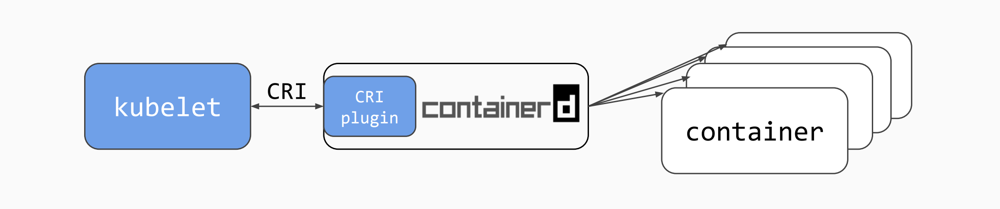
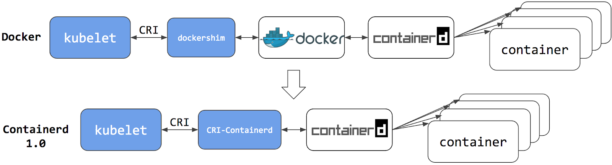
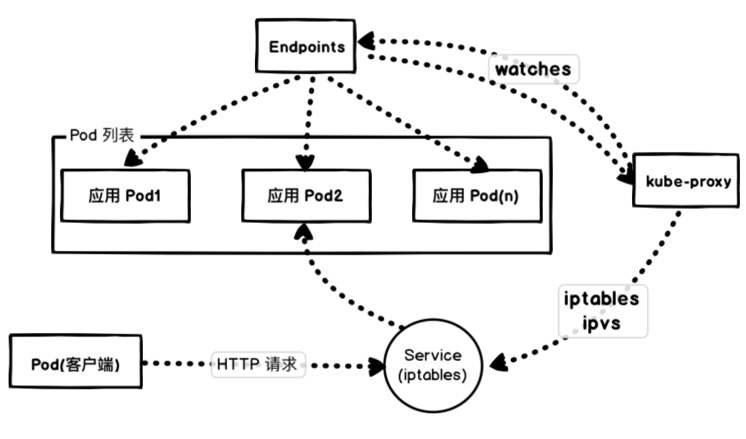
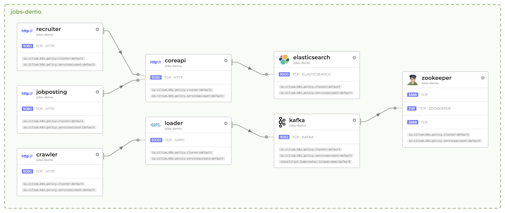
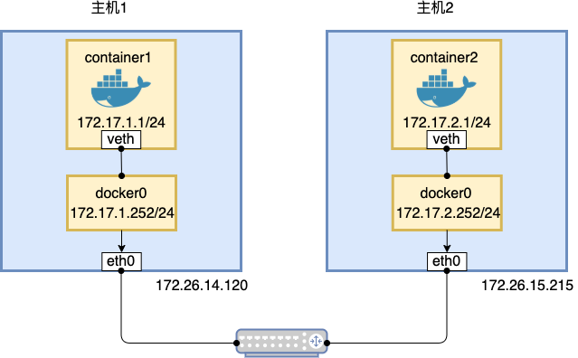

00 为什么我们要学习 Kubernetes 技术
Kubernetes 是谷歌开源的分布式容器编排和资源管理系统。因为它的英文术语字数太长，社区专门给它定义了一个缩写单词：K8s。从 2014 年发布至今，已经成为 GitHub 社区中最炙手可热的开源项目。因为以 K8s 为核心的云原生技术已经成为业界企业数字化转型的事实标准技术栈。国内企业纷纷效仿并开始计划落地 K8s 集群作为企业应用发布的默认基础设施，但是具体怎么落实这项云原生技术其实并没有特别好实施的工具，大部分情况下我们必须结合现有企业的实际情况来落地企业应用。当然，这个说起来容易，真正开始落地的时候，技术人员就会发现遇到一点问题能在网上查到的都是一些碎片化的知识，很难系统的解决实际应用发布和部署问题。所以，笔者借着这个场景机会，秉着布道云原生技术的信心带着大家来一起探讨 K8s 落地的各项技术细节和实际的决策思路，让 K8s 的用户可以从容自如的应对落地容器集群编排技术。
在学习 K8s 技术之前，我想给大家梳理下当前社区在学习 K8s 过程中遇到的几个问题：
选择多： K8s 系统是一套专注容器应用管理的集群系统，它的组件一般按功能分别部署在主控节点（master node）和计算节点(agent node)。对于主控节点，主要包含有 etcd 集群，controller manager 组件，scheduler 组件，api-server 组件。对于计算节点，主要包含 kubelet 组件和 kubelet-proxy 组件。初学者会发现其实 K8s 的组件并不是特别多，为什么给人的印象就是特别难安装呢？ 这里需要特别强调的是，即使到了 2020 年，我们基础软硬件设施并不能保证装完就是最优的配置，仍然需要系统工程师解决一些兼容性问题。所以当你把这些 K8s 系统组件安装到物理机、虚拟机中，并不能保证就是最优的部署配置。因为这个原因，当你作为用户在做一份新的集群部署的方案的时候，需要做很多选择题才能调优到最优解。
另外，企业业务系统的发布，并不止依赖于 K8s，它还需要包括网络、存储等。我们知道容器模型是基于单机设计的，当初设计的时候并没有考虑大规模的容器在跨主机的情况下通信问题。Pod 和 Pod 之间的网络只定义了接口标准，具体实现还要依赖第三方的网络解决方案。一直发展到今天，你仍然需要面对选择，选择适合的网络方案和网络存储。
这里特别强调的是，目前容器网络并没有完美方案出现，它需要结合你的现有环境和基础硬件的情况来做选择。但是，当前很多书籍资料只是介绍当前最流行的开源解决方案，至于这个方案是否能在你的系统里面跑的更好是不承担责任的。这个给系统运维人员带来的痛苦是非常巨大的。一直到现在，我遇到很多维护 K8s 系统的开发运维还是对这种选择题很头疼。是的，开源社区的方案是多头驱动并带有竞争关系的，我们不能拍脑袋去选择一个容器网络之后就不在关心它的发展的。今天的最优网络方案可能过半年就不是最优的了。同理这种问题在应对选择容器存储解决方案过程中也是一样的道理。
排错难： 当前 K8s 社区提供了各种各样的 K8s 运维工具，有 ansible 的，dind 容器化的，有 mac-desktop 桌面版本的，还有其他云原生的部署工具。每种工具都不是简单的几行代码就能熟悉，用户需要投入很大的精力来学习和试用。因为各种底层系统的多样性，你会遇到各种各样的问题，比如容器引擎 Docker 版本低，时间同步组件 ntp 没有安装，容器网络不兼容底层网络等。任何一个点出了问题，你都需要排错。加上企业的系统环境本来就很复杂，很多场景下都是没有互联网可以查资料的，对排错来说即使所有的日志都收集起来做分析也很难轻易的排错。
你可能会觉得这是公司的基础设施没有建设好，可以考虑专家看看。用户倒是想解决这个问题，但是不管是商业方案还是开源方案都只是片面的考虑到 K8s 核心组件的排错，而真正企业关心的应用容器，集群，主机，网络，存储，监控日志，持续集成发布等方面的排错实践就只能靠自己摸索，你很难系统的学习到。还有，K8s 集群的版本是每个季度有一个大版本的更新。对于企业用户来说怎么才能在保证业务没有影响的情况下平滑更新 K8s 组件呢？ 头疼的问题就是这么出来的。一旦发生不可知问题，如何排错和高效的解决问题呢。这就是本系列专栏和大家探讨的问题。
场景多： 在早期的应用编排场景，主要是为了削峰填谷，高效利用浪费的主机资源。一个不公开的企业运维秘密就是生产中主机资源平均利用率不超过 20%。这不是因为运维傻，这是因为如果遇到峰值，主机系统需要能平滑应对，需要给业务容量留有余地。因为容器的引入让原来主机仅可以部署 3-4 个进程的系统，现在可以充分利用容器进程隔离的技术在主机上部署 20-40 个进程系统，并且各自还不受影响。这就是容器应用的最大好处。
社区里面有好学习的技术架构师也曾经说过，在介绍什么是容器时，就拿租房过程中，单身公寓和打隔断的群租房来对比形容，特别形象。随着应用场景的多样性，在应对突发流量的时候，K8s 编排系统就是作为一种弹性伸缩的工具，快速提高进程的数量来承载流量。在解决微服务应用编排上，除了传统的微服务部署需求之外，还有混合部署需要的 Service Mesh 技术也对 K8s 提出了流量编排的新要求。另外还有 Serverless 场景下的 FaaS 框架 Openfaas 也对 K8s 带来了新的机会和应用难点。还有很多有状态中间件服务，如数据库集群等也都在大量的迁入到 K8s 集群中，并获得了很好的实践反馈。
现在 K8s 已经成为企业数字化转型中应用发布管理的标准基础设施方案，面对这么多场景需求，我们用一套容器编排集群能把所有需求都解决吗？显然是不可以的。实际情况下很多应用集群为了管理和优化上的考虑，都是多套集群系统。多套集群在多个区域部署，给运维带来了不少麻烦。这也是多场景下多集群治理带来的烦恼。
以上这些问题仅仅是笔者这些年来遇到的客户在和我交流过程中积累下的重点问题。实际过程中，我们还会遇到很多不是 K8s 的问题，但是我们为了落地容器编排集群不得不做的折中选择。这些都是我们在学习过程中需要注意和总结的经验。
专栏特色
- 从实践场景出发，按照使用者的角度来梳理技术细节
- 通过完整的知识体系为 K8s 用户提供了使用依据
- 各章节切入点考虑普适性，让更多人能有理有据的选择适合自己的问题解决方案
你将获得什么
通过本专栏的学习，你将全方位的理解 K8s 组件的原理技术，并结合云原生开源思想，学习到分布式系统的组合过程。为了解决日常场景中可能的问题，你也可以分章节获得独家的实践理解和解决思路过程，让你可以推演并学习到一些架构思维模型。并且笔者也给大家精选了 K8s 组件的详细讲解，可以让好奇的使用者，不断可以知道这些组件的原理，还能知道它们内部的实现，让你可以更准确的把握这些组件，相信你也有机会参与 K8s 的开发并写出更多的组件代替它们。
专栏结构
我在编写此系列文章的过程中，尽量避免复制网络上大量的参考资料，通过自身搭建的系统帮助大家从零搭建起生产落地的经验。因为涉及的内容太分散，容易让读者失焦。所以我重点把生产落地中遇到的几个点给大家重点讲讲。
第一部分，我就想讲讲 K8s 组件的优化和安装步骤过程中需要注意的问题。这块，有很多书都讲的很细了。但是我看到的书籍中都是讲过程，不讲为什么是这样设计的。这个在当年我学习 K8s 的过程中就非常的痛苦。这次我想帮大家扫清这块的学习障碍。
第二部分，我们需要讲配置。一套复杂的系统本身最重要的就是熟悉各种组件的配置信息。配置错了，大家怎么调试也不会有好的结果，所以这块的各个选项的理解也是很重要的。虽然这块很枯燥但是还必须掌握。我尽量通过 kubectl 来描述这块的内容。
第三部分，是对网络流量的架构分享，我想这块的内容也是大量 用户特别关心的地方。因为每一种网络方案还要涉及配置，压测，选择，还是有很多需要注意的地方。
第四部分，就是业务应用的存储选择了。网络存储方案发展至今，最出名的就是 Ceph 了。但是如果你不合时宜的直接上马 Ceph 方案，马上就会掉入运维 Ceph 的坑里面。其实容器存储的方案有很多种，你要结合你的需求，选择合适的方案。当然在企业内部，大家都需要有那种统一的方案，什么需求都可以支持的容器存储，我觉得这个就是对业务理解的偏差。更友好的选择应该是专项专用。这样肯定会带来各种各样的方案，这个也不是不能解决，使用 K8s 来编排管理各种存储也是业务发展的必然。
第五部分，我们会重点关注 K8s 集群的安全配置工作。安装 K8s 算是一个中型大小的任务，对 K8s 的安全配置和调优更是业务重心。这方面的开源工具层出不穷，我们需要学习和掌握核心方法论，梳理出自己需要的工具链，来应对容器安全落地实践。
最后，我希望大家能尽快入坑 K8s 的学习过程中，让我们一起探讨和落地安全可靠的 K8s 容器应用编排集群。
专栏作者
肖德时，企业级容器技术的布道师，Docker/Kubernetes/Openshift 等多项国际顶级开源项目社区开发者。前容器云创业公司数人云 CTO。目前对容器技术、Kubernetes 等分布式系统等领域进行技术研究和布道。
适宜人群
所有运维开发工程师、系统工程师、DevOps 工程师和想掌握容器和技术的IT工程师都可以来看一看。因为云原生技术已经在中国企业广泛应用，我们需要学习并更深入的学习这项技术，为了更准确的理解这项技术，本系列最适合各应用阶段的企业员工和技术爱好者。
01 重新认识 Kubernetes 的核心组件
本篇我们开始介绍 Kubernetes 的核心组件，为了方便大家提前在脑中建立起完整的 Kubernetes 架构印象，笔者整理出核心组件的介绍如下：
- kube-apiserver，提供了 Kubernetes 各类资源对象（Pod、RC、Service 等）的增删改查及 watch 等 HTTP REST 接口，是整个系统的管理入口。
- kube-controller-manager，作为集群内部的管理控制中心，负责集群内的 Node、Pod 副本、服务端点（Endpoint）、命名空间（Namespace）、服务账号（ServiceAccount）、资源定额（ResourceQuota）等对象管理。
- kube-scheduler，集群调度器，提供了策略丰富，弹性拓扑能力。调度实现专注在业务可用性、性能和容量等能力上。
- kube-proxy，提供南北向流量负载和服务发现的反向代理。
- kubelet，是工作节点的管理 Pod 的控制程序，专门来调度启动 Pod 容器组。
- etcd，是集群数据集中存储的分布式键值服务，用来存储 Kubernetes 集群中所有数据和状态的数据库。
- cni-plugins，容器网络工作组维护的标准网络驱动如 fannel、ptp、host-local、portmap、tuning、vlan、sample、dhcp、ipvlan、macvlan、loopback、bridge 等网络插件供业务需求使用。这层 Overlay 网络只能包含一层，无法多层网络的互联互通。
- runc，运行单个容器的容器运行时进程，遵循 OCI（开放容器标准）。
- cri-o，容器运行时管理进程，类似 Docker 管理工具 containerd，国内业界普遍使用 containerd。
我们可以用如下一张架构设计图更能深刻理解和快速掌握 Kubernetes 的核心组件的布局：

通过以上的介绍，核心组件的基本知识就这么多。从最近几年落地 Kubernetes 云原生技术的用户反馈来看，大家仍然觉得这套系统太复杂，不太好管理，并且随时担心系统给业务带来致命性的影响。
那么 Kubernetes 的组件是为分布式系统设计的，为什么大家还是担心它会影响业务系统的稳定性呢？从笔者接触到的用户来讲，业界并没有统一的可以直接参考的解决方案。大家在落地过程中，只能去摸石头过河，一点一点总结经验并在迭代中不断地改进实施方案。因为业务规模的不同，Kubernetes 实施的架构也完全不同，你很难让基础设施的一致性在全部的商业企业 IT 环境中保持一致性。业务传播的都是最佳实践，在 A 用户这里可以行的通，不代表在 B 用户可以实施下去。
当然，除了客观的限制因素之外，我们应用 Kubernetes 的初衷是尽量的保持企业的 IT 基础设施的一致性，并随着企业业务需求的增长而弹性扩展。毕竟 Kubernetes 是谷歌基于内部 Borg 应用管理系统成功经验的基础之上开源的容器编排系统，它的发展积累了整个业界的经验精华，所以目前企业在做数字转型的阶段，都在无脑的切换到这套新的环境中，生怕技术落后影响了业务的发展。
本篇的目的是让大家从企业的角度更深刻的理解 Kubernetes 的组件，并能用好他们，所以笔者准备从一下几个角度来分析：
- 主控节点组件的使用策略
- 工作节点组件的使用策略
- 工作节点附加组件的使用策略
主控节点组件的使用策略
从刚接手维护 Kubernetes 集群的新用户角度考虑，一般第一步要做的就是遵循安装文档把集群搭建起来。世面上把集群安装的工具分为两类，
一类是学习用集群安装工具：
- Docker Desktop for Kubernetes
- Kind（Kubernetes IN Docker）
- Minikube
- MicroK8s
另一类是生产级别的安装工具：
- kubeadm
- kops
- kubespray
- Rancher Kubernetes Engine（RKE）
- K3s
其中 kubeadm 和 RKE 采用了容器组件的形式来安装 Kubernetes 集群。虽然采用系统容器来运行集群环境对主机系统的侵入性降低了，但运维的维护成本会线性增加。维护过容器应用的用户都会知道，容器技术主要是对运行进程的隔离，它并不是为系统进程设计的隔离工具，容器的生命周期都很短，随时可以失败。当容器进程出错的时候，隔离环境很难还原故障的环境。常用的办法就是通过重启容器来忽略故障，期望能快速排除故障。
但是往往这种潜在的小问题，就是让你很烦恼并对长时间无法重现感到烦恼。那么对于系统进程，Linux 是有对应的系统维护工具 Systemd 来维护的。它的生态足够完善，并能在多种 Linux 环境中保持行为一致。当出现问题的时候，运维可以直接登录主机快速排查系统日志来定位排错。根据这样的经验积累，笔者推荐生产环境还是采用原生进程的方式来维护 Kubernetes 的组件，让运维可以集中精力在集群架构上多做冗余优化。
接下来我们重新理解 etcd 集群的架构。根据 Kubernetes 官方文档的参考资料介绍，通常按照 etcd 集群的拓扑模型可以分为两类生产级别的 Kubernetes 集群。
栈式 etcd 集群拓扑：

独立式 etcd 集群拓扑：
参考上面的架构图，我们可以看到 etcd 集群的部署方式影响着 Kubernetes 集群的规模。在落地实践中因为采购的机器都是高性能大内存的刀片服务器，业务部门的期望是能充分的把这些资源利用上，并不期望用这些机器来跑集群控制管理组件。
当遇到这种情况，很多部署方案会采用第一种方案，是把主机节点、工作节点和 etcd 集群都放在一起复用资源。从高可用架构来讲，高度的应用密度集合并不能给用户带来无限制的好处。试想当出现节点宕机后这种架构的隐患是业务应用会受到极大的影响。所以通常的高可用架构经验是工作节点一定要和主控节点分开部署。在虚拟化混合环境下，主控节点可以使用小型的虚拟机来部署最为合适。当你的基础设施完全采用物理机的时候，直接使用物理机来部署主控节点是很浪费的，建议在现有物理机集群中先使用虚拟化软件虚拟化一批中小型虚拟机来提供管理节点的管理资源。开源的管理系统有 OpenStack，商业的方案是 VMware vSphere，按需求丰俭由人即可。
除了以上标准的部署解决方案，社区还提供了单机模式部署的 K3s 集群模式。把核心组件直接绑定为一个单体二进制文件，这样的好处就是这个系统进程只有一个，非常容易管理和恢复集群。在纯物理机环境，使用这种单点集群架构来部署应用，我们可以通过冗余部署多套集群的方式来支持应用的高可用和容灾。下图就是 K3s 的具体架构图：
K3s 本来是为嵌入式环境提供的精简 Kubernetes 集群，但是这个不妨碍我们在生产实践中灵活运用。K3s 提供的是原生 Kubernetes 的所有稳定版本 API 接口，在 x86 集群下可以发挥同样的编排容器业务的能力。
工作节点组件的使用策略
在工作节点上默认安装的组件是 kubelet 和 kube-proxy。在实际部署的过程中，kubelet 是有很多配置项需要调优的，这些参数会根据业务需求来调整，并不具备完全一样的配置方案。让我们再次认识一下 kubelet 组件，对于 kubelet，它是用来启动 Pod 的控制管理进程。虽然 kubelet 总体启动容器的工作流程，但是具体的操作它是依赖主机层面的容器引擎来管理的。对于依赖的容器引擎，我们可以选择的组件有 containerd、ori-o 等。Kubernetes 默认配置的组件是 cri-o。但是业界实际落地部署最多的还是 containerd，因为它的部署量巨大，很多潜在的问题都会被第一时间解决。containerd 是从 docker 引擎抽离出来的容器管理工具，用户具备长期的使用经验，这些经验对于运维和管理容器会带来很多潜在的使用信心。

对于容器实例的维护，我们常用的命令行工具是 Docker，在切换到 containerd 之后，命令行工具就切换为 ctr 和 crictl。很多时候用户无法搞清楚这两个工具的用处，并和 Docker 混为一谈。
Docker 可以理解为单机上运行容器的最全面的开发管理工具，这个不用多介绍，大家都了解。ctr 是 containerd 的客户端级别的命令行工具，主要的能力是管理运行中的容器。crictl 这个工具是管理 CRI 运行时环境的，在上图中是操作 cri-containerd 的组件。它的功能主要聚焦在 Pod 层面的镜像加载和运行。
还请大家注意下 Docker、ctr、crictl 三者细节实现上的差别。举个例子，Docker 和 ctr 确实都是管理主机层面的镜像和容器的，但是他们都有自己独立的管理目录，所以你即使是同样的加载镜像的操作，在主机存储的文件位置也是不同的，他们的镜像层无法复用。而 crictl 是操作 Pod 的，它并不是直接操作镜像的进程，一般把命令发送给对应的镜像管理程序，比如 containerd 进程。
另外一个组件是 kube-proxy，它是面向 Service 对象概念的南北向反向代理服务。通过对接 Endpoint 对象，可以按照均衡策略来负载流量。另外为了实现集群全局的服务发现机制，每一个服务都会定义全局唯一的名字，也就是 Service 的名字。这个名字可以通过附加的组件 coredns 来实现集群内的名字解析，也就是服务发现。对于流量的负载，Kubernetes 是通过 iptables 或 IPVS（IP Virtual Server）来实现。
在正常的集群规模下，Service 并不会超过 500 个，但是华为容器技术团队做了一个极限压测，发现了 iptables 在实现反向代理的时候出现的性能瓶颈。试验验证了，当 Service 增加到足够大的时候，Service 规则增加对于 iptables 是 O(n) 的复杂度，而切换到 IPVS 却是 O(1)。压测结果如下：
目前 Kubernetes 默认反向代理激活模块为 IPVS 模式，iptables 和 IPVS 都是基于 Linux 的子模块 netfilter，他们的相同点就是做反向代理，但是还是有以下 3 点区别需要知道：
- IPVS 提供大规模集群扩展性和高性能
- IPVS 提供更丰富的负载均衡算法（最小负载、最小链接数、基于局部性调度、加权轮叫等等）
- IPVS 支持服务器健康检查和网络重试机制
当 IPVS 在处理流量的 packet filtering、SNAT 和 masquerade 需求时，仍然需要使用 iptables 的扩展包工具 ipset 配置固定数量的转换规则，不会像 iptables 模式下随着服务和 Pod 的增加而线性写入规则导致系统的计算 CPU 负载加大，影响集群的处理能力。
以下表单是 IPVS 模式需要使用的 ipset 规则：
| set name | members | usage |
|---|---|---|
| KUBE-CLUSTER-IP | All service IP + port | Mark-Masq for cases that masquerade-all=true or clusterCIDR specified |
| KUBE-LOOP-BACK | All service IP + port + IP | masquerade for solving hairpin purpose |
| KUBE-EXTERNAL-IP | service external IP + port | masquerade for packages to external IPs |
| KUBE-LOAD-BALANCER | load balancer ingress IP + port | masquerade for packages to load balancer type service |
| KUBE-LOAD-BALANCER-LOCAL | LB ingress IP + port with externalTrafficPolicy=local |
accept packages to load balancer with externalTrafficPolicy=local |
| KUBE-LOAD-BALANCER-FW | load balancer ingress IP + port with loadBalancerSourceRanges |
package filter for load balancer with loadBalancerSourceRanges specified |
| KUBE-LOAD-BALANCER-SOURCE-CIDR | load balancer ingress IP + port + source CIDR | package filter for load balancer with loadBalancerSourceRanges specified |
| KUBE-NODE-PORT-TCP | nodeport type service TCP port | masquerade for packets to nodePort(TCP) |
| KUBE-NODE-PORT-LOCAL-TCP | nodeport type service TCP port with externalTrafficPolicy=local |
accept packages to nodeport service with externalTrafficPolicy=local |
| KUBE-NODE-PORT-UDP | nodeport type service UDP port | masquerade for packets to nodePort(UDP) |
| KUBE-NODE-PORT-LOCAL-UDP | nodeport type service UDP port with externalTrafficPolicy=local |
accept packages to nodeport service with externalTrafficPolicy=local |
另外，IPVS 模式会在以下场景下降级使用 iptables 模式：
- kube-proxy 启动的同时启用
--masquerade-all=true - kube-proxy 启动时指定 Pod 层网段
- Load Balancer 类型的 Service
- NodePort 类型的 Service
- 配置了 externalIP 的 Service
工作节点附加组件的使用策略
提到附加的组件，一般常识是这些组件可有可无，锦上添花的能力而已。但是在 Kubernetes 集群中，这些附加组件是不得不安装的，不然整个集群就是一套鸡肋的展览品。Kubernetes 官方把这些附加组件分为以下五类：
- 网络和网络策略
- 服务发现
- 可视化管理
- 基础设施
- 遗留组件
大家看到标题，基本上就能理解这些组件的用处。我这里还是从实用的角度和大家一起重新认识一下这些组件，为之后的使用提供经验参考。
1. 网络和网络策略
对于网络，我们主要指容器网络。注意在 Kubernetes 集群里面，是有两层虚拟网络的。一说虚拟网络，就会有丢包率，这个是以往虚拟化环境不可想象的问题。为了提高或者说规避这方面的棘手问题，我们会放弃所有官方的方案，采用传统的网络方案来支持。当然传统的网络方案大都不是为 Kubernetes 网络设计的，需要做很多自定义适配工作来完善体验。在不理想的传统方案之外，容器网络方案中最流行的有 Calico、Cilium、Flannel、Contiv 等等。采用这些方案之后，随着业务流量的增加一定会带来网络丢包的情况。网络丢包带来的问题是业务处理能力的降低，为了恢复业务实例的处理能力，我们常规的操作是水平扩展容器实例数。注意，正是因为实例数的增加反而会提高业务处理能力，让运维人员忽略容器网络带来的性能损耗。另外，Kubernetes 在业务实践中还参考了主流网络管理的需求设计，引入了 Network Policies。这些策略定义了 Pod 之间的连通关系，方便对业务容器组的安全网络隔离。当然笔者在实践中发现，这些策略完全依赖容器网络的实现能力，依赖性强，只能作为试验品体验，但是在实际业务中，还没有看到实际的能力优势。
2. 服务发现
目前提供的能力就是给 Pod 提供 DNS 服务，并引入了域名的定义规则。官方认可的只有 CoreDNS。注意 ，这个服务发现只能在集群内部使用。不推荐直接暴露给外部服务，集群对外暴露的服务仍然是 IP 和端口。外部 DNS 可以灵活的指定这个固定 IP 来让业务在全局服务发现。
3. 可视化管理
官方提供了 Dashboard，这是官方提供的标准管理集群的 web 界面，很多开发集成测试环境，使用它就可以满足业务管理的需求。这个可选安装。
4. 基础设施
官方提供了 KubeVirt，是可以让 Kubernetes 运行虚拟机的附加组件，默认运行在裸机群集上。从目前的实践经验来看，这种能力还属于试验性的能力，一般很少人使用。
5. 遗留组件
对于很多老版本的 Kubernetes，有很多历史遗留的组件可以选用，所以官方把这些可选的组件都保留了下来，帮助用户在迁移集群版本的过程中可以继续发挥老集群的能力。一般很少人使用。
通过三个纬度的介绍，我相信大家对 Kubernetes 的核心组件有了更深入的理解。在生产实践中，为了标准化运维模型，我们对 Kubernetes 的组件可以按照业务需求定义一个基线模型，有选择的使用这些组件，相信一定可以规避很多兼容性的问题。在笔者遇到的大部分的 Kubernetes 集群故障案例中，大部分就是对组件的错用或者误用，让问题变的更复杂，更难以复现。
当然，云端的 Kubernetes 可以彻底解决基线的问题，我相信未来用户会越来越容易的使用到靠谱的 Kubernetes 集群环境。只是你一定要记住，我们只是把运维 Kubernetes 的难题交给专业的云服务开发者而已。
02 深入理解 Kubernets 的编排对象
Kubernetes 系统是一套分布式容器应用编排系统，当我们用它来承载业务负载时主要使用的编排对象有 Deployment、ReplicaSet、StatefulSet、DaemonSet 等。读者可能好奇的地方是 Kubernetes 管理的对象不是 Pod 吗？为什么不去讲讲如何灵活配置 Pod 参数。其实这些对象都是对 Pod 对象的扩展封装。并且这些对象作为核心工作负载 API 固化在 Kubernetes 系统中了。所以 ，我们有必要认真的回顾和理解这些编排对象，依据生产实践的场景需要，合理的配置这些编排对象，让 Kubernetes 系统能更好的支持我们的业务需要。本文会从实际应用发布的场景入手，分析和梳理具体场景中需要考虑的编排因素，并整理出一套可以灵活使用的编排对象使用实践。
常规业务容器部署策略
策略一：强制运行不少于 2 个容器实例副本
在应对常规业务容器的场景之下，Kubernetes 提供了 Deployment 标准编排对象，从命令上我们就可以理解它的作用就是用来部署容器应用的。Deployment 管理的是业务容器 Pod，因为容器技术具备虚拟机的大部分特性，往往让用户误解认为容器就是新一代的虚拟机。从普通用户的印象来看，虚拟机给用户的映象是稳定可靠。如果用户想当然地把业务容器 Pod 也归类为稳定可靠的实例，那就是完全错误的理解了。容器组 Pod 更多的时候是被设计为短生命周期的实例，它无法像虚拟机那样持久地保存进程状态。因为容器组 Pod 实例的脆弱性，每次发布的实例数一定是多副本，默认最少是 2 个。
部署多副本示例：
apiVersion: apps/v1
kind: Deployment
metadata:
name: nginx-deployment
labels:
app: nginx
spec:
replicas: 2
selector:
matchLabels:
app: nginx
template:
metadata:
labels:
app: nginx
spec:
containers:
- name: nginx
image: nginx:1.7.9
ports:
- containerPort: 80
策略二：采用节点亲和，Pod 间亲和/反亲和确保 Pod 实现高可用运行
当运维发布多个副本实例的业务容器的时候，一定需要仔细注意到一个事实。Kubernetes 的调度默认策略是选取最空闲的资源主机来部署容器应用，不考虑业务高可用的实际情况。当你的集群中部署的业务越多，你的业务风险会越大。一旦你的业务容器所在的主机出现宕机之后，带来的容器重启动风暴也会即可到来。为了实现业务容错和高可用的场景，我们需要考虑通过 Node 的亲和性和 Pod 的反亲和性来达到合理的部署。这里需要注意的地方是，Kubernetes 的调度系统接口是开放式的，你可以实现自己的业务调度策略来替换默认的调度策略。我们这里的策略是尽量采用 Kubernetes 原生能力来实现。
为了更好地理解高可用的重要性，我们深入探讨一些实际的业务场景。
首先，Kubernetes 并不是谷歌内部使用的 Borg 系统，大部分中小企业使用的 Kubernetes 部署方案都是人工扩展的私有资源池。当你发布容器到集群中，集群不会因为资源不够能自动扩展主机并自动负载部署容器 Pod。即使是在公有云上的 Kubernetes 服务，只有当你选择 Serverlesss Kubernetes 类型时才能实现资源的弹性伸缩。很多传统企业在落地 Kubernetes 技术时比较关心的弹性伸缩能力，目前只能折中满足于在有限静态资源的限制内动态启停容器组 Pod，实现类似的业务容器的弹性。用一个不太恰当的比喻就是房屋中介中，从独立公寓变成了格子间公寓，空间并没有实质性扩大。在实际有限资源的情况下，Kubernetes 提供了打标签的功能，你可以给主机、容器组 Pod 打上各种标签，这些标签的灵活运用，可以帮你快速实现业务的高可用运行。
**其次，实践中你会发现，为了高效有效的控制业务容器，你是需要资源主机的。**你不能任由 Kubernetes 调度来分配主机启动容器，这个在早期资源充裕的情况下看不到问题。当你的业务复杂之后，你会部署更多的容器到资源池中，这个时间你的业务运行的潜在危机就会出现。因为你没有管理调度资源，导致很多关键业务是运行在同一台服务器上，当主机宕机发生时，让你很难处理这种灾难。所以在实际的业务场景中，业务之间的关系需要梳理清楚，设计单元化主机资源模块，比如 2 台主机为一个单元，部署固定的业务容器组 Pod，并且让容器组 Pod 能足够分散的运行在这两台主机之上，当任何一台主机宕机也不会影响到主体业务，实现真正的高可用。
主机亲和性示例
pods/pod-with-node-affinity.yaml
apiVersion: v1
kind: Pod
metadata:
name: with-node-affinity
spec:
affinity:
nodeAffinity:
requiredDuringSchedulingIgnoredDuringExecution:
nodeSelectorTerms:
- matchExpressions:
- key: kubernetes.io/e2e-az-name
operator: In
values:
- e2e-az1
- e2e-az2
preferredDuringSchedulingIgnoredDuringExecution:
- weight: 1
preference:
matchExpressions:
- key: another-node-label-key
operator: In
values:
- another-node-label-value
containers:
- name: with-node-affinity
image: gcr.azk8s.cn/google-samples/node-hello:1.0
目前有两种类型的节点亲和，分别为 requiredDuringSchedulingIgnoredDuringExecution 和 preferredDuringSchedulingIgnoredDuringExecution。你可以视它们为“硬”和“软”，意思是，前者指定了将 pod 调度到一个节点上必须满足的规则，后者指定调度器将尝试执行但不能保证的偏好。
Pod 间亲和与反亲和示例
使用反亲和性避免单点故障例子：
affinity:
podAntiAffinity:
requiredDuringSchedulingIgnoredDuringExecution:
- labelSelector:
matchExpressions:
- key: "app"
operator: In
values:
- zk
topologyKey: "kubernetes.io/hostname"
意思是以主机的 hostname 命名空间来调度，运行打了标签键 "app" 并含有 "zk" 值的 Pod 在不同节点上部署。
策略三：使用 preStop Hook 和 readinessProbe 保证服务平滑更新不中断
我们部署应用之后，接下来会做的工作就是服务更新的操作。如何保证容器更新的时候，业务不中断是最重要的关心事项。参考示例：
apiVersion: apps/v1
kind: Deployment
metadata:
name: nginx
spec:
replicas: 1
selector:
matchLabels:
component: nginx
template:
metadata:
labels:
component: nginx
spec:
containers:
- name: nginx
image: xds2000/nginx-hostname
ports:
- name: http
hostPort: 80
containerPort: 80
protocol: TCP
readinessProbe:
httpGet:
path: /
port: 80
httpHeaders:
- name: X-Custom-Header
value: Awesome
initialDelaySeconds: 15
timeoutSeconds: 1
lifecycle:
preStop:
exec:
command: ["/bin/bash", "-c", "sleep 30"]
给 Pod 里的 container 加 readinessProbe（就绪检查），通常是容器完全启动后监听一个 HTTP 端口，kubelet 发送就绪检查探测包，正常响应说明容器已经就绪，然后修改容器状态为 Ready，当 Pod 中所有容器都 Ready 之后这个 Pod 才会被 Endpoint Controller 加进 Service 对应 Endpoint IP:Port 列表，然后 kube-proxy 再更新节点转发规则，更新完了即便立即有请求被转发到新的 Pod 也能保证能够正常处理连接，避免了连接异常。
给 Pod 里的 container 加 preStop hook，让 Pod 真正销毁前先 sleep 等待一段时间，留点时间给 Endpoint controller 和 kube-proxy 更新 Endpoint 和转发规则，这段时间 Pod 处于 Terminating 状态，即便在转发规则更新完全之前有请求被转发到这个 Terminating 的 Pod，依然可以被正常处理，因为它还在 sleep，没有被真正销毁。
策略四：通过泛域名转发南北向流量范式
常规集群对外暴露一个公网 IP 作为流量入口（可以是 Ingress 或 Service），再通过 DNS 解析配置一个泛域名指向该 IP（比如 *.test.foo.io），现希望根据请求中不同 Host 转发到不同的后端 Service。比如 a.test.foo.io 的请求被转发到 my-svc-a，b.test.foo.io 的请求转发到 my-svc-b。当前 Kubernetes 的 Ingress 并不原生支持这种泛域名转发规则，我们需要借助 Nginx 的 Lua 编程能力解决实现泛域名转发。
Nginx proxy 示例（proxy.yaml）：
apiVersion: apps/v1
kind: Deployment
metadata:
labels:
component: nginx
name: proxy
spec:
replicas: 1
selector:
matchLabels:
component: nginx
template:
metadata:
labels:
component: nginx
spec:
containers:
- name: nginx
image: "openresty/openresty:centos"
ports:
- name: http
containerPort: 80
protocol: TCP
volumeMounts:
- mountPath: /usr/local/openresty/nginx/conf/nginx.conf
name: config
subPath: nginx.conf
- name: dnsmasq
image: "janeczku/go-dnsmasq:release-1.0.7"
args:
- --listen
- "127.0.0.1:53"
- --default-resolver
- --append-search-domains
- --hostsfile=/etc/hosts
- --verbose
volumes:
- name: config
configMap:
name: configmap-nginx
---
apiVersion: v1
kind: ConfigMap
metadata:
labels:
component: nginx
name: configmap-nginx
data:
nginx.conf: |-
worker_processes 1;
error_log /error.log;
events {
accept_mutex on;
multi_accept on;
use epoll;
worker_connections 1024;
}
http {
include mime.types;
default_type application/octet-stream;
log_format main '$time_local $remote_user $remote_addr $host $request_uri $request_method $http_cookie '
'$status $body_bytes_sent "$http_referer" '
'"$http_user_agent" "$http_x_forwarded_for" '
'$request_time $upstream_response_time "$upstream_cache_status"';
log_format browser '$time_iso8601 $cookie_km_uid $remote_addr $host $request_uri $request_method '
'$status $body_bytes_sent "$http_referer" '
'"$http_user_agent" "$http_x_forwarded_for" '
'$request_time $upstream_response_time "$upstream_cache_status" $http_x_requested_with $http_x_real_ip $upstream_addr $request_body';
log_format client '{"@timestamp":"$time_iso8601",'
'"time_local":"$time_local",'
'"remote_user":"$remote_user",'
'"http_x_forwarded_for":"$http_x_forwarded_for",'
'"host":"$server_addr",'
'"remote_addr":"$remote_addr",'
'"http_x_real_ip":"$http_x_real_ip",'
'"body_bytes_sent":$body_bytes_sent,'
'"request_time":$request_time,'
'"status":$status,'
'"upstream_response_time":"$upstream_response_time",'
'"upstream_response_status":"$upstream_status",'
'"request":"$request",'
'"http_referer":"$http_referer",'
'"http_user_agent":"$http_user_agent"}';
access_log /access.log main;
sendfile on;
keepalive_timeout 120s 100s;
keepalive_requests 500;
send_timeout 60000s;
client_header_buffer_size 4k;
proxy_ignore_client_abort on;
proxy_buffers 16 32k;
proxy_buffer_size 64k;
proxy_busy_buffers_size 64k;
proxy_send_timeout 60000;
proxy_read_timeout 60000;
proxy_connect_timeout 60000;
proxy_cache_valid 200 304 2h;
proxy_cache_valid 500 404 2s;
proxy_cache_key $host$request_uri$cookie_user;
proxy_cache_methods GET HEAD POST;
proxy_redirect off;
proxy_http_version 1.1;
proxy_set_header Host $http_host;
proxy_set_header X-Real-IP $remote_addr;
proxy_set_header X-Forwarded-For $proxy_add_x_forwarded_for;
proxy_set_header X-Forwarded-Proto $scheme;
proxy_set_header X-Frame-Options SAMEORIGIN;
server_tokens off;
client_max_body_size 50G;
add_header X-Cache $upstream_cache_status;
autoindex off;
resolver 127.0.0.1:53 ipv6=off;
server {
listen 80;
location / {
set $service '';
rewrite_by_lua '
local host = ngx.var.host
local m = ngx.re.match(host, "(.+).test.foo.io")
if m then
ngx.var.service = "my-svc-" .. m[1]
end
';
proxy_pass http://$service;
}
}
}
用 Service 的示例（service.yaml）：
apiVersion: v1
kind: Service
metadata:
labels:
component: nginx
name: service-nginx
spec:
type: LoadBalancer
ports:
- name: http
port: 80
targetPort: http
selector:
component: nginx
用 Ingress 的示例（ingress.yaml）：
apiVersion: extensions/v1beta1
kind: Ingress
metadata:
name: ingress-nginx
spec:
rules:
- host: "*.test.foo.io"
http:
paths:
- backend:
serviceName: service-nginx
servicePort: 80
path: /
有状态业务容器部署策略
StatefulSet 旨在与有状态的应用及分布式系统一起使用。为了理解 StatefulSet 的基本特性，我们使用 StatefulSet 部署一个简单的 Web 应用。
创建一个 StatefulSet 示例（web.yaml）：
apiVersion: v1
kind: Service
metadata:
name: nginx
labels:
app: nginx
spec:
ports:
- port: 80
name: web
clusterIP: None
selector:
app: nginx
---
apiVersion: apps/v1
kind: StatefulSet
metadata:
name: web
spec:
serviceName: "nginx"
replicas: 2
selector:
matchLabels:
app: nginx
template:
metadata:
labels:
app: nginx
spec:
containers:
- name: nginx
image: gcr.azk8s.cn/google_containers/nginx-slim:0.8
ports:
- containerPort: 80
name: web
volumeMounts:
- name: www
mountPath: /usr/share/nginx/html
volumeClaimTemplates:
- metadata:
name: www
spec:
accessModes: [ "ReadWriteOnce" ]
resources:
requests:
storage: 1Gi
注意 StatefulSet 对象运行的特点之一就是，StatefulSet 中的 Pod 拥有一个唯一的顺序索引和稳定的网络身份标识。这个输出最终将看起来像如下样子：
kubectl get pods -l app=nginx
NAME READY STATUS RESTARTS AGE
web-0 1/1 Running 0 1m
web-1 1/1 Running 0 1m
很多文档在提及 Statefulset 对象的概念时，用户容易望文生义，常常把挂盘的容器实例当成有状态实例。这是不准确的解释。在 Kubernetes 的世界里，有稳定的网络身份标识的容器组才是有状态的应用。例如：
for i in 0 1; do kubectl exec web-$i -- sh -c 'hostname'; done
web-0
web-1
另外，我们使用 kubectl run 运行一个提供 nslookup 命令的容器。通过对 Pod 的主机名执行 nslookup，你可以检查他们在集群内部的 DNS 地址。示例如下：
kubectl run -i --tty --image busybox:1.28 dns-test --restart=Never --rm
nslookup web-0.nginx
Server: 10.0.0.10
Address 1: 10.0.0.10 kube-dns.kube-system.svc.cluster.local
Name: web-0.nginx
Address 1: 10.244.1.6
nslookup web-1.nginx
Server: 10.0.0.10
Address 1: 10.0.0.10 kube-dns.kube-system.svc.cluster.local
Name: web-1.nginx
Address 1: 10.244.2.6
策略五：灵活运用 StatefulSet 的 Pod 管理策略
通常对于常规分布式微服务业务系统来说，StatefulSet 的顺序性保证是不必要的。这些系统仅仅要求唯一性和身份标志。为了加快这个部署策略，我们通过引入 .spec.podManagementPolicy 解决。
Parallel pod 管理策略告诉 StatefulSet 控制器并行的终止所有 Pod，在启动或终止另一个 Pod 前，不必等待这些 Pod 变成 Running 和 Ready 或者完全终止状态。示例如下：
apiVersion: v1
kind: Service
metadata:
name: nginx
labels:
app: nginx
spec:
ports:
- port: 80
name: web
clusterIP: None
selector:
app: nginx
---
apiVersion: apps/v1
kind: StatefulSet
metadata:
name: web
spec:
serviceName: "nginx"
podManagementPolicy: "Parallel"
replicas: 2
selector:
matchLabels:
app: nginx
template:
metadata:
labels:
app: nginx
spec:
containers:
- name: nginx
image: gcr.azk8s.cn/google_containers/nginx-slim:0.8
ports:
- containerPort: 80
name: web
volumeMounts:
- name: www
mountPath: /usr/share/nginx/html
volumeClaimTemplates:
- metadata:
name: www
spec:
accessModes: [ "ReadWriteOnce" ]
resources:
requests:
storage: 1Gi
业务运维类容器部署策略
在我们部署 Kubernetes 扩展 DNS、Ingress、Calico 能力时需要在每个工作节点部署守护进程的程序，这个时候需要采用 DaemonSet 来部署系统业务容器。默认 DaemonSet 采用滚动更新策略来更新容器，可以通过执行如下命令确认：
kubectl get ds/<daemonset-name> -o go-template='{{.spec.updateStrategy.type}}{{"\n"}}'
RollingUpdate
在日常工作中，我们对守护进程只需要执行更换镜像的操作：
kubectl set image ds/<daemonset-name> <container-name>=<container-new-image>
查看滚动更新状态确认当前进度：
kubectl rollout status ds/<daemonset-name>
当滚动更新完成时，输出结果如下：
daemonset "<daemonset-name>" successfully rolled out
此外，我们还有一些定期执行脚本任务的需求，这些需求可以通过 Kubernetes 提供的 CronJob 对象来管理，示例如下：
apiVersion: batch/v1beta1
kind: CronJob
metadata:
name: hello
spec:
schedule: "*/1 * * * *"
successfulJobsHistoryLimit: 0
failedJobsHistoryLimit: 0
jobTemplate:
spec:
template:
spec:
containers:
- name: hello
image: busybox
args:
- /bin/sh
- -c
- date; echo Hello from the Kubernetes cluster
restartPolicy: OnFailure
总结
本文从实际业务需求出发，带着读者一起梳理了 Kubernetes 的工作负载定义的稳定版本的编排对象 Deployment、StatefulSet、DaemonSet、CronJob。所有提供的资料都是来自行业分享的实践经验的总结，去掉了很多文档的繁琐或者不正确的介绍，帮助读者正确建立合理的编排对象的使用策略。当然，除了这些核心编排对象之外，Kubernetes 还提供了扩展接口，我们通过 Operator 编程框架就可以自定义需要的编排对象，把自己的运维经验用代码规范起来，让你的持续发布的流程更加方便快捷。
03 DevOps 场景下落地 K8s 的困难分析
Kubernetes 是用于自动部署，扩展和管理容器化应用程序的开源系统，一般被 DevOps 团队用来解决在 CI/CD（也就是持续集成、持续发布）场景下遇到的工具链没法统一，构建过程没法标准化等痛点。DevOps 团队在落地 Kubernetes 的过程中发现，在安装、发布、网络、存储、业务滚动升级等多个环节都会遇到一些不可预期的问题，并且官方的参考资料并没有确定性的方案来解决。很多 DevOps 因为需要快速迭代，都不得不采用现有的经验临时解决遇到的问题，因为场景限制，各家的问题又各有各的诉求，让很多经验无法真正的传承和共享。本文旨在直面当前的 DevOps 痛点，从源头梳理出核心问题点，并结合业界最佳的实践整理出一些可行的方法论，让 DevOps 团队在日后落地可以做到从容应对，再也不用被 Kubernetes 落地难而困扰了。
Kubernetes 知识体系的碎片化问题
很多 DevOps 团队在落地 Kubernetes 系统时会时常借助互联网上分享的业界经验作为参考，并期望自己少点趟坑。但是当真落地到具体问题的时候，因为环境的不一致，场景需求的不一致等诸多因素，很难在现有的方案中找到特别合适的方案。
另外还是更加糟糕的情况是，网上大量的资料都是过期的资料，给团队的知识体系建设带来了很多障碍。虽然团队可以借助外部专家的指导、专业书籍的学习等多种方法，循序渐进地解决知识的盲点。我们应该避免 Kubernetes 爆炸式的知识轰炸，通过建立知识图谱有效地找到适合自己团队的学习路径，让 Kubernetes 能支撑起你的业务发展。以下就是笔者为你提供的一份知识图谱的参考图例：
有了图谱，你就有了一张知识导航图，帮助你在需要的时候全局了解团队的 Kubernetes 能力。
容器网络的选择问题
容器网络的选择难题一直是 DevOps 团队的痛点。Kubernetes 集群设计了 2 层网络，第一层是服务层网络，第二层是 Pod 网络。Pod 网络可以简单地理解为东西向容器网络，和常见的 Docker 容器网络是一致的设计。服务层网络是 Kubernetes 对外暴露服务的网络，简单地可以理解为南北向容器网络。Kubernetes 官方部署的常见网络是 Flannel，它是最简化的 Overlay 网络，因为性能不高只能在开发测试环境中使用。为了解决网络问题，社区提供了如 Calico、Contiv、Cilium、Kube-OVN 等诸多优秀的网络插件，让用户在选择时产生困惑。
首先企业在引入 Kubernetes 网络时，仅仅把它作为一套系统网络加入企业网络。企业网络一般设计为大二层网络，对于每一套系统的网络规划都是固定的。这样的规划显然无法满足 Kubernetes 网络的发展。为了很好地理解和解决这样的难题，我们可以先把大部分用户的诉求整理如下：
- 第一 ，由于容器实例的绝对数量剧增，如果按照实例规划 IP 数量，显然不合理。
- 第二、我们需要像虚拟机实例一样，给每一个容器实例配置固定的 IP 地址。
- 第三、容器网络性能不应该有损耗，最少应该和物理网络持平。
在这样的需求下，网络性能是比较关键的指标。查阅网上推荐的实践，可以看到一些结论：Calico 的虚拟网络性能是接近物理网络的，它配置简化并且还支持 NetworkPolicy，它是最通用的方案。在物理网络中，可以采用 MacVlan 来获得原生网络的性能，并且能打通和系统外部网络的通信问题。
这样的信息虽然是网上分享的最佳实践，我们仍然会不太放心，还是需要在本地网络环境中通过测试来验证的。 这种网络验证是必须的，只是在选择网络选型时，我们大可不必把每一项网络方案都去测试一遍。我们可以遵循一些合理的分类来明确方向。
其实，我们应该回到 Kubernetes 的设计初衷，它是一套数据中心级别的容器集群系统，我们可以给它独立的网络分层。按照这个方向选择，它的网络应该采用虚拟网络，这样我们就会看到可以选择的方案是 Flannel、Calico、Cilium。
还有另外一个方向，就是希望 Kubernetes 网络是你整个企业网络的延展，这样的设计目标之下，等于你给 Kubernetes 网络落地原有的网络。Kubernetes 上的对象系统全部压缩到只使用 Pod 网络这一层。笔者人为在很多传统遗留的系统中，如果想落地 Kubernetes 方案就会遇到这样的问题。在这样的场景下，应该采用 Contiv、Kube-Ovn 直接对接原生网络。这样的设计会平滑的让很多遗留系统平滑的迁入到云原生的网络之中。这是非常好的实践。
存储方案的引入问题
容器 Pod 是可以挂载盘的，对于外挂盘有本地存储、网络存储，对象存储这样的三类。在早期 Kubernetes 发展阶段，容器存储驱动是百花齐放，很多驱动的 Bug 导致容器运行出现各种各样的问题。现在 Kubernetes 社区终于制定了 CSI 容器存储标准方案，并且已经达到生产可用阶段。所以，我们在选择存储驱动的时候一定需要选择 CSI 的存储驱动来调用存储。
本地存储原来都是直接挂载目录，现在采用 CSI 方式之后，本地的资源也期望采用 PV、PVC 的方式来申请，不要在直接 Mount 目录了。
对于网络存储，一般我们特别指定 NFS。NFS 比较特别的地方是它是共享挂载方式，也就是一个目录可以被多台主机挂载。但是 PV、PVC 的挂载方式仍然期望目标存储是唯一的，这个时候，一定要注意规划好 NFS 的目录结构。还有需要注意的是存储的大小在 NFS 中是没法限制的，完全有底层 NFS 来规划。为了有效管理存储空间大小，DevOps 团队可以手动创建 PV 并限制好空间大小，然后让用户采用 PVC 来挂载这个手动创建的 PV。
对于对象存储，因为抽象能力的增强，可以实现 PV 的动态创建和 PVC 的自动挂载，并且申请的大小可以动态满足。这个是最理想的存储方案，但是因为后端存储系统如 Ceph 类需要专人维护，才能保证系统的问题性。在投入资源时需要多加考虑。
容器引擎的选择问题
很多人好奇这有什么好选择的，直接安装 Docker 不就完事了。因为容器技术的发展，目前 Kubernetes 官方引擎已经默认安装为 Cri-O 开源引擎。原来，Kubernetes 社区给容器引擎定义了一套标准，所以容器引擎开始出现多元化。为了更清楚地理解容器引擎的位置，我们可以通过一张图来详细理解容器引擎的位置：

显而易见，Cotnainerd 已经取代 Docker 的位置，由于 Containerd 源自 Docker 源码，它的可靠性是经过多年的历练的，目前是最可靠的容器引擎。
除此之外，当业务发展需要实现多租户时，对于主机环境不在信任，这个时候的容器引擎需要更进一步的隔离。目前可以选择的方案有 KataContainer、firecracker、gVisor。这种技术一般被称为富容器技术，通过采用裁剪虚拟化组件来彻底隔离容器环境，是真正轻量级虚拟机。打个比方，你就会明白。因为服务器的规格越来越高级，CPU 一般都达到 32 核，内存高达 256G 的规格都很常见，在这么大容量的主机上，如果只跑一个用户群体的容器，显然会浪费。原来我们实现资源划分都是采用虚拟机隔离一层之后在分配给业务，业务 DevOps 团队在规划 Kubernetes 集群资源。当我们把虚拟化这一层例如 Openstack 和 Kubernetes 合并之后，势必需要把虚拟化技术真正引入到 Kubernetes 中，所以，这就是富容器的意义所在。当然这块的实践配置仍然还无法做到傻瓜方式，仍然需要专业的开发人员进行调优，所以我们还需要谨慎试用。
集群规模的规划问题
对于企业来说，一套系统应该只希望部署一套，减少管理运维成本。但是毕竟 Kubernetes 是一套开源系统，在很多场景下它并没有办法解决跨网的管理，我们不得不为了业务划分部署多套集群。多套集群等于就是多套基础设施，让很多 DevOps 团队开始感到一些运维压力。这里我们可以对比一下：
这里我认为应该参考谷歌内部集群运维的经验，按照数据中心的规模，每个数据中心只规划一套集群。那么国内企业比较头疼的现状是内部网络采用防火墙隔离成若干隔离区域，每个网络区域直接通过白名单方式开放有限的端口，甚至生产网络只允许通过跳板机执行运维操作。如果是一套 Kubernetes 集群部署到这样的复杂网络中，势必需要规划梳理很多参数和规则，比分开部署集群需要投入更多的精力。
为了有效地解决这个难题，我们可以通过迭代的办法，先期采用多套集群的模式，然后通过主机标签和 Namespace 空间方式，不断把多个集群的主机归并到单一集群中。当然，谷歌的安全级别只有一种，不管是开发测试还是集成生产都是一个安全策略，这非常适合一套集群的规划。但是很多企业的安全级别是分开管理的，服务质量 SLA 也是不一样的。在这样的情况下，我们可以把集群分为开发测试集群和生产集群，也是很合理的规划。毕竟，安全是企业的生命线，然后才是集群运营成本的规划。
安全审计的引入问题
Kubernetes 系统是一套复杂的系统，它的安全问题也是企业非常重视的环节。首先，对于集群调用的认证和授权，原生有一套 RBAC（角色的权限访问控制）模型。这种 RBAC 在角色权限不是很多的情况下，它是可以支撑的。但是对于更细力度的控制就无法轻易满足了。比如：允许用户访问用户的 Namespace，但是不允许访问 kube-system 系统级的命名空间这样细粒度的虚拟。社区提供了 Open Policy Agent 工具就是来解决这个问题的。
简单地说，RBAC 是白名单做法，用户规则多的情况下，策略变更需要涉及多个角色的定义更新，维护成本高。采用 OPA 是黑名单的做法，只需要一个规则就可以搞定变更。
另外，企业 Kubernetes 的安全情况需要借助一些工具来定期审查。比较出名的工具是 CIS Kubernetes Benchmark，你可以参考应用。
业务保障团队的建设问题
很多 DevOps 团队在接手 Kubernetes 之后，明显发现这套系统的运维难度是之前其它系统的数倍。对于业务稳定性的要求给 DevOps 团队带来很多不确定的压力。很明显的原因是，Kubernetes 对人员的能力要求提高了。
参考谷歌的 SRE 团队的建设历程，我发现这是国内企业比较缺失的一个岗位。SRE 在国内传统企业并不多见，它类似资深运维架构师，但处理问题的视角以业务为中心来保障企业的正常运营。随着阿里系在引入业务保障体系之后的成功，国内领先的大厂已经渐渐接受了这种新的角色，并且还在不断升华这个岗位的能力范围。
对于传统企业来说，现有 DevOps 人员如何有效的升级知识结构，并能转变思路以业务保障为中心全局的来思考问题成为新的课题。从资源上来讲，很多企业的技术能力是由合作伙伴的整合来完成的，并不是一定需要传统企业打破原有企业的岗位规划，完全采用互联网的做法也是有很多风险在里面。因为传统企业的第一要素是安全，然后才是可靠性。因为传统企业的数据可靠性早就比互联网企业要成熟很多，通过大量的冗余系统足够保证数据的完整性。在这样的情况之下，原厂的 DevOps 团队应该充分理解 Kubernetes 的能力缺陷，多借助合作伙伴的技术合作共赢的方式，让 Kubernetes 系统的落地更加稳健。
集群安装的问题
大家别小看 Kubernetes 的安装工具的问题，目前业界有很多种 Kubernetes 集群安装部署方式，这让企业的 DevOps 团队感到困惑。
首先，Kubernetes 的核心组件发布的都是二进制版本，也就是在主机层面可以使用 systemd 的方式来安装部署。有一些部署版本采用静态 Pod 的方式来部署都是比较特别的部署方式，不建议传统企业采用。还有一些发行版本完全采用容器的部署方式来数据，虽然早期使用过程中感觉很方便，但是在日后运维中，因为容器的隔离导致组件的状态无法第一时间获取，可能会给业务故障的排查带来一定的障碍。所以笔者推荐的方式还是采用二进制组件的方式来部署最佳。当前 Kubernetes 官方主推的是 kubeadm 来安装集群，但是 kubeadm 竟然也是采用镜像来部署核心组件，虽然在便捷性上给用户节省了很多事情，但是也给未来的故障运维带来很多坑，请小心使用。
其次，因为企业对集群有高可用的需求，所以 Master 节点一般配置为 3 台。其中，最重要的组件就是 etcd 键值集群的维护。其中让企业很容易混淆的地方是，Master 节点只要有 3 台以上，我们的系统就是高可用的，其实不然。如果 3 台 Master 节点放在一个网络区域，当这个网络区域出现抖动的时候，服务仍然还是会出问题。解决办法就是把 Master 放在 3 个不同的网络区域才能实现容错和高可用。
另外，还有很大一部分企业的情况是服务器的规模有限，比如 5~6 台左右，也想使用 Kubernetes 集群。如果划出 3 台作为 Master 节点不跑业务会觉得很浪费。这个时候，我认为应该采用更轻量级的 Kubernetes 集群系统来支持。这里我推荐 K3s 集群系统，它巧妙的把所有核心组件都编译到一个二进制程序里，只需要 40M 大小就可以部署。虽然这个集群是单机版本的集群，但是 Kubernetes 集群的 Node 节点上承载的业务并不会因为 Master 节点宕机就不可以访问。我们只需要在业务上做到多节点部署，就可以完美切合这样的单节点集群。企业可以根据需要灵活采用这种方案。
综上所述，我认为企业落地 Kubernetes 是有一定的技术挑战的，DevOps 需要迎面接受挑战并结合落地情况选择一些合理的方案。
04 微服务应用场景下落地 K8s 的困难分析
近些年企业应用开发架构发生了细微的变化，根据康威定律，由于企业组织架构的变化，导致微服务应用体系开始在企业应用开发过程中流行起来。微服务是最近几年企业数字化转型过程中，在技术团队技术选型中比较常见的架构升级方案之一。在这个背景下，DevOps 团队为了应对企业架构的变化，迫切需要使用一套统一的基础设施来维护微服务应用的整个生命周期，这就给我们带来了新的挑战——如何应对微服务应用场景，平稳快速的落地 Kubernetes 集群系统。
基于 Kubernetes 下的微服务注册中心的部署问题
经典的微服务体系都是以注册中心为核心，通过 CS 模式让客户端注册到注册中心服务端，其它微服务组件才能互相发现和调用。当我们引入 Kubernetes 之后，因为 Kubernetes 提供了基于 DNS 的名字服务发现，并且提供 Pod 级别的网格，直接打破了原有物理网络的单层结构，让传统的微服务应用和 Kubernetes 集群中的微服务应用无法直接互联互通。为了解决这个问题，很多技术团队会采用如下两种方式来打破解决这种困境。
创建大二层网络，让 Pod 和物理网络互联互通
这个思路主要的目的是不要改变现有网络结构，让 Kubernetes 的网络适应经典网络。每一个 Pod 分配一个可控的网络段 IP。常用的方法有 macvlan、Calico BGP、Contiv 等。这样的做法直接打破了 Kubernetes 的应用架构哲学，让 Kubernetes 成为了一个运行 Pod 的资源池，而上面的更多高级特性 Service，Ingress、DNS 都无法配合使用。随着 Kubernetes 版本迭代，这种阉割功能的 Kubernetes 架构就越来越食之无味弃之可惜了。
注册中心部署到 Kubernetes 集群中，外网服务直接使用 IP 注册
这种思路是当前最流行的方式，也是兼顾历史遗留系统的可以走通的网络部署结构。采用 StatefulSet 和 Headless Service，我们可以轻松地搭建 AP 类型的注册中心集群。当 Client 端连接 Server 端时，如果在 Kubernetes 内部可以采用域名的方式。例如：
eureka:
client:
serviceUrl:
defaultZone: http://eureka-0.eureka.default.svc.cluster.local:8761/eureka,http://eureka-1.eureka.default.svc.cluster.local:8761/eureka,http://eureka-2.eureka.default.svc.cluster.local:8761/eureka
对于集群外部的微服务，可以直接采用 IP 直连 Servicer 端的 NodeIP，例如：
eureka:
client:
serviceUrl:
defaultZone: http://<node-ip>:30030/eureka
大家通过上面两种方案肯定都会得出一个结论，如果考虑和传统网络耦合在一起，怎么部署都不是很理想。我们如何解决这样的困局呢？
我们回顾 Kubernetes 设计之初就会发现，它是为数据中心设计的应用基础设施，并没有设计能兼容传统网络的架构，所以才导致我们部署起来感觉怎么操作都不对劲。但是企业内部的业务逻辑复杂，技术团队一般都是小心谨慎地把业务系统慢慢迁移到新的云原生的集群中，所以我们势必又会遇到这样的混合架构的场景。这个时候我们可以借鉴业界实践过的单元化设计，按照网关为边界，划分应用单元，把完整的一套微服务上架到 Kubernetes 中。这样，Kubernetes 集群和外部的服务之间的调用可以采用 RPC/HTTP API 的方式进行异构调用，从而规避打破 Kubernetes 云原生体系。
微服务核心能力的优化设计问题
经典微服务架构的内部，服务和服务之间的函数调用，我们通常见过的有 Spring Feign/Dubbo RPC/gRPC ProtoBuf 等。为了能知道服务的所在位置，我们必须有一个注册中心才能获得对方的 IP 调用关系。然后你在结合 Kubernetes 集群的 CoreDNS 的实现，你会自然想到一个问题，如果所有服务组件都在一个 Namespace 之下，它们直接的关系直接可以在配置文件里面写入名字，CoreDNS 是帮助我们实现在集群之下的服务发现的。也就是说，当你把微服务部署到 Kubernetes 之后，像 Eureka 这样的服务基本就是鸡肋了。
很多有经验的架构师会说，道理是这样的，但是例如 Spring Cloud 的微服务体系就是以 Eureka 为中心的，可能不用它不行。这个问题我觉得是历史遗留问题，以 Spring Boot 框架做为基础，我们完全可以基于 Kubernetes 的服务发现能力构建微服务体系。
另外，因为 Kubernetes 的 Pod 设计包含了 SideCar 模型，所以我们可以把通用的微服务关心的限流、熔断、安全 mTLS、灰度发布等特性都放在一个独立的 Sidecar proxy 容器中，代理所有这些通用的容器治理需求。这样就可以极大的解放开发人员的心智模型，专心写业务代码就可以了。大家已经看出来，这不就是服务网格吗？是的，确实融入到服务网格的设计模式中了，但是当前的服务网格参考 Istio 并没有在业界大量落地使用，我们仍需要利用现有的微服务框架自建这样的体系。
另外，微服务体系的业务观测能力，通过 Kubernetes 的生态图，我们可以采用 ELK 收集业务日志，通过 Prometheus 监控加上 Grafana 构建可视化业务模型，更进一步完善微服务的能力设计体系。
微服务应用的部署策略痛点
很多微服务应用在部署 Kubernetes 集群时，多采用 Deployment 对象。其实当前 Kubernetes 还提供了 StatefulSet 对象。这个 Workload 对象一般开发者望文生义，以为就是有状态的，需要挂盘才用这个。其实 StatefulSet 还提供了强劲的滚动更新的策略，因为 StatefulSet 对每一个 Pod 都提供了唯一有编号的名字，所以更新的时候可以按照业务需要一个一个地更新容器 Pod。这个其实对业务系统来说特别重要，我甚至认为，微服务的容器服务都应该用上 StatefulSet 而不是 Deployment。Deployment 其实更适合 Node.js、Nginx 这样的无状态需求的应用场景。

另外，微服务部署在 Kubernetes，并不是说你的微服务就是高可用了。你仍然需要提供亲和性/反亲和性策略让 Kubernetes 调度应用到不同的主机上，让业务容器能合理地分布，不至于当出现宕机时直接导致“血崩”现象，并直接影响你的业务系统。示例：
affinity:
podAntiAffinity:
requiredDuringSchedulingIgnoredDuringExecution:
- weight: 100
labelSelector:
matchExpressions:
- key: k8s-app
operator: In
values:
- kube-dns
topologyKey: kubernetes.io/hostname
微服务应用在更新过程中，肯定需要更新 Endpoint 和转发规则，这个一直是 Kubernetes 集群的性能瓶颈点，我们可以采用 readinessProbe 和 preStop 让业务更平滑地升级，示例如下：
apiVersion: extensions/v1beta1
kind: Deployment
metadata:
name: nginx
spec:
replicas: 1
selector:
matchLabels:
component: nginx
template:
metadata:
labels:
component: nginx
spec:
containers:
- name: nginx
image: "nginx"
ports:
- name: http
hostPort: 80
containerPort: 80
protocol: TCP
readinessProbe:
httpGet:
path: /healthz
port: 80
httpHeaders:
- name: X-Custom-Header
value: Awesome
initialDelaySeconds: 15
timeoutSeconds: 1
lifecycle:
preStop:
exec:
command: ["/bin/bash", "-c", "sleep 30"]
最后，运维团队因为要处理的微服务容器会越来越多，可以给应用容器加上 PodDisruptionBudget 限制，保证在运维过程中不会影响到现有业务，示例如下：
apiVersion: policy/v1beta1
kind: PodDisruptionBudget
metadata:
name: zk-pdb
spec:
minAvailable: 2
selector:
matchLabels:
app: zookeeper
总结
在 Kubernetes 中有一个 Service 对象，翻译成中文就是服务对象，很容易和微服务中的服务对上关系，其实它们之间没有任何关系。我们不应该把微服务架构直接生搬硬套地落地到容器集群中，更科学的办法就是熟悉并统筹微服务体系和 Kubernetes 体系中各自的特性，在设计自己的微服务架构时，能详细思考 CI/CD 过程中、发布过程中到底我们需要那些业务需求，然后在分析应该用哪种方案更合适自己的团队，只有这样才能彻底拜托历史包袱，让 Kubernetes 技术能在合适的位置发挥应有的作用。
05 解决 K8s 落地难题的方法论提炼
做过技术落地的读者应该有所体会，任何技术经过一段时间的积累都会形成一套约定成熟的方法论，包括 Kubernetes 也不例外。在这些落地实践中比较突出的问题，有构建集群的问题、CI/CD 如何构建的问题、资源租户管理的问题，还有安全问题最为突出。本文为了让使用 Kubernetes 的后来者能少走弯路，通过总结前人经验的方式给大家做一次深度提炼。
构建弹性集群策略
Kubernetes 集群架构是为单数据中心设计的容器管理集群系统。在企业落地的过程中，因为场景、业务、需求的变化，我们已经演化出不同的集群部署方案，大概分类为统一共享集群、独立环境多区集群、应用环境多区集群、专用小型集群：
| 成本 | 管理 | 弹性 | 安全 | |
|---|---|---|---|---|
| 统一共享集群 | ||||
| 独立环境多区集群 | ||||
| 应用环境多区集群 | ||||
| 专用小型集群 |
通过以上的对比分析，显然当前最佳的方式是，以环境为中心或以应用为中心部署多集群模式会获得最佳的收益。
构建弹性 CI/CD 流程的策略
构建 CI/CD 流程的工具很多， 但是我们无论使用何种工具，我们都会困 惑如何引入 Kubernetes 系统。通过实践得知，目前业界主要在采用 GitOps 工作流与 Kubernetes 配合使用可以获得很多的收益。这里我们可以参考业界知名的 CI/CD 工具 JenkinsX 架构图作为参考：
GitOps 配合 Jenkins 的 Pipeline 流水线，可以创建业务场景中需要的流水线，可以让业务应用根据需要在各种环境中切换并持续迭代。这种策略的好处在于充分利用 Git 的版本工作流控制了代码的集成质量，并且依靠流水线的特性又让持续的迭代能力可以得到充分体现。
构建弹性多租户资源管理策略
Kubernetes 内部的账号系统有 User、Group、ServiceAccount，当我们通过 RBAC 授权获得资源权限之后，其实这 3 个资源的权限能力是一样的。因为使用场景的不同，针对人的权限，我们一般会提供 User、Group 对象。当面对 Pod 之间，或者是外部系统服务对 Kubernetes API 的调用时，一般会采用 ServiceAccount。在原生 Kubernetes 环境下，我们可以通过 Namespace 把账号和资源进行绑定，以实现基于 API 级别的多租户。但是原生的多租户配置过于繁琐，一般我们会采用一些辅助的开源多租户工具来帮助我们，例如 Kiosk 多租户扩展套件：
通过 Kiosk 的设计流程图，我们可以清晰地定义每一个用户的权限，并配置合理的资源环境。让原来繁琐的配置过程简化成默认的租户模板，让多租户的配置过程变得更标准。
构建弹性安全策略
基于 Kubernetes 容器集群的安全考量，它的攻击面很多。所以我们要想做一份完备的安全策略，依然需要借助在系统层面的安全经验作为参考。根据业界知名的 MITRE ATT&CK 全球安全知识库的安全框架设计，我们有如下方面需要考量：

Initial Access（准入攻击面）
我们需要考虑的面主要是认证授权的审计工作。比如在云端的 Kubernetes，当云端的认证凭证泄露就会导致容器集群暴露在外。比如 Kubeconfig 文件，它是集群管理员的管理授权文件，一旦被攻击者获得授权，整个集群就会暴露在攻击者的眼前。另外基础镜像的潜在 Bug 问题、应用程序的漏洞等问题，稍有不慎，也会对集群带来安全隐患。还有内置的开源面板 Kubernetes Dashboard 也不应该暴露在外网，需要保证其面板的端口安全。
Execution（执行攻击面）
本攻击面需要防范的地方是防止攻击者能直接在容器内部执行程序的能力。比如 Kubernetes 的 kubectl exec 命令就可以进入容器内部执行命令。另外，攻击者如果包含有运行容器的权限，就可以使用合法的 Service Account 账号访问 API Server，然后尝试攻击。还有如果容器内置了 SSH 服务，也能通过网络钓鱼的方式让攻击者获取容器的远程访问权限。
Persistence（后门攻击面）
这个攻击面主要利用集群特性来部署后门来获得持续控制集群资源的目的。比如提供含有后门程序的容器就可以在每一台主机上部署一个实例隐藏后门程序。另外，Kubernetes 集群默认支持 hostPath 挂载特性方便攻击者挂载可读写目录并在主机留下后门程序，方便下次通过 Cronjob 技术挂载此目录并执行后门程序。
Privilege escalation（权限提权攻击面）
这里主要是因为容器默认具备系统特权执行的能力，当容器启动 Privileged 参数是可以直接访问主机 Kernel 提供的系统能力的，让攻击者可以执行系统后门攻击。另外，Kubernetes 内置了 cluster-admin 超级管理员权限，当攻击者具有 cluster-binding 的权力，他就可以赋予普通用户 cluster-admin 的角色并直接取得集群管理员的角色权力。
Defense evasion（防御性攻击面）
这个技术主要是攻击者通过清空日志或者事件来隐藏自己的攻击行踪的技术。比如：攻击者通过删除容器系统日志来隐藏后门程序容器的破坏行为。另外攻击者可以通过 kubectl delete 方式重置容器实例，变相清空事件日志来达到隐藏攻击行为。
Credential access（凭证访问攻击面）
这个攻击技术主要是攻击者了解 Kubernetes 的特性，专门扫描获取密钥凭证的技术。比如通过扫描 secrets 获得潜在的攻击密钥。另外容器应用程序一般通过环境变量赋值密钥位置，攻击者也可以通过遍历环境变量获得敏感凭证数据。
Discovery（扫描攻击技术面）
当攻击者熟悉 Kubernetes 集群的特性之后，可以通过扫描 API Server 的接口、Kubelet API 接口、Pod 端口获得必要的攻击漏洞。另外攻击者可以在集群中运行容器，然后渗透进入 Dashboard 开源面板容器，用此面板容器的身份去 API Server 收集集群的信息。
Lateral movement（侧面攻击面）
攻击者通过第三方系统的漏洞获得攻击 Kubernetes 集群的能力。比如当攻击者拥有 Dashboard 的管理权限，就可以通过内部容器的 exec 能力在容器内部执行木马漏洞程序。因为集群内部的 Pod 网络是互联互通的，所以攻击者也可以任意访问任何感兴趣的 Pod 容器。
Impact（破坏攻击面）
攻击者通过破坏、滥用和扰乱正常执行行为来达到破坏环境的目的。例如删除 Deployment 配置、存储和计算资源等破坏容器运行。另外就是在容器内运行挖矿程序等非法滥用计算资源。还有 API Server 的拒绝服务攻击让集群不可用。
为此，我们的安全策略是给用户提供最小的授权来运行容器。很多用户通过建立专用的管理面板来阻隔用户对 Kubernetes 的接触，这是比较常见的做法。但是，目前云端很多 Kubernetes 服务仍然会让用户接触到主机层面的入口，让安全问题暴露在潜在攻击者的面前。一般通过 VPC 的方式限制只有内部人员可以访问集群，但是内部的安全审计仍然是一个长期需要维护的过程，需要专业的安全人员制定完善的防范策略来降低攻击风险。
总结
通过以上常见问题的分析和实践，我们发现 Kubernetes 的优点和缺点都非常鲜明，让我们爱恨交织。因为 Kubernetes 的系统复杂，让很多操作步骤都变得复杂起来。所以，在结合前人经验的同时，很多开发团队提供了开源的增强组件来加固 Kubernetes 集群的方方面面的能力。我建议大家可以多积累并使用这些增强组件来加固自己的集群，让我们一起站在巨人的肩膀上用好 Kubernetes 集群。
06 练习篇：K8s 核心实践知识掌握
经过前面章节的介绍，我们把 Kubernetes 的核心组件、应用编排落地 Kubernetes、DevOps 场景落地 Kubernetes、微服务场景落地 Kubernetes 等主要的知识点给大家讲解了一遍。考虑到读者从拿来知识的角度看总觉得浅，不如通过一篇实战讲解来熟练掌握 Kubernetes 的主要技术能力。
很多读者在安装高可用的 Kubernetes 的集群开始的时候就会遇到很多挫折，虽然网上可以参考的资料非常多，但真正容易上手并能完整提供连续性的项目还没有真正的官方推荐。虽然用户遇到碰壁后会很疼，但参考 CNCF 基金会提供的认证 Kubernetes 管理员的知识范围里面，安装集群的知识反而并不是重点，实际考察的是用 kubectl 这个命令行工具来把集群熟练用起来。这个知识误区放很多入门用户把精力放在了并不是最重要的知识点上。毕竟咱们业务场景中最重要的是解决知道如何使用，而不是探究它底层的技术实现。
切记，我们需要把主要精力放在 80% 的如何使用 Kubernetes 的知识面上更能带来业绩，20% 的底层技术实现相关的知识涉及面广需要慢慢体会和学习，并且和前面的 Kubernetes 的使用方面的知识也是相得映彰，不熟悉很难理解底层技术实现能带来的收益。
练习-1：使用命令行运行 Pod 容器
使用命令行工具 Kubectl 执行如下命令：
❯ kubectl run --image=nginx nginx-app
kubectl run --generator=deployment/apps.v1 is DEPRECATED and will be removed in a future version. Use kubectl run --generator=run-pod/v1 or kubectl create instead.
deployment.apps/nginx-app created
运行成功后，就要看看有没有运行起来，执行如下命令：
❯ kubectl get po -o wide
NAME READY STATUS RESTARTS AGE IP NODE NOMINATED NODE READINESS GATES
nginx-app-d65f68dd5-rv4wz 1/1 Running 0 3m41s 10.4.47.234 gke-us-central1-cloud-okteto-com-pro-a09dced8-jxp8 <none> <none>
为了更清楚地理解 Pod 运行的过程，我们还经常会运行如下命令来查看：
❯ kubectl describe po nginx-app-d65
Name: nginx-app-d65f68dd5-rv4wz
Namespace: xiaods
Priority: 0
PriorityClassName: <none>
Node: gke-us-central1-cloud-okteto-com-pro-a09dced8-jxp8/10.128.0.133
Start Time: Sat, 02 May 2020 13:28:15 +0800
Labels: pod-template-hash=d65f68dd5
run=nginx-app
Annotations: cni.projectcalico.org/podIP: 10.4.47.234/32
container.apparmor.security.beta.kubernetes.io/nginx-app: runtime/default
kubernetes.io/egress-bandwidth: 5M
kubernetes.io/ingress-bandwidth: 5M
kubernetes.io/limit-ranger: LimitRanger plugin set: cpu, memory request for container nginx-app; cpu, memory limit for container nginx-app
kubernetes.io/psp: cloud-okteto-enterprise-restrictive
seccomp.security.alpha.kubernetes.io/pod: runtime/default
Status: Running
IP: 10.4.47.234 Controlled By: ReplicaSet/nginx-app-d65f68dd5
......省略若干代码......
Events:
Type Reason Age From Message
---- ------ ---- ---- -------
Normal Scheduled 5m19s default-scheduler Successfully assigned xiaods/nginx-app-d65f68dd5-rv4wz to gke-us-central1-cloud-okteto-co
m-pro-a09dced8-jxp8
Normal Pulling 5m17s kubelet, gke-us-central1-cloud-okteto-com-pro-a09dced8-jxp8 Pulling image "nginx"
Normal Pulled 5m17s kubelet, gke-us-central1-cloud-okteto-com-pro-a09dced8-jxp8 Successfully pulled image "nginx"
Normal Created 5m17s kubelet, gke-us-central1-cloud-okteto-com-pro-a09dced8-jxp8 Created container nginx-app
Normal Started 5m16s kubelet, gke-us-central1-cloud-okteto-com-pro-a09dced8-jxp8 Started container nginx-app
如上面返回的结果中，Events 项的事件日志信息是我们快速定位 Pod 运行情况的最重要的信息，可以快速了解 Pod 生命周期的运行过程。
**作者建议：**kubectl 有很多命令参数很多，请务必参考 Kubernetes Docs 网站提供的 Kubectl Cheat Sheet，正好可以作为练习题来熟练你需要的命令行技能。
练习-2：给组内每一位成员分配独立独有资源
配置安装完成 Kubernetes 集群后，系统会给我们提供一个 Kubeconfig 文件，里面默认配置了一个 cluster-admin 账号来全局管理所有集群资源，并且它是超级管理员权限。这个账号和集群直接是通过企业证书的认证方式来进入系统的，我们没办法像传统业务系统一样简单地更改密码来避免文件公用的安全分险，所以我们一般需要给每一位开发提供一个独立的账号和命名资源空间来隔离资源的使用。kubeconfig 文件一般配置如下：
apiVersion: v1
kind: Config
preferences: {}
clusters:
- cluster:
name: development
- cluster:
name: scratch
users:
- name: developer
- name: experimenter
contexts:
- context:
name: dev-frontend
- context:
name: dev-storage
- context:
name: exp-scratch
当我们要把一个用户加入配置，使用如下命令：
kubectl config --kubeconfig=config-demo set-credentials developer --client-certificate=fake-cert-file --client-key=fake-key-seefile
如果要删除用户，可以运行：
kubectl --kubeconfig=config-demo config unset users.<name>
当然，我们还要在集群里面给这个用户账号提供 RBAC 的配置，那个过程相当复杂，其实并不适合在实际工作中采用。既然这个配置繁琐，我们有没有现成的工具来帮助我们实现多用户的配置呢？答案是有的，它就是 Kiosk 多租户管理套件：
# 安装 Kiosk
# Install kiosk with helm v3
kubectl create namespace kiosk
helm install kiosk --repo https://charts.devspace.sh/ kiosk --namespace kiosk --atomic
$ kubectl get pod -n kiosk
NAME READY STATUS RESTARTS AGE
kiosk-58887d6cf6-nm4qc 2/2 Running 0 1h
# 配置用户账号和权限
kubectl apply -f https://raw.githubusercontent.com/kiosk-sh/kiosk/master/examples/account.yaml
# View your own accounts as regular account user
kubectl get accounts --as=john
# View the details of one of your accounts as regular account user
kubectl get account johns-account -o yaml --as=john
特别注意 Kubernetes 提供了多种用户类型，常见的类型有： X509 证书用户和 Service Account Tokens。目前主流的用户管理方式倾向于可以动态生成 Token 的 ServiceAccount 模式：
USER_NAME="john"
kubectl -n kiosk create serviceaccount $USER_NAME
# 为 john 用户配置 kubeconfig 文件
KUBECONFIG_PATH="$HOME/.kube/config-kiosk"
kubectl config view --minify --raw >$KUBECONFIG_PATH
export KUBECONFIG=$KUBECONFIG_PATH
CURRENT_CONTEXT=$(kubectl config current-context)
kubectl config rename-context $CURRENT_CONTEXT kiosk-admin
CLUSTER_NAME=$(kubectl config view -o jsonpath="{.clusters[].name}")
ADMIN_USER=$(kubectl config view -o jsonpath="{.users[].name}")
SA_NAME=$(kubectl -n kiosk get serviceaccount $USER_NAME -o jsonpath="{.secrets[0].name}")
SA_TOKEN=$(kubectl -n kiosk get secret $SA_NAME -o jsonpath="{.data.token}" | base64 -d)
kubectl config set-credentials $USER_NAME --token=$SA_TOKEN
kubectl config set-context kiosk-user --cluster=$CLUSTER_NAME --user=$USER_NAME
kubectl config use-context kiosk-user
# Optional: delete admin context and user
kubectl config unset contexts.kiosk-admin
kubectl config unset users.$ADMIN_USER
export KUBECONFIG=""
# If not already set, then:
KUBECONFIG_PATH="$HOME/.kube/config-kiosk"
export KUBECONFIG=$KUBECONFIG_PATH
kubectl ...
笔者建议：经过讲解相信读者对这一块会有一个更加深刻的理解。我们通过 Kiosk 间接简化了用户管理的运维成本，推荐使用。
练习-3：通过编排策略实现应用的灰度、蓝绿、回滚发布
当前学习 Kubernetes 的最主要的应用场景就是帮助企业建立更先进的应用发布平台，依托开源技术的创新能力让企业花费很少的研发投入就可以立即拥有主流大厂才能支持的应用灰度发布、蓝绿发布、回滚发布。
原生的 Kubernetes 支持单个应用容器 Pod 的滚动更新，借助这个能力，很多企业实现了类似的灰度、蓝绿发布的能力。但是往往在回顾实现效果上又感觉路数不对。是的，Kubernetes 本身并没有支持应用层的集群系统的灰度、蓝绿等高级发布特性的能力，所以这种改造是没有走对路线。
在最新的 Kubernetes 中已经引入了 Ingress 对象，它提供七层南北向流量的引流服务，目前默认常见的组件是用 NGINX Ingress Controller + Nginx 来支撑。由于 Nginx 支持在流量请求中加入 Header 标签，所以让我们可以完美支持业务的入口流量灰度发布。以下是 Nginx Ingress 对灰度发布的注解：
nginx.ingress.kubernetes.io/canary "true" or "false"
nginx.ingress.kubernetes.io/canary-by-header string
nginx.ingress.kubernetes.io/canary-by-header-value string
nginx.ingress.kubernetes.io/canary-by-header-pattern string
nginx.ingress.kubernetes.io/canary-by-cookie string
nginx.ingress.kubernetes.io/canary-weight number
基于 Request Header 的流量切分，部分注解的详解如下。
nginx.ingress.kubernetes.io/canary-by-header
用于通知 Ingress 将请求路由到 Canary Ingress 中指定的服务的 Header。当请求 Header 设置为 always 时，它将被路由到 Canary。当 Header 设置为 never 时，它将永远不会被路由到 Canary。对于其他值将忽略此请求 Header，并通过优先级将请求与其他 Canary 规则进行比较。
nginx.ingress.kubernetes.io/canary-by-header-value
要匹配的 Header 值，用于通知 Ingress 将请求路由到 Canary Ingress 中指定的服务。当请求 Header 设置为此值时，它将被路由到 Canary。对于其他 Header 值将被忽略，并且请求值会与其他 Canary 规则的优先级进行比较。此注解必须与 canary-by-header 一起使用。
nginx.ingress.kubernetes.io/canary-by-header
注解允许自定义 Header 值而不是使用程序自定义 Header 来控制流量。如果 nginx.ingress.kubernetes.io/canary-by-header 注解未定义则没有任何效果。
完整示例如下：
---
apiVersion: extensions/v1beta1
kind: Ingress
metadata:
annotations:
nginx.ingress.kubernetes.io/canary: "true"
nginx.ingress.kubernetes.io/canary-by-header: "new"
nginx.ingress.kubernetes.io/canary-by-header-value："xxx"
labels:
app: demo
name: demo-ingress
namespace: demo-canary
spec:
rules:
- host: canary.example.com
http:
paths:
- backend:
serviceName: demo-canary
servicePort: 80
path: /
这样的灰度发布效果应用场景是有限的，往往企业内部的应用发布的时候包含十几二十个组件，这些组建直接还有很多网关进行细分，如何有效给细分组件的流量管理才是现在的迫切需求。这种流量策略按照当前的架构方向，是在往微服务网格方向发展，比较出名的开源框架就是 Istio。笔者认为使用服务网格来实现应用的流量观测和引导才更具弹性。
一谈到 Istio，相信大家一定部署过 Bookinfo 项目，其中最体现业务价值的就是业务流量的标记和切换：

Istio 通过控制 Header 实现蓝绿示例：
Istio 通过更改 Header 值实现灰度发布示例：

笔者建议：使用服务网格来实现应用流量的切换是比较自然的设计实现方式，它所依赖的底层技术确实就是 Kubernetes 的经典滚动更新技术。但是比原生 Kubernetes 更好的地方是，服务网格在通过 Header 引导流量的特性中，还加入了熔断、黑名单、限流等更高级的应用保障特性，值得使用。
练习-4：配置合理的网络方案并让流量数据可视化
应用在部署到 Kubernetes 集群后，我们最急手的需求就是业务数据的可视化。当前，仍然有很多用户在纠结使用哪种网络方案是最好的，从笔者来看，这个选型是需要依据你的硬件网络基础设施来决定的。并且当前主流的容器网络插件的损耗非常接近原生网络，早期用户网络的糟糕体验已经一去不复返。
容器技术的能力提升完全依赖 Kernel 内核的技术能力，容器网络也包括在内。在最近的 Kernel 4.9 中开始引入了扩展 Berkeley Packet Filtering（eBPF）特性使得用户空间的各个点上附加自定义程序，包括（sockets、trace points、packet reception），用于接收和处理数据。它实现网络安全策略和可视化的利器，参考开源可观测项目 Hubble 让大家体会下它的能力：

此可观测项目来源自主流原生容器网络 Cilium 提供支持。这里介绍它，是因为它选择使用 eBPF 技术来实现容器网络流量的转发，直接代替了 iptables。它是能和 Calico 容器网络相提并论开源项目。你一定关心对比，这里引用网上的一份对比参考：
可以看到性能差不不大：

笔者建议：当前容器网络的选择并没有像以前那样纠结了。任意一种网络方案都是可以覆盖大部分业务需求的。但是当前新型的容器网络方案例如 Cilium 开始提供除了网络连通性之外的更多友好特性，比如多集群网络、替换 Kubeproxy、数据可视化等。值得你关注和体验。
练习-5：善用官方文档，善用工具来解决问题
Kubernetes 大版本基本上 3 个月就会更新一次，如果让我们天天泡在阅读各种文档资料的话，我相信一定会让很多人头脑大爆炸。为了解决业务应用的发布问题，Kubernetes 的源头信息必要保证最新、最全、最权威。这里，笔者再次强调，官方的社区文档站点（https://kubernetes.io/docs）就是最新、最全、最权威的参考资料了。不要在到别处求证，官方的文档都是经过全球开发者的阅读和监督，比其它转载的要及时可靠。
另外，Kubernetes 是云原生计算基金会（CNCF）的技术蓝图中了一个组件，当你遇到技术难题时，请第一时间参考 CNCF 的技术蓝图找点灵感：
相信你一定可以获得满意的架构建议和方案。
笔者建议：遇到概念问题不清楚，请到 https://kubernetes.io/docs 搜索获取最新的资料。遇到技术架构的问题，请到 https://landscape.cncf.io/ 参考云原生的技术架构蓝图，相信也可以找到线索。
总结
作为笔者，一路练习实践走过来，我发现企业在应用容器上的惧怕就真实存在的。为了克服恐惧，你需要多在本地演练和验证技术细节的可行性。因为各个企业的硬件基础设施不一样，请不要无脑照办业界大厂的落地 Kubernetes 的成功经验。从实际需求出发，按照自己公司的业务场景来实践才是目的，做一次真正的架构师主人。
07 容器引擎 containerd 落地实践
Docker 公司从 2013 年发布容器引擎 Docker 后，就被全球开发者使用并不断改进它的功能。随着容器标准的建立，Docker 引擎架构也从单体走向微服务结构，剥离出 dontainerd 引擎。它在整个容器技术架构中的位置如下：

图 6-1 containerd 架构图，版权源自 https://containerd.io/
containerd 使用初体验
从官方仓库可以下载最新的 containerd 可执行文件，因为依赖 runc，所以需要一并下载才能正常使用：
# 下载 containerd 二进制文件
wget -q --show-progress --https-only --timestamping \
https://github.com/opencontainers/runc/releases/download/v1.0.0-rc10/runc.amd64 \
https://github.com/containerd/containerd/releases/download/v1.3.4/containerd-1.3.4.linux-amd64.tar.gz \
https://github.com/kubernetes-sigs/cri-tools/releases/download/v1.18.0/crictl-v1.18.0-linux-amd64.tar.gz
sudo mv runc.amd64 runc
# 安装二进制文件
tar -xvf crictl-v1.18.0-linux-amd64.tar.gz
chmod +x crictl runc
sudo cp crictl runc /usr/local/bin/
mkdir containerd
tar -xvf containerd-1.3.4.linux-amd64.tar.gz -C containerd
sudo cp containerd/bin/* /bin/
containerd 提供了默认的配置文件 config.toml，默认放在 /etc/containerd/config.toml：
[plugins]
[plugins.cri.containerd]
snapshotter = "overlayfs"
[plugins.cri.containerd.default_runtime]
runtime_type = "io.containerd.runtime.v1.linux"
runtime_engine = "/usr/local/bin/runc"
runtime_root = ""
containerd 服务一般采用后台守护进程方式运行，在 Linux 中使用 systemd 运行：
# 配置 containerd.service
sudo cat <<EOF | sudo tee /etc/systemd/system/containerd.service
[Unit]
Description=containerd container runtime
Documentation=https://containerd.io
After=network.target
[Service]
ExecStartPre=/sbin/modprobe overlay
ExecStart=/bin/containerd
Restart=always
RestartSec=5
Delegate=yes
KillMode=process
OOMScoreAdjust=-999
LimitNOFILE=1048576
LimitNPROC=infinity
LimitCORE=infinity
[Install]
WantedBy=multi-user.target
EOF
#启动
sudo systemctl daemon-reload
sudo systemctl enable containerd
sudo systemctl start containerd
#配置 crictl 客户端
sudo crictl config runtime-endpoint unix:///var/run/containerd/containerd.sock
至此，containerd 的使用流程就体验完成了。
通过客户端深入了解 containerd
containerd 启动后，我们需要使用客户端命令行工具来了解下容器运行的情况。这个时候，我们手上有 2 个工具可以使用。一个是 crictl 这个是 Kubernetes 社区提供的操作容器接口标准的客户端工具，另外一个是 ctr 这是 containerd 自带的客户端工具，ctr 是测试使用的工具，在日常工作中推荐使用 crictl 工具来管理容器。
ctr 工具运行如下：
ctr -
__
_____/ /______
/ ___/ __/ ___/
/ /__/ /_/ /
\___/\__/_/
containerd CLI
USAGE:
ctr [global options] command [command options] [arguments...]
VERSION:
v1.3.4
DESCRIPTION:
ctr is an unsupported debug and administrative client for interacting
with the containerd daemon. Because it is unsupported, the commands,
options, and operations are not guaranteed to be backward compatible or
stable from release to release of the containerd project.
COMMANDS:
plugins, plugin provides information about containerd plugins
version print the client and server versions
containers, c, container manage containers
content manage content
events, event display containerd events
images, image, i manage images
leases manage leases
namespaces, namespace, ns manage namespaces
pprof provide golang pprof outputs for containerd
run run a container
snapshots, snapshot manage snapshots
tasks, t, task manage tasks
install install a new package
shim interact with a shim directly
help, h Shows a list of commands or help for one command
GLOBAL OPTIONS:
--debug enable debug output in logs
--address value, -a value address for containerd's GRPC server (default: "/run/contai
nerd/containerd.sock")
--timeout value total timeout for ctr commands (default: 0s)
--connect-timeout value timeout for connecting to containerd (default: 0s)
--namespace value, -n value namespace to use with commands (default: "default") [$CONTA
INERD_NAMESPACE]
--help, -h show help
--version, -v print the version
crictl 运行命令如下：
NAME:
crictl - client for CRI
USAGE:
crictl [global options] command [command options] [arguments...]
VERSION:
v1.18.0
COMMANDS:
attach Attach to a running container
create Create a new container
exec Run a command in a running container
version Display runtime version information
images, image, img List images
inspect Display the status of one or more containers
inspecti Return the status of one or more images
imagefsinfo Return image filesystem info
inspectp Display the status of one or more pods
logs Fetch the logs of a container
port-forward Forward local port to a pod
ps List containers
pull Pull an image from a registry
run Run a new container inside a sandbox
runp Run a new pod
rm Remove one or more containers
rmi Remove one or more images
rmp Remove one or more pods
pods List pods
start Start one or more created containers
info Display information of the container runtime
stop Stop one or more running containers
stopp Stop one or more running pods
update Update one or more running containers
config Get and set crictl options
inspecti Return the status of one or more images
imagefsinfo Return image filesystem info
inspectp Display the status of one or more pods
logs Fetch the logs of a container
port-forward Forward local port to a pod
ps List containers
pull Pull an image from a registry
run Run a new container inside a sandbox
runp Run a new pod
rm Remove one or more containers
rmi Remove one or more images
rmp Remove one or more pods
pods List pods
start Start one or more created containers
info Display information of the container runtime
stop Stop one or more running containers
stopp Stop one or more running pods
update Update one or more running containers
config Get and set crictl options
stats List container(s) resource usage statistics
completion Output shell completion code
help, h Shows a list of commands or help for one command
GLOBAL OPTIONS:
--config value, -c value Location of the client config file. If not specified
and the default does not exist, the program's directory is searched as well (default: "/et
c/crictl.yaml") [$CRI_CONFIG_FILE]
--debug, -D Enable debug mode (default: false)
--image-endpoint value, -i value Endpoint of CRI image manager service [$IMAGE_SERVIC
E_ENDPOINT]
--runtime-endpoint value, -r value Endpoint of CRI container runtime service (default:
"unix:///var/run/dockershim.sock") [$CONTAINER_RUNTIME_ENDPOINT]
--timeout value, -t value Timeout of connecting to the server (default: 2s)
--help, -h show help (default: false)
--version, -v print the version (default: false)
从 2 个命令参数对比参照可以得知，crictl 的功能是比 ctr 要丰富很多的。为了日常使用方便，这里我把 crictl 和 Docker 命令做一个对比，方便大家参照使用：
| 镜像相关功能 | Docker | Containerd |
|---|---|---|
| 显示本地镜像列表 | docker images | crictl images |
| 下载镜像 | docker pull | crictl pull |
| 上传镜像 | docker push | 无 |
| 删除本地镜像 | docker rmi | crictl rmi |
| 查看镜像详情 | docker inspect IMAGE-ID | crictl inspecti IMAGE-ID |
注意：上传镜像功能属于和镜像仓库服务的交互，crictl 没有提供此功能可以减轻不少代码逻辑负担。
| 容器相关功能 | Docker | Containerd |
|---|---|---|
| 显示容器列表 | docker ps | crictl ps |
| 创建容器 | docker create | crictl create |
| 启动容器 | docker start | crictl start |
| 停止容器 | docker stop | crictl stop |
| 删除容器 | docker rm | crictl rm |
| 查看容器详情 | docker inspect | crictl inspect |
| attach | docker attach | crictl attach |
| exec | docker exec | crictl exec |
| logs | docker logs | crictl logs |
| stats | docker stats | crictl stats |
看到以上清单，cotnainerd 和 Docker 的功能是一脉相承。因此在生产环境使用 containerd 可以减少很多调用依赖。
Docker 作为 K8s 容器运行时，调用关系如下：
kubelet --> docker shim （在 kubelet 进程中） --> dockerd --> containerd
Containerd 作为 K8s 容器运行时，调用关系如下：
kubelet --> cri plugin（在 containerd 进程中） --> containerd
dockerd 是 Docker 原生容器应用引擎提供的代理服务，内置了 swarm cluster、docker build、docker push、docker api 等扩展功能，但是在生产环境默认都是 Kubernetes 集群环境，所以这块的功能可以直接去掉。
对于 Docker 容器日志、网络配置
日志对比
| 对比项 | Docker | Containerd |
|---|---|---|
| 存储路径 | 如果 Docker 作为 Kubernetes 容器运行时，容器日志的落盘将由 docker 来完成，保存在类似/var/lib/docker/containers/$CONTAINERID 目录下。Kubelet 会在 /var/log/pods 和 /var/log/containers 下面建立软链接，指向 /var/lib/docker/containers/$CONTAINERID 该目录下的容器日志文件。 |
如果 Containerd 作为 Kubernetes 容器运行时， 容器日志的落盘由 Kubelet 来完成，保存至 /var/log/pods/$CONTAINER_NAME 目录下，同时在 /var/log/containers 目录下创建软链接，指向日志文件。 |
CNI 网络对比
| 对比项 | Docker | Containerd |
|---|---|---|
| 谁负责调用 CNI | Kubelet 内部的 docker-shim | Containerd 内置的 cri-plugin（containerd 1.1 以后） |
| 如何配置 CNI | Kubelet 参数 --cni-bin-dir 和 --cni-conf-dir |
Containerd 配置文件（toml）： [plugins.cri.cni]、bin_dir = "/opt/cni/bin"、conf_dir = "/etc/cni/net.d" |
总结
containerd 是 Docker 容器落地实践过程中标准化的产物，经过了全球无数企业应用场景的锤炼。所以它的稳定性是值得开发者信赖的工具。虽然当前业界对 Docker 公司的产品采取回避策略，但是 containerd 是当前最佳的生产环境的容器引擎，值得继续关注场景的使用和支持。
08 K8s 集群安装工具 kubeadm 的落地实践
kubeadm 是 Kubernetes 项目官方维护的支持一键部署安装 Kubernetes 集群的命令行工具。使用过它的读者肯定对它仅仅两步操作就能轻松组建集群的方式印象深刻：kubeadm init 以及 kubeadm join 这两个命令可以快速创建 Kubernetes 集群。当然这种便捷的操作并不能在生产环境中直接使用，我们要考虑组件的高可用布局，并且还需要考虑可持续的维护性。这些更实际的业务需求迫切需要我们重新梳理一下 kubeadm 在业界的使用情况，通过借鉴参考前人的成功经验可以帮助我们正确的使用好 kubeadm。
首先，经典的 Kubernetes 高可用集群的架构图在社区官方文档中定义如下：
从上图架构中可知，Kubernetes 集群的控制面使用 3 台节点把控制组件堆叠起来，形成冗余的高可用系统。其中 etcd 系统作为集群状态数据存储的中心，采用 Raft 一致性算法保证了业务数据读写的一致性。细心的读者肯定会发现，控制面节点中 apiserver 是和当前主机 etcd 组件进行交互的，这种堆叠方式相当于把流量进行了分流，在集群规模固定的情况下可以有效的保证组件的读写性能。
因为 etcd 键值集群存储着整个集群的状态数据，是非常关键的系统组件。官方还提供了外置型 etcd 集群的高可用部署架构：
kubeadm 同时支持以上两种技术架构的高可用部署，两种架构对比起来，最明显的区别在于外置型 etcd 集群模式需要的 etcd 数据面机器节点数量不需要和控制面机器节点数量一致，可以按照集群规模提供 3 个或者 5 个 etcd 节点来保证业务高可用能力。社区的开发兴趣小组 k8s-sig-cluster-lifecycle 还发布了 etcdadm 开源工具来自动化部署外置 etcd 集群。
安装前的基准检查工作
集群主机首要需要检查的就是硬件信息的唯一性，防止集群信息的冲突。确保每个节点上 MAC 地址和 product_uuid 的唯一性。检查办法如下：
- 您可以使用命令
ip link或ifconfig -a来获取网络接口的 MAC 地址 - 可以使用
sudo cat /sys/class/dmi/id/product_uuid命令对 product_uuid 校验
检查硬件信息的唯一性，主要是为了应对虚拟机模板创建后产生的虚拟机环境重复导致，通过检查就可以规避。
另外，我们还需要确保默认的网卡是可以联网的，毕竟 Kubernetes 组件通过默认路由进行组网。
还有一个问题是在主流 Linux 系统中 nftables 当前可以作为内核 iptables 子系统的替代品。导致 iptables 工具充当了一层兼容层，nftables 后端目前还无法和 kubeadm 兼容，nftables 会导致生成重复防火墙规则并破坏 kube-proxy 的工作。目前主流系统如 CentOS 可以通过如下配置解决：
update-alternatives --set iptables /usr/sbin/iptables-legacy
检查端口
控制平面节点
| 协议 | 方向 | 端口范围 | 作用 | 使用者 |
|---|---|---|---|---|
| TCP | 入站 | 6443* | Kubernetes API 服务器 | 所有组件 |
| TCP | 入站 | 2379-2380 | etcd server client API | kube-apiserver, etcd |
| TCP | 入站 | 10250 | Kubelet API | kubelet 自身、控制平面组件 |
| TCP | 入站 | 10251 | kube-scheduler | kube-scheduler 自身 |
| TCP | 入站 | 10252 | kube-controller-manager | kube-controller-manager 自身 |
\* 标记的任意端口号都可以被覆盖，所以您需要保证所定制的端口是开放的。
工作节点
| 协议 | 方向 | 端口范围 | 作用 | 使用者 |
|---|---|---|---|---|
| TCP | 入站 | 10250 | Kubelet API | kubelet 自身、控制平面组件 |
| TCP | 入站 | 30000-32767 | NodePort 服务** | 所有组件 |
** NodePort 服务的默认端口范围。
注意在企业部署集群的时候，大部分情况会初始化一个小规模集群来开局，所以外部单独配置 etcd 集群的情况属于特例。把 etcd 集群堆叠部署在控制面节点上是小规模集群的首选方案。
另外，Pod 容器网络插件会启用一些自定义端口，需要参阅他们各自的文档对端口要求进行规划。
安装容器运行时引擎
kubenet 并不能直接启动容器，所以集群节点机器需要统一部署容器运行时引擎。从 v1.6.0 版本起，Kubernetes 开始默认允许使用 CRI（容器运行时接口）。从 v1.14.0 版本起，kubeadm 将通过观察已知的 UNIX 域套接字来自动检测 Linux 节点上的容器运行时。下表中是可检测到的正在运行的 runtime 和 socket 路径。
| 运行时 | 域套接字 |
|---|---|
| Docker | /var/run/docker.sock |
| containerd | /run/containerd/containerd.sock |
| CRI-O | /var/run/crio/crio.sock |
如果同时检测到 Docker 和 containerd，则优先选择 Docker。目前业界已经在剥离 Docker，逐渐往 containerd 引擎靠拢，所以注意集群环境容器运行时引擎的升级。
安装 kubeadm、kubelet 和 kubectl
采用 kubeadm 安装集群时，它并不能管理 kubectl 工具的版本，需要集群管理员注意版本号的一致性，避免版本兼容性问题。 如果不这样做，则存在发生版本偏差的风险，可能会导致一些预料之外的错误和问题。
官方提供的组件安装方式是通过操作系统安装包系统如 yum 来管理，但是在国内实际的网络环境中，我们仍然面临下载失败的情况，为了统一的安装体验，建议提前下载相应的系统安装包，如无法获取可以直接采用二进制文件来部署。
通过运行命令 setenforce 0 和 sed ... 将 SELinux 设置为 permissive 模式可以有效的将其禁用。 这是允许容器访问主机文件系统所必须的，例如正常使用 Pod 网络。 您必须这么做，直到 kubelet 做出升级支持 SELinux 为止。
一些 RHEL/CentOS 7 的用户曾经遇到过问题：由于 iptables 被绕过而导致流量无法正确路由的问题。您应该确保在 sysctl 配置中的 net.bridge.bridge-nf-call-iptables 被设置为 1。
cat <<EOF > /etc/sysctl.d/k8s.conf
net.bridge.bridge-nf-call-ip6tables = 1
net.bridge.bridge-nf-call-iptables = 1
EOF
sysctl --system
确保在此步骤之前已加载了 br_netfilter 模块。这可以通过运行 lsmod | grep br_netfilter 来完成。要检查是否加载它，请调用 modprobe br_netfilter。
另外，kubelet 在控制平面节点上还需要注意对 cgroup 驱动程序支持情况，默认支持 cgroupfs，另外还有 systemd 驱动可以选择。因为主流操作系统对 systemd 支持，建议采用 containerd 引擎的用户通过配置切换到 systemd 驱动。
使用 kubeadm 安装高可用集群
为 kube-apiserver 创建负载均衡
因为工作节点和控制面节点之间是通过 kube-apiserver 来同步集群状态的，工作节点需要通过一个反向代理来把流量负载均衡到控制面集群中。一般的安装案例中，采用额外的 HAProxy 加 keeplived 来做请求流量的负载均衡。因为最新的 Linux 内核已经支持 IPVS 组件，可以实现内核态的流量代理，业界实践已经有通过动态维护 IPVS 规则来实现负载访问 apiserver。具体配置如图：

实践总结
Kubernetes 推出了很多安装解决方案，因为环境的差异化，让各种安装工具百花齐放，让用户选择起来很是困惑。kubeadm 算是一个在多种选型中比较突出的一个方案。因为采用了容器化部署方式，其运维难度要比二进制方式要大很多，在安装过程中还是会碰到版本不一致等问题，目前社区也在优化巩固这方面的功能稳定性，可以预见在不久之后，基于 kubeadm 的方式应该会成为主流的安装解决方案。
参考文章：
09 南北向流量组件 IPVS 的落地实践
我们知道 Kubernetes 工作节点的流量管理都是由 kube-proxy 来管理的。kube-proxy 利用了 iptables 的网络流量转换能力，在整个集群的数据层面创建了一层集群虚拟网络，也就是大家在 Service 对象中会看到的术语 ClusterIP，即集群网络 IP。既然 iptables 已经很完美的支持流量的负载均衡，并能实现南北向流量的反向代理功能，为什么我们还要让用户使用另外一个系统组件 IPVS 来代替它呢？
主要原因还是 iptables 能承载的 Service 对象规模有限，超过 1000 个以上就开始出现性能瓶颈了。目前 Kubernetes 默认推荐代理就是 IPVS 模式，这个推荐方案迫使我们需要开始了解 IPVS 的机制，熟悉它的应用范围和对比 iptables 的优缺点，让我们能有更多的精力放在应用开发上。
一次大规模的 Service 性能评测引入的 IPVS
iptables 一直是 Kubernetes 集群依赖的系统组件，它同时也是 Liinux 的内核模块，一般实践过程中我们都不会感知到它的性能问题。社区中有华为的开发者在 KuberCon 2018 中引入了一个问题：
在超大规模如 10000 个 Service 的场景下，kube-proxy 的南北向流量转发性能还能保持高效吗？
通过测试数据发现，答案是否定的。在 Pod 实例规模达到上万个实例的时候，iptables 就开始对系统性能产生影响了。我们需要知道哪些原因导致 iptables 不能稳定工作。
首先，IPVS 模式 和 iptables 模式同样基于 Netfilter，在生成负载均衡规则的时候，IPVS 是基于哈希表转发流量，iptables 则采用遍历一条一条规则来转发，因为 iptables 匹配规则需要从上到下一条一条规则的匹配，肯定对 CPU 消耗增大并且转发效率随着规则规模的扩大而降低。反观 IPVS 的哈希查表方案，在生成 Service 负载规则后，查表范围有限，所以转发性能上直接秒杀了 iptables 模式。
其次，这里我们要清楚的是，iptables 毕竟是为防火墙模型配置的工具，和专业的负载均衡组件 IPVS 的实现目标不同，这里并不能说 IPVS 就比 iptables 优秀，因为 IPVS 模式启用之后，仅仅只是取代南北向流量的转发，东西向流量的 NAT 转换仍然需要 iptables 来支撑。为了让大家对它们性能对比的影响有一个比较充分的理解，可以看下图：

从图中可以看到，当 Service 对象实例超过 1000 的时候，iptables 和 IPVS 对 CPU 的影响才会产生差异，规模越大影响也越明显。很明显这是因为它们的转发规则的查询方式不同导致了性能的差异。
除了规则匹配的检索优势，IPVS 对比 iptables 还提供了一些更灵活的负载均衡算法特性如：
- rr：轮询调度
- lc：最小连接数
- dh：目标地址散列
- sh：源地址散列
- sed：最短期望延迟
- nq：最少队列
而在 iptables 中我们默认只有轮询调度特性。
此刻让我们来重温一下 IPVS（IP Virtual Server）的定义，它是构建在 Linux Netfilter 模块之上的实现南北向流量负载均衡的 Linux 内核模块。IPVS 支持 4 层地址请求的转发，把 Service 层的唯一虚拟 IP 绑定到容器副本 IP 组上，实现流量负载。所以它天然符合 Kubernetes 对 Service 的定义实现。
IPVS 使用简介
安装 ipvsadm，这是 LVS 的管理工具：
sudo apt-get install -y ipvsadm
创建虚拟服务：
sudo ipvsadm -A -t 100.100.100.100:80 -s rr
使用容器创建 2 个实例：
$ docker run -d -p 8000:8000 --name first -t jwilder/whoami
cd977829ae0c76236a1506c497d5ce1628f1f701f8ed074916b21fc286f3d0d1
$ docker run -d -p 8001:8000 --name second -t jwilder/whoami
5886b1ed7bd4095cb02b32d1642866095e6f4ce1750276bd9fc07e91e2fbc668
查出容器地址：
$ docker inspect -f '{{range .NetworkSettings.Networks}}{{.IPAddress}}{{end}}' first
172.17.0.2
$ docker inspect -f '{{range .NetworkSettings.Networks}}{{.IPAddress}}{{end}}' second
172.17.0.3
$ curl 172.17.0.2:8000
I'm cd977829ae0c
配置 IP 组绑定到虚拟服务 IP 上：
$ sudo ipvsadm -a -t 100.100.100.100:80 -r 172.17.0.2:8000 -m
$ sudo ipvsadm -a -t 100.100.100.100:80 -r 172.17.0.3:8000 -m
$ ipvsadm -l
IP Virtual Server version 1.2.1 (size=4096)
Prot LocalAddress:Port Scheduler Flags
-> RemoteAddress:Port Forward Weight ActiveConn InActConn
TCP 100.100.100.100:http rr
-> 172.17.0.2:8000 Masq 1 0 0
-> 172.17.0.3:8000 Masq 1 0 0
到此，IPVS 的负载配置步骤就给大家演示完了，kube-proxy 也是如此操作 IPVS 的。
kube-proxy 的 IPVS 模式配置参数详解
- --proxy-mode 参数：当你配置为
--proxy-mode=ipvs，立即激活 IPVS NAT 转发模式，实现 POD 端口的流量负载。 - --ipvs-scheduler 参数：修改负载均衡策略，默认为 rr——轮询调度。
- --cleanup-ipvs 参数：启动 IPVS 前清除历史遗留的规则。
- --ipvs-sync-period 和 --ipvs-min-sync-period 参数：配置定期同步规则的周期，例如 5s，必须大于 0。
- --ipvs-exclude-cidrs 参数：过滤自建的 IPVS 规则，让你可以保留之前的负载均衡流量。
IPVS 模式下的例外情况
IPVS 毕竟是为了负载均衡流量使用的，还有一些场景下它是爱莫能助的。比如包过滤、端口回流、SNAT 等需求下还是要依靠 iptables 来完成。另外，还有 4 种情况下 IPVS 模式会回退到 iptables 模式。
- kube-proxy 启动并开启
--masquerade-all=true参数 - kube-proxy 启动时定义了集群网络
- 支持 Loadbalancer 类型的 Service
- 支持 NodePort 类型的 Service
当然，为了优化 iptables 的过多规则生成，kube-proxy 还引入 ipset 工具来减少 iptables 规则。以下表格就是 IPVS 模式下维护的 ipset 规则：
| set name | members | usage |
|---|---|---|
| KUBE-CLUSTER-IP | All Service IP + port | masquerade for cases that masquerade-all=true or clusterCIDR specified |
| KUBE-LOOP-BACK | All Service IP + port + IP | masquerade for resolving hairpin issue |
| KUBE-EXTERNAL-IP | Service External IP + port | masquerade for packets to external IPs |
| KUBE-LOAD-BALANCER | Load Balancer ingress IP + port | masquerade for packets to Load Balancer type service |
| KUBE-LOAD-BALANCER-LOCAL | Load Balancer ingress IP + port with externalTrafficPolicy=local |
accept packets to Load Balancer with externalTrafficPolicy=local |
| KUBE-LOAD-BALANCER-FW | Load Balancer ingress IP + port with loadBalancerSourceRanges |
Drop packets for Load Balancer type Service with loadBalancerSourceRanges specified |
| KUBE-LOAD-BALANCER-SOURCE-CIDR | Load Balancer ingress IP + port + source CIDR | accept packets for Load Balancer type Service with loadBalancerSourceRanges specified |
| KUBE-NODE-PORT-TCP | NodePort type Service TCP port | masquerade for packets to NodePort(TCP) |
| KUBE-NODE-PORT-LOCAL-TCP | NodePort type Service TCP port with externalTrafficPolicy=local |
accept packets to NodePort Service with externalTrafficPolicy=local |
| KUBE-NODE-PORT-UDP | NodePort type Service UDP port | masquerade for packets to NodePort(UDP) |
| KUBE-NODE-PORT-LOCAL-UDP | NodePort type service UDP port with externalTrafficPolicy=local |
accept packets to NodePort Service with externalTrafficPolicy=local |
使用 IPVS 的注意事项
Kubernetes 使用 IPVS 模式可以覆盖大部分场景下的流量负载，但是对于长连接 TCP 请求的水平扩展分流是无能为力的。这是因为 IPVS 并没有能力对 keepalive_requests 做一些限制。一旦你遇到这样的场景，临时解决办法是把连接方式从长连接变为短连接。如设定请求值（比如 1000）之后服务端会在 HTTP 的 Header 头标记 Connection:close，通知客户端处理完当前的请求后关闭连接，新的请求需要重新建立 TCP 连接，所以这个过程中不会出现请求失败，同时又达到了将长连接按需转换为短连接的目的。当然长期的解决之道，你需要在集群前置部署一组 Nginx 或 HAProxy 集群，有效帮助你限制长连接请求的阈值，从而轻松实现流量的弹性扩容。
实践总结
IPVS 模式的引入是社区进行高性能集群测试而引入的优化方案，通过内核已经存在的 IPVS 模块替换掉 iptables 的负载均衡实现，可以说是一次非常成功的最佳实践。因为 IPVS 内置在 Kernel 中，其实 Kernel 的版本对 IPVS 还是有很大影响的，在使用中一定需要注意。当笔者在揣摩着 IPVS 和 iptables 配合使用的纠结中，其实 Linux 社区已经在推进一个新技术 eBPF（柏克莱封包过滤器）技术，准备一举取代 iptables 和 IPVS。如果你没有听说过这个技术，你一定看过这个 Cilium 这个容器网络解决方案，它就是基于 eBPF 实现的：

通过 eBPF 技术，目前已经在高版本的 Kernel 之上实现了流量转发和容器网络互连，期待有一天可以完美替换 iptables 和 IPVS，为我们提供功能更强、性能更好的流量管理组件。
10 东西向流量组件 Calico 的落地实践
Kubernetes 网络并没有原生的方案，它从一开始就给我们送来了一个选择题。到底选哪种网络方案才是最佳的方案呢？网络问题一直让社区用户很困惑，以至于在早期，不同场景下的方案如雨后春笋般涌现出来。其中比较优秀的就是今天选择给大家介绍的网络组件 Calico。这里我们要强调的是，Calico 方案并不是唯一方案，我们在社区仍然能看到很多优秀的方案比如 Cilium、OvS、Contiv、Flannel 等，至于选择它来讲解东西向流量的组件落地，实在是当前国内业界大部分的方案都是以 Cailico 实践为主，介绍它可以起到一个案例示范的作用。
容器网络路由的原理
众所周知容器原生网络模型基于单机的 veth 虚拟网桥实现，无法跨主机互联互通。如果想让容器跨主机互联互通，需要支持以下 3 点：
- 网络控制面需要保证容器 IP 的唯一性
- 两个容器需要放在一个数据平面
- 需要工具来自动解决容器网络地址转换
这里我们通过一个原生网络路由的例子来帮助大家理解容器网络互联互通的基本原理：

图：Docker 19.03.12 版本直接路由模式图例
分别对主机 1 和主机 2 上的 docker0 进行配置，重启 docker 服务生效
编辑主机 1 上的 /etc/docker/daemon.json 文件，添加内容："bip" : "ip/netmask"。
{
"bip": "172.17.1.252/24"
}
编辑主机 2 上的 /etc/docker/daemon.json 文件，添加内容："bip" : "ip/netmask"。
{
"bip": "172.17.2.252/24"
}
主机 1 和主机 2 上均执行如下命令，重启 Docker 服务以使修改后的 docker0 网段生效。
systemctl restart docker
添加路由规则
主机 1 上添加路由规则如下：
route add -net 172.17.2.0/24 gw 172.26.15.215
主机 2 上添加路由规则如下：
route add -net 172.17.1.0/24 gw 172.26.14.120
理论上配置完路由后应该从主机 1 可以连接到主机 2 的 docker0，实际场景下因为交换机会检查 docker0 的 mac 地址，并把这个非法的地址下的数据包直接 DROP 掉，让跨主机的容器无法想通，但这个并不妨碍我们理解原理。Calico 网络路由原理和以上示范静态路由原理是一致的，那么它是如何实现连通的呢？
安装 Calico 后，主机上检查如下：
### 主机 1 上的
vxlan.calico: <BROADCAST,MULTICAST,UP,LOWER_UP> mtu 1410 qdisc noqueue state UNKNOWN group default
link/ether 66:18:b6:89:bd:6f brd ff:ff:ff:ff:ff:ff
inet 192.168.206.0/32 brd 192.168.206.0 scope global vxlan.calico
### 主机 2 上的
vxlan.calico: <BROADCAST,MULTICAST,UP,LOWER_UP> mtu 1410 qdisc noqueue state UNKNOWN group default
link/ether 66:85:17:26:23:b1 brd ff:ff:ff:ff:ff:ff
inet 192.168.49.0/32 brd 192.168.49.0 scope global vxlan.calico
对比可以知道，和上面范例中分配 IP 段一样，Calico 也是为每台主机分配固定的 IP 段保证容器网络 IP 不冲突。我们再来看下路由规则：
root@ip-172-26-8-126:~# route -n
Kernel IP routing table
Destination Gateway Genmask Flags Metric Ref Use Iface
0.0.0.0 172.26.0.1 0.0.0.0 UG 100 0 0 eth0
172.26.0.0 0.0.0.0 255.255.240.0 U 0 0 0 eth0
172.26.0.1 0.0.0.0 255.255.255.255 UH 100 0 0 eth0
192.168.49.1 0.0.0.0 255.255.255.255 UH 0 0 0 cali3f1b566e6d6
192.168.49.2 0.0.0.0 255.255.255.255 UH 0 0 0 cali408c6db5188
192.168.206.0 172.26.5.8 255.255.255.192 UG 0 0 0 eth0
root@ip-172-26-5-8:~# route -n
Kernel IP routing table
Destination Gateway Genmask Flags Metric Ref Use Iface
0.0.0.0 172.26.0.1 0.0.0.0 UG 100 0 0 eth0
172.26.0.0 0.0.0.0 255.255.240.0 U 0 0 0 eth0
172.26.0.1 0.0.0.0 255.255.255.255 UH 100 0 0 eth0
192.168.49.0 172.26.8.126 255.255.255.192 UG 0 0 0 eth0
192.168.206.1 0.0.0.0 255.255.255.255 UH 0 0 0 cali517a7f7f853
192.168.206.3 0.0.0.0 255.255.255.255 UH 0 0 0 cali8d8ae1f64d9
192.168.206.4 0.0.0.0 255.255.255.255 UH 0 0 0 cali99a5d6c4e2d
192.168.206.5 0.0.0.0 255.255.255.255 UH 0 0 0 cali3b6d130f2eb
192.168.206.6 0.0.0.0 255.255.255.255 UH 0 0 0 calid8aeffc724c
两台主机路由表上都做了对方 IP 的路由信息。
我们通过部署容器来测试网络连通性：
root@ip-172-26-5-8:~# cat pingtest-deployment.yaml
apiVersion: apps/v1
kind: Deployment
metadata:
name: pingtest-deployment
labels:
app: pingtest
spec:
replicas: 3
selector:
matchLabels:
app: pingtest
template:
metadata:
labels:
app: pingtest
spec:
containers:
- name: pingtest
image: busybox
args: ["sleep", "infinity"]
root@ip-172-26-5-8:~# kubectl apply -f pingtest-deployment.yaml
root@ip-172-26-5-8:~# kubectl get pod -l app=pingtest -o wide
NAME READY STATUS RESTARTS AGE IP NODE NOMINATED NODE READINESS GATES
pingtest-deployment-6dcb8d6c77-8ntqf 1/1 Running 0 10m 192.168.49.4 ip-172-26-8-126 <none> <none>
pingtest-deployment-6dcb8d6c77-l5hq2 1/1 Running 0 10m 192.168.49.5 ip-172-26-8-126 <none> <none>
pingtest-deployment-6dcb8d6c77-6fcdn 1/1 Running 0 6m48s 192.168.206.7 ip-172-26-5-8 <none> <none>
因为最新的 Calico 默认配置的模式是 vxlanMode 模式，你没有修改路由器的权限，所以需要修改 ipipMode 为 Always。
root@ip-172-26-12-198:~# cat pool.json
{
"kind": "IPPoolList",
"apiVersion": "projectcalico.org/v3",
"metadata": {
"resourceVersion": "2306"
},
"items": [
{
"kind": "IPPool",
"apiVersion": "projectcalico.org/v3",
"metadata": {
"name": "default-ipv4-ippool",
"uid": "0ba1e107-0582-4b7b-b99f-f7105525e987",
"resourceVersion": "763",
"creationTimestamp": "2020-08-10T16:59:28Z"
},
"spec": {
"cidr": "192.168.0.0/16",
"vxlanMode": "Never",
"ipipMode": "Always",
"natOutgoing": true,
"blockSize": 26,
"nodeSelector": "all()"
}
}
]
}
修改后在命令行下查看路由规则的办法，确认虚拟网络走了 tunnel 网卡口：
root@ip-172-26-12-198:~# ip route
default via 172.26.0.1 dev eth0 proto dhcp src 172.26.12.198 metric 100
172.26.0.0/20 dev eth0 proto kernel scope link src 172.26.12.198
172.26.0.1 dev eth0 proto dhcp scope link src 172.26.12.198 metric 100
192.168.31.0 via 172.26.5.10 dev tunl0 proto bird onlink
192.168.31.0/26 via 172.26.5.10 dev eth0 proto 80 onlink
192.168.31.1 via 172.26.5.10 dev tunl0 proto bird onlink
192.168.31.3 via 172.26.5.10 dev tunl0 proto bird onlink
192.168.31.4 via 172.26.5.10 dev tunl0 proto bird onlink
192.168.31.5 via 172.26.5.10 dev tunl0 proto bird onlink
192.168.31.7 via 172.26.5.10 dev tunl0 proto bird onlink
192.168.31.64/26 via 172.26.5.10 dev tunl0 proto bird onlink
192.168.41.137 dev calie486eacd845 scope link
192.168.41.138 dev calif383cce9723 scope link
192.168.41.139 dev calia4f3d6b96e0 scope link
192.168.41.140 dev cali391d55f6fc3 scope link
192.168.41.141 dev cali981dc37e1ca scope link
192.168.41.142 dev calic0a72d40721 scope link
192.168.41.143 dev calicfb8f80c8c5 scope link
blackhole 192.168.41.192/26 proto bird
192.168.41.193 dev calia6f4721616e scope link
通过 kubectl exec 可以进入 Pod 容器进行连通性测试：
root@ip-172-26-12-198:~# kubectl get po -o wide
NAME READY STATUS RESTARTS AGE IP NODE NOMINATED NODE READINESS GATES
pingtest-deployment-6dcb8d6c77-95vrw 1/1 Running 0 23m 192.168.41.139 ip-172-26-12-198 <none> <none>
pingtest-deployment-6dcb8d6c77-p4cqx 1/1 Running 0 23m 192.168.41.140 ip-172-26-12-198 <none> <none>
pingtest-deployment-6dcb8d6c77-kfmhp 1/1 Running 0 23m 192.168.41.137 ip-172-26-12-198 <none> <none>
pingtest-deployment-6dcb8d6c77-w582x 1/1 Running 0 23m 192.168.41.141 ip-172-26-12-198 <none> <none>
pingtest-deployment-6dcb8d6c77-ts9fh 1/1 Running 0 23m 192.168.41.138 ip-172-26-12-198 <none> <none>
pingtest-deployment-6dcb8d6c77-ppt2n 1/1 Running 0 22m 192.168.41.142 ip-172-26-12-198 <none> <none>
pingtest-deployment-6dcb8d6c77-qw46c 1/1 Running 0 22m 192.168.41.143 ip-172-26-12-198 <none> <none>
pingtest-deployment-6dcb8d6c77-972zw 1/1 Running 0 22m 192.168.31.7 ip-172-26-5-10 <none> <none>
root@ip-172-26-12-198:~# kubectl exec -it pingtest-deployment-6dcb8d6c77-972zw -- sh
/ # ping 192.168.41.138
PING 192.168.41.138 (192.168.41.138): 56 data bytes
64 bytes from 192.168.41.138: seq=0 ttl=62 time=0.449 ms
64 bytes from 192.168.41.138: seq=1 ttl=62 time=0.501 ms
Calico 网络的性能
sh-4.4# iperf3 -s
-----------------------------------------------------------
Server listening on 5201
-----------------------------------------------------------
Accepted connection from 172.26.5.10, port 53246
[ 5] local 192.168.31.68 port 5201 connected to 172.26.5.10 port 53248
[ ID] Interval Transfer Bitrate
[ 5] 0.00-1.00 sec 2.42 GBytes 20.8 Gbits/sec
[ 5] 1.00-2.00 sec 3.07 GBytes 26.4 Gbits/sec
[ 5] 2.00-3.00 sec 2.83 GBytes 24.3 Gbits/sec
[ 5] 3.00-4.00 sec 3.05 GBytes 26.2 Gbits/sec
[ 5] 4.00-5.00 sec 3.12 GBytes 26.8 Gbits/sec
[ 5] 5.00-6.00 sec 2.87 GBytes 24.7 Gbits/sec
[ 5] 6.00-7.00 sec 3.02 GBytes 26.0 Gbits/sec
[ 5] 7.00-8.00 sec 3.04 GBytes 26.1 Gbits/sec
[ 5] 8.00-9.00 sec 3.08 GBytes 26.5 Gbits/sec
[ 5] 9.00-10.00 sec 2.93 GBytes 25.2 Gbits/sec
[ 5] 10.00-10.04 sec 104 MBytes 24.6 Gbits/sec
- - - - - - - - - - - - - - - - - - - - - - - - -
[ ID] Interval Transfer Bitrate
[ 5] 0.00-10.04 sec 29.5 GBytes 25.3 Gbits/sec receiver
在规模配置在 10 台以下的情况下，容器传输效率依赖主机网卡性能，结果说明性能不差。
总结
Calico 作为业内常用的方案，它的好处就是灵活配置。因为它有 BGP 协议支持，可以跨数据中心的互联互通。从实践角度来看，它具备复杂场景下灵活配置的特点，所以也在业界主流比较推荐。当然这里我们的目的并不是推荐 Calico，我们仍然需要依据你当前集群的具体需要来规划，让容器网络能更方便的使用。
参考文章：
11 服务发现 DNS 的落地实践
DNS 服务是 Kubernetes 内置的服务发现组件，它方便容器服务可以通过发布的唯一 App 名字找到对方的端口服务，再也不需要维护服务对应的 IP 关系。这个对传统企业内部的运维习惯也是有一些变革的。一般传统企业内部都会维护一套 CMDB 系统，专门来维护服务器和 IP 地址的对应关系，方便规划管理好应用服务集群。当落地 K8s 集群之后，因为应用容器的 IP 生命周期短暂，通过 App 名字来识别服务其实对运维和开发都会更方便。所以本篇就是结合实际的需求场景给大家详细介绍 DNS 的使用实践。
CoreDNS 介绍
Kubernetes 早期的 DNS 组件叫 KubeDNS。CNCF 社区后来引入了更加成熟的开源项目 CoreDNS 替换了 KubeDNS。所以我们现在提到 KubeDNS，其实默认指代的是 CoreDNS 项目。在 Kubernetes 中部署 CoreDNS 作为集群内的 DNS 服务有很多种方式，例如可以使用官方 Helm Chart 库中的 Helm Chart 部署，具体可查看 CoreDNS Helm Chart。
$ helm install --name coredns --namespace=kube-system stable/coredns
查看 coredns 的 Pod，确认所有 Pod 都处于 Running 状态：
kubectl get pods -n kube-system -l k8s-app=kube-dns
NAME READY STATUS RESTARTS AGE
coredns-699477c54d-9fsl2 1/1 Running 0 5m
coredns-699477c54d-d6tb2 1/1 Running 0 5m
coredns-699477c54d-qh54v 1/1 Running 0 5m
coredns-699477c54d-vvqj9 1/1 Running 0 5m
coredns-699477c54d-xcv8h 1/1 Running 0 6m
测试一下 DNS 功能是否好用：
kubectl run curl --image=radial/busyboxplus:curl -i --tty
nslookup kubernetes.default
Server: 10.96.0.10
Address 1: 10.96.0.10 kube-dns.kube-system.svc.cluster.local
Name: kubernetes
Address 1: 10.96.0.1 kubernetes.default.svc.cluster.local
服务发现规则
DNS 支持的服务发现是支持 Service 和 Pod 的。它的规则如下。
Services
A 记录：
- Service（headless Service 除外）将被分配一个 DNS A 记录，格式为 my-svc.my-namespace.svc.cluster.local。该 DNS 记录解析到 Service 的 ClusterIP。
- Headless Service（没有 ClusterIP）也将被分配一个 DNS A 记录，格式为 my-svc.my-namespace.svc.cluster.local。该 DNS 记录解析到 Service 所选中的一组 Pod 的 IP 地址的集合。调用者应该使用该 IP 地址集合，或者按照轮询（round-robin）的方式从集合中选择一个 IP 地址使用。
SRV 记录：Service（含 headless Service）的命名端口（有 name 的端口）将被分配一个 SRV 记录，其格式为 _my-port-name._my-port-protocol.my-svc.my-namespace.svc.cluster.local。
- 对于一个普通 Service（非 headless Service），该 SRV 记录解析到其端口号和域名 my-svc.my-namespace.svc.cluster.local。
- 对于一个 Headless Service，该 SRV 记录解析到多个结果：每一个结果都对应该 Service 的一个后端 Pod，包含其端口号和 Pod 的域名 auto-generated-pod-name.my-svc.my-namespace.svc.cluster.local。
Pods
Kubernetes 在创建 Pod 时，将 Pod 定义中的 metadata.name 的值作为 Pod 实例的 hostname。
- Pod 定义中有一个可选字段 spec.hostname 可用来直接指定 Pod 的 hostname。例如，某 Pod 的 spec.hostname 字段被设置为 my-host，则该 Pod 创建后 hostname 将被设为 my-host。
- Pod 定义中还有一个可选字段 spec.subdomain 可用来指定 Pod 的 subdomain。例如，名称空间 my-namespace 中，某 Pod 的 hostname 为 foo，并且 subdomain 为 bar，则该 Pod 的完整域名（FQDN）为 foo.bar.my-namespace.svc.cluster.local。
备注：A 记录不是根据 Pod name 创建的，而是根据 hostname 创建的。如果一个 Pod 没有 hostname 只有 subdomain，则 Kubernetes 将只为其 headless Service 创建一个 A 记录 default-subdomain.my-namespace.svc.cluster-domain.example，该记录指向 Pod 的 IP 地址。
DNS 优化
社区根据压测数据，对 CoreDNS 需要的内存提供了一个计算公式：
MB required (default settings) = (Pods + Services) / 1000 + 54
注解：
- 30 MB 留给缓存，默认缓存大小为 1 万条记录。
- 5 MB 留给应用查询操作使用，默认压测单例 CoreDNS 支持大约 30K QPS。

集成外部 DNS 服务
我们在使用 Kubernetes 的场景中，企业经常已经默认有了自己的 DNS 服务，在部署容器集群的时候，肯定期望和外置的 DNS 服务做一些集成，方便企业内部的使用。
默认 DNS 查询策略是 ClusterFirst，也就是查询应用名字首先是让集群内部的 CoreDNS 提供名字服务。而我们需要解决的是让指定的别名访问外部的服务，这个时候就需要做如下配置：
apiVersion: v1
kind: ConfigMap
metadata:
name: kube-dns
namespace: kube-system
data:
stubDomains: |
{"consul.local": ["10.150.0.1"]}
upstreamNameservers: |
["8.8.8.8", "8.8.4.4"]
上面这个例子很好的解释了外置 Consul 服务，也可以很好地集成到 Kubernetes 服务中。如果是正式的域名，直接转向查询 8.8.8.8 上游 DNS 服务器了。
总结
CoreDNS 是 Kubernetes 集群中最核心，也是最容易理解的一个组件，它的功能单一，很容易上手。但是名字解析的规则还是需要大家熟悉，避免一些不必要的认知错误。
参考：
12 练习篇：K8s 集群配置测验
第二部分的内容围绕 Kubernetes 核心组件的安装配置一一给大家拆解了一遍，当前集群组件最主流的配置就是这些：containerd、kubeadm、IPVS、Calico、kube-dns。读者通过官方文档就可以独立配置一套集群，只是笔者发现，因为集群配置的过度复杂，能获得的环境也是千差万别，很难得到统一的认知。本篇测验的目的就是带着大家一起校验一遍我们学习到的经验，一起搭建一套集群的全过程，以此来校验我们掌握的集群知识。
环境
从第一天接触容器技术之后，我们想解决的问题就是环境依赖问题。因为 Docker 是让环境包裹这应用一起制作成镜像分发的。等我们配置 Kubernetes 集群的时候，我们操作的最小单元是 Pod，你可以理解为是一个容器组，这个容器组并不是简单的把一组容器放一起就完事了。它的设计巧妙之处在于以 pause 为核心的基础容器把相关应用的所有环境依赖都掌握在自己的运行时里面。其它相关业务容器只是加入到这个运行时里面，这些业务容器出现问题并不会破坏环境。这是 Kubernetes 构建业务集群的核心设计，非常巧妙的解决了应用服务的可用性问题。
现在我们要选择操作系统的版本了。你会发现并没有任何官方文档说过，哪一个版本是指定的。其实官方并没有这样的约定。因为容器的目的就是解决环境的依赖，但是这么多年的演进，说的更清楚一点，我们仍然有一个核心依赖就是 Kernel 依赖搞不定。Kernel 的特性会决定容器的特性，我们一般在选择上会参考 Docker 的版本来定，主流的有 18.09、19.03 等。你发现没有，你并不能保证在特定的环境下这些 Docker 版本没有问题，这就是我们在配置生产环境中出现问题自己埋下的坑。
如果你是企业内部使用，最好的办法是建立基准线，明确版本号，在大量实践的基础上投入人力来维护这个版本的稳定性。因为容器技术发展很快，现在 Kubernetes 已经和 Docker 越来越规避，都在使用 containerd 来支持底层容器运行时的管理，作为用户我们是无法回避这个。这里又突显一个问题，因为组件的变革，我到底应该选择哪个版本呢，它们稳定吗？因为 Kubernetes 是开源社区推动的软件，我们一定要遵循开源的方式来使用这些软件才能得到正确的经验。
我总结出来的经验如下，方便大家参考：
1. x86-64 仍然是当前对容器最好的系统架构体系，目前主流的系统聚集在 redhat/centos 7.x 系列，Ubuntu 16.04 系列。对于内核红帽系主要在 3.10 以上，Ubuntu 能到 4.4 以上。有些用户会通过开源 kernel 仓库把红帽系的 Kernel 升级到 4.4，也比较常见。升级内核的代价就是引入很多未知的模块，让系统变得不稳定。ARM 系统架构会对整个 Kubernetes 组件的文件格式产生兼容性要求，在选择适配的时候，一定要注意有没有准备好 Kubernetes 相应的组件。总结下来，主流的操作系统主要是红帽的 7.x 系列和 Ubuntu LTS 系列 16.04。升级大版本操作系统对 Kubernetes 来说，需要做很多适配工作，目前开源社区是不太可能帮用户做的。一定注意。
2. Kubernetes 的版本更新很快，整个社区会维护 3 个主线版本，如现在主要为 1.16.x、1.17.x、1.18.x。这个 x 版本号差不多 2 周就一个迭代，主要是修复 Bug。很多团队在使用上总结了一些技巧，比如取奇数版本或者偶数版本作为自己的主力版本，这个做法的目的就是规避最新版本带来的不稳定性。并不是说奇数版本好或者是偶数版本稳定，这是纯属瞎猜。作为开源软件，它的质量是社区在维护，落实到用户这里，就是大家都是小白鼠，需要在自己的环境试验验证组件的可靠性。总结下来，主流的环境还是选择比最新版本低 1 个或者 2 个子版本作为周期来当做自己的软件来维护。维护开源软件不是免费的，它是通过大家的努力才能保证组件的使用可靠性的。
\3. 除了 Kubernetes 主线版本的选择我们应该延迟 1 到 2 个版本之外，对于其它附属组件如 Calico、kube-dns、Containerd 等，应该需要选择最新版本。主要原因在于它们是一线运行的组件，被调用的次数是更多的，发现问题的机会更突出。越早发现问题越快得到修复。这又是开源里面的原则，就是越早发现、越早修复，组件越稳定。很多用户在组件选择上，会比较保守，导致很多修复过的 Bug 还存在于你的集群中，让不确定性得到蔓延。总结下来，跑容器的一线组件应该使用最新版本，越早发现，你的程序越稳固。言下之意，当开源小白鼠，咱们也要有对策，通过自动化测试的环境，把这些组件多测测。
\4. 很多以为 Kubernetes 安装上之后就完事大吉，环境的事情就不用操心了。诚然，通过容器确实可以解决一部分运维的问题。但是应用架构的可靠性并不能依靠 Kubernetes 。为什么在有了 容器之后，在 DevOps 领域开始引入了 SRE 的概念，就是说业务保障一直是业务核心能力，不能依赖 Kubernetes。用了 Kubernetes 之后，你更要关注架构的稳定性。
kubeadm 的配置测验
kubeadm 推出的初衷是为了用更平滑的方式来安装、升级 Kubernetes。在早期我是排斥的，因为二进制的安装方式好像更简洁，排错也更方便。但是随着安装经验的丰富，我发现二进制的安装还是无法标准化，配置起来手工操作的地方很多，无法满足一键安装的目的。
kubeadm 是唯一被官方认可的安装项目，可以说明社区对它云原生的安装配置方式的认可。这里引出的问题就是 kubeadm 是不是安装的结果都是一样呢？
不是的。它考虑的单机模式，高可用模式，组件混合镜像模式，组件分组镜像模式，这些让用户在安装的时候会遇到很多选择，也会产生出一些不可知的问题。因为 kubeadm 的版本的不同，它的安装过程和细节都会微调，我们应该尽量使用最新版本的 kubeadm 来安装，这样就可以得到很多一键部署的好处。很多原来手工需要做的事情，如自签名证书的签发都是 kubeadm 自动帮你做了，另外如安装之前的环境调优的参数也会自动帮你生成。这些操作都是之前需要手工考虑并自己手工执行的。
目前笔者的经验就是：以官方文档为基准，选择最新版本的 kubeadm 为最佳组件，然后做 Kubernetes 的安装规划工作，目前还没有碰到什么难题。
Calico、IPVS、kube-dns 组件的配置测验
很多用户谈到容器网络就色变，因为之前容器网络的方案太多，让用户根本选择不清楚。每家都说自己的网络方案好，但是其实每家的解决方案都不是最完美的方案。
目前，容器网络方案并没有官方推荐的方案。从 Kubernetes 官方文档中介绍到，网络这个范畴是不包括在集群组件中的。这是社区的选择，无可厚非。但是我们安装集群，如果没有配置网络，这个 Kubernetes 是无法承载业务容器的。为了这个实际问题，我们要选择一个合适的方案。
为什么说 Calico 是当前最理想的方案，主要原因是它的配置简单，在 100 台物理机规模下通过 IPIP 模式创建的容器网络，性能已经接近主机网卡模式，损耗很小。这个是以前版本的 Calico 无法解决的，现在最新版本经过测试发现性能提升不少。
对于 kube-dns，它对容器网络还是有依赖，只有你有了容器网络之后，kube-dns 才能正常工作。目前主流的是 CoreDns，在 100 台物理机下同样性能很好，目前运行上并没有遇到什么大问题。
IPVS 是 Kernel 的内核模块，主要代替 kube-proxy 的南北向流量。但是因为它的功能还是局限在 proxy 之上，对于 kube-proxy 的东西向流量的支持还是不行的，需要靠 iptables 来转换。华为通过压测发现之前用 iptables 来解决南北向流量的性能瓶颈，这才提出的 IPVS 的方案。随着现在 eBPF 可编程数据包的出现，让 IPVS 的方案开始进入到一个过度阶段。因为 eBPF 技术不仅仅支持南北向，也能支持东西向，可以完美替换到 iptables 的工作能力。毕竟 iptables 是为防火墙设计的，复杂并动态变更的规则会对系统带来影响，从而导致对业务的影响，这些都是用户不愿意看到的。
总结下来，这些组件的配置目前来看都有默认配置，基本上配置一次就不用更改，大家只要能验证能否正常工作就可以，没有必要花费太大精力在这些组件的配置上。
总结
所谓 Kubernetes 的配置测验，依靠的是大家动手去安装，单靠例子的示范很难让你获得一手的经验。但是测验的目的是让你能明白在安装过程中遇到的问题和解决方案。我们要感受到开源软件的不同之处，它利用社区的力量来维护版本的稳定性。大家安装的时候肯定会遇到这样那样的问题，除了自己验证排错之外，你可以理直气壮的在社区的问题列表栏上写下自己的问题，方便大家互通有无。很多国内的用户并没有理解这种交互带来的价值，因为开源运动是一种社交活动，它依赖用户的互动，如果大家都不去反馈，这个软件只会变的越来越差。
大家要理解 kubeadm 的意义，就是未来可能更多的配置要被默认值替代，大家只需要一键执行就可以获得一套性能可观的 Kubernetes 环境。这个需要时间，我们可以期待。
参考：
13 理解对方暴露服务的对象 Ingress 和 Service
Kubernetes 中的服务（Service）可以理解为对外暴露服务的最小单元对象，这个和 Pod 对象还是有不同的。例如用户通过发布服务对象 Deployment 发布应用，当在容器集群中启动后，ReplicaSet 副本对象会帮我们维持 Pod 实例的副本数。Pod 使用的容器网络默认会选择构建在主机网络上的覆盖网络（Overlay），默认外网是无法直接访问这些 Pod 实例服务的。为了能有效对接容器网络，Kubernetes 创建了另外一层虚拟网络 ClusterIP，即 Service 对象。从实现上来看，它借助 iptables 调用底层 netfilter 实现了虚拟 IP，然后通过相应的规则链把南北向流量准确无误的接入后端 Pod 实例。随着需求的衍生，后来扩展的 Ingress 对象则是借助第三方代理服务如 HAProxy、Nginx 等 7 层引流工具打通外部流量和内部 Service 对象的通路。Ingress 对象的目的就是为了解决容器集群中需要高性能应用网关接入的需求。
Service 的思考
Service 定义的网络基于 iptables 编排 netfilter 规则来支持虚拟 IP。Service 对象被设计为反向代理模式，支持南北向流量的负载均衡，通过 DNAT 把流量转到后端的具体业务的 Pod 中。为了劫持接入流量和 NAT 转换，Kubernetes 创建了两条自定义链规则 PREROUTING 和 OUTPUT。如：
-A PREROUTING -m comment --comment "kubernetes service portals" -j KUBE-SERVICES
...
-A OUTPUT -m comment --comment "kubernetes service portals" -j KUBE-SERVICES
...
PREROUTING 主要处理从外部引入的流量和来自 Pod 容器网络的引入流量，OUTPUT 主要处理流出到外部网络的流量和流出到 Pod 容器网络的流量。
因为发布的服务肯定需要对外暴露服务，所以 Kubernetes 创建了一个自定义规则链 KUBE-SERVICE 来支持集群级别的服务发现，即 ClusterIP 和 LoadBalancer 类型，最后通过另外一条自定义规则链 KUBE-NODEPORTS 来对外暴露服务，案例如下：
-A KUBE-SERVICES -m comment --comment "kubernetes service nodeports; NOTE: this must be the last rule in this chain" -m addrtype --dst-type LOCAL -j KUBE-NODEPORTS
每一个 Service 都会创建一套规则链，NODEPORTS 规则必须在最后一行。因此不难知道，当服务数量达到上万个时候，iptables 是无法承载这种规模的规则链的处理的。所以，在最新服务方案中默认引入 ipvs 取代 iptables 的原因。
ClusterIP 类型
Service 默认类型，配合场景可以分为以下 5 种分类：
- ClusterIP service
- ClusterIP service with session affinity
- ClusterIP with external IPs
- ClusterIP service without any endpoints
- Headless service
为了加深印象，以下通过案例来学习 Service 对象：
#redis.yaml
apiVersion: apps/v1beta1
kind: Deployment
metadata:
name: redis
spec:
replicas: 2
template:
metadata:
labels:
app: redis
spec:
containers:
- name: redis
image: redis
ports:
- containerPort: 6379
name: redis
先创建普通的 Service：
#redis-clusterip.yaml
apiVersion: v1
kind: Service
metadata:
name: redis
spec:
ports:
- port: 6379
selector:
app: redis
查看 Service 情况：
#kubectl get service redis
NAME TYPE CLUSTER-IP EXTERNAL-IP PORT(S) AGE
redis ClusterIP 10.0.19.85 <none> 6379/TCP 3d4h
#kubectl get endpoints redis
NAME ENDPOINTS AGE
redis 10.244.1.69:6379,10.244.1.70:6379 3d4h
很多用户在遇到这个 Cluster ip 后，就会尝试 ping 它，但是 ping 不通，也不清楚为什么。其实它是一个虚拟 IP，并没有相关网络进程和它关联，当然也就无法访问。Kubernetes 默认会在创建 Service 的时候把此虚拟 IP 加入到内置的 DNS 中用来支持服务发现，仅此而已。如下：
#nslookup redis.default.svc.cluster.local 10.0.0.10
Server: 10.0.0.10
Address: 10.0.0.10#53
Name: redis.default.svc.cluster.local
Address: 10.0.19.85
现在查看 kube-proxy 通过 iptables 定义的规则链，了解流量接入的实现方法如下：
-A KUBE-SERVICES ! -s 10.244.0.0/16 -d 10.0.19.85/32 -p tcp -m comment --comment "default/redis: cluster IP" -m tcp --dport 6379 -j KUBE-MARK-MASQ
-A KUBE-SERVICES -d 10.0.19.85/32 -p tcp -m comment --comment "default/redis: cluster IP" -m tcp --dport 6379 -j KUBE-SVC-SCFPZ36VFLUNBB47
-A KUBE-SVC-SCFPZ36VFLUNBB47 -m statistic --mode random --probability 0.50000000000 -j KUBE-SEP-UH5EYFQKYB24RWKN
-A KUBE-SVC-SCFPZ36VFLUNBB47 -j KUBE-SEP-5MXPM55VLN7O52FQ
-A KUBE-SEP-UH5EYFQKYB24RWKN -s 10.244.1.69/32 -j KUBE-MARK-MASQ
-A KUBE-SEP-UH5EYFQKYB24RWKN -p tcp -m tcp -j DNAT --to-destination 10.244.1.69:6379
-A KUBE-SEP-5MXPM55VLN7O52FQ -s 10.244.1.70/32 -j KUBE-MARK-MASQ
-A KUBE-SEP-5MXPM55VLN7O52FQ -p tcp -m tcp -j DNAT --to-destination 10.244.1.70:6379
注意，Service 这层的负载均衡是通过 iptables 的 statistic 模块实现：
-A KUBE-SVC-SCFPZ36VFLUNBB47 -m statistic --mode random --probability 0.50000000000 -j KUBE-SEP-UH5EYFQKYB24RWKN
-A KUBE-SVC-SCFPZ36VFLUNBB47 -j KUBE-SEP-5MXPM55VLN7O52FQ
还有一个问题，就是 Pod 内网 IP 访问 Service IP 的时候是会发生端口流量回流的。如何让端口流量不回流的技术，专业术语叫 hairpin NAT。通过 kubelet 配置参数 --hairpin-mode=hairpin-veth 可以让 Pod 内网网卡自动支持 hairpin，从而解决虚拟网卡流量回流的问题。
让 ClusterIP 支持流量亲和性，你需要如下声明对象：
#redis-clusterip-sa.yaml
apiVersion: v1
kind: Service
metadata:
name: redis-sa
spec:
sessionAffinity: ClientIP
ports:
- port: 6379
selector:
app: redis
查看 iptables 生成的规则如下：
-A KUBE-SERVICES ! -s 10.244.0.0/16 -d 10.0.219.234/32 -p tcp -m comment --comment "default/redis-sa: cluster IP" -m tcp --dport 6379 -j KUBE-MARK-MASQ
-A KUBE-SERVICES -d 10.0.219.234/32 -p tcp -m comment --comment "default/redis-sa: cluster IP" -m tcp --dport 6379 -j KUBE-SVC-YUZPDSCUOF7FG5LD
-A KUBE-SVC-YUZPDSCUOF7FG5LD -m recent --rcheck --seconds 10800 --reap --name KUBE-SEP-6MUUJB4K75LGZXHS --mask 255.255.255.255 --rsource -j KUBE-SEP-6MUUJB4K75LGZXHS
-A KUBE-SVC-YUZPDSCUOF7FG5LD -m recent --rcheck --seconds 10800 --reap --name KUBE-SEP-F5DCISRHJOTG66JA --mask 255.255.255.255 --rsource -j KUBE-SEP-F5DCISRHJOTG66JA
-A KUBE-SVC-YUZPDSCUOF7FG5LD -m statistic --mode random --probability 0.50000000000 -j KUBE-SEP-6MUUJB4K75LGZXHS
-A KUBE-SVC-YUZPDSCUOF7FG5LD -j KUBE-SEP-F5DCISRHJOTG66JA
-A KUBE-SEP-6MUUJB4K75LGZXHS -s 10.244.1.69/32 -j KUBE-MARK-MASQ
-A KUBE-SEP-6MUUJB4K75LGZXHS -p tcp -m recent --set --name KUBE-SEP-6MUUJB4K75LGZXHS --mask 255.255.255.255 --rsource -m tcp -j DNAT --to-destination 10.244.1.69:6379
-A KUBE-SEP-F5DCISRHJOTG66JA -s 10.244.1.70/32 -j KUBE-MARK-MASQ
-A KUBE-SEP-F5DCISRHJOTG66JA -p tcp -m recent --set --name KUBE-SEP-F5DCISRHJOTG66JA --mask 255.255.255.255 --rsource -m tcp -j DNAT --to-destination 10.244.1.70:6379
通过以上的规则链，可以知道链路亲和性主要是通过 iptables 的 recent 模块来支持的。
如果不想创建 ClusterIP，可以声明 None 去掉 ClusterIP 支持，如下：
#redis-clusterip-headless.yaml
apiVersion: v1
kind: Service
metadata:
name: redis-headless
spec:
clusterIP: None
ports:
- port: 6379
selector:
app: redis
通过内网 DNS 可以了解到，查询 Service 将直接列出 Pod 的 IP 了，如下：
#nslookup redis-headless.default.svc.cluster.local 10.0.0.10
Server: 10.0.0.10
Address: 10.0.0.10#53
Name: redis-headless.default.svc.cluster.local
Address: 10.244.1.69
Name: redis-headless.default.svc.cluster.local
Address: 10.244.1.70
NodePort 类型
NodePort 类型也是我们最常用的类型，按照场景分类如下 5 种：
- NodePort service
- NodePort service with externalTrafficPolicy: Local
- NodePort service without any endpoints
- NodePort service with session affinity
- NodePort service with externalTrafficPolicy: Local and session affinity
一般常见的定义如下：
#redis-nodeport.yaml
apiVersion: v1
kind: Service
metadata:
name: redis-nodeport
spec:
type: NodePort
ports:
- nodePort: 30001
port: 6379
targetPort: 6379
selector:
app: redis
查看创建结果如下：
#kubectl get service redis-nodeport
NAME TYPE CLUSTER-IP EXTERNAL-IP PORT(S) AGE
redis-nodeport NodePort 10.0.118.143 <none> 6379:30001/TCP 107s
#kubectl get endpoints redis-nodeport
NAME ENDPOINTS AGE
redis-nodeport 10.244.0.4:6379 110s
通过暴露在主机层面的 30001 端口，外网可以轻松访问到容器集群中的服务。
Ingress 的思考
Ingress 打通了从集群外部到集群内服务的 HTTP 和 HTTPS 路由。流量路由由 Ingress 资源上定义的规则控制。其实真正的流量负载由第三方代理服务来支撑，如 HAProxy。大家可以回顾一下，在没有 Ingress 之前，我们一般都会在集群外部部署接入网关，然后把流量引入集群。但是 Kubernetes 集群中的服务是动态的，如何能通过查询 APIServer 动态获得服务列表和端口，然后实时更新到网关中，这不就完美实现业务需求了吗？是的，Ingress 因此而生，它的主要能力就是为服务提供外部可访问的 URL、负载均衡流量、终止 SSL/TLS。
通过一个最小的 Ingress 资源示例来熟悉下：
apiVersion: networking.k8s.io/v1beta1
kind: Ingress
metadata:
name: test-ingress
annotations:
nginx.ingress.kubernetes.io/rewrite-target: /
spec:
rules:
- http:
paths:
- path: /testpath
pathType: Prefix
backend:
serviceName: test
servicePort: 80
Nginx 的规则更新主要是通过 nginx-controller 定期从 APIServer 中抓取获得。
特性一：服务分组
一个分组配置根据请求的 HTTP URI 将流量从单个 IP 地址路由到多个服务。Ingress 允许将负载均衡器的数量降至最低。例如，这样的设置：
foo.bar.com -> 178.91.123.132 -> / foo service1:4200
/ bar service2:8080
特性二：基于名称的虚拟托管
基于名称的虚拟域名支持将针对多个主机名的 HTTP 流量路由到同一 IP 地址上。
foo.bar.com --| |-> foo.bar.com service1:80
| 178.91.123.132 |
bar.foo.com --| |-> bar.foo.com service2:80
特性三：TLS 终止
通过设定包含 TLS 私钥和证书的 Secret 来保护 Ingress。目前，Ingress 只支持单个 TLS 端口 443，并假定 TLS 终止。
apiVersion: v1
kind: Secret
metadata:
name: testsecret-tls
namespace: default
data:
tls.crt: base64 encoded cert
tls.key: base64 encoded key
type: kubernetes.io/tls
在 Ingress 中引用此 Secret 将会告诉 Ingress 控制器使用 TLS 加密从客户端到负载均衡器的通道。你需要确保创建的 TLS Secret 来自包含 sslexample.foo.com 的公用名称（CN）的证书。这里的公共名称也被称为全限定域名（FQDN）。
apiVersion: networking.k8s.io/v1beta1
kind: Ingress
metadata:
name: tls-example-ingress
spec:
tls:
- hosts:
- sslexample.foo.com
secretName: testsecret-tls
rules:
- host: sslexample.foo.com
http:
paths:
- path: /
backend:
serviceName: service1
servicePort: 80
从案例中来看，Ingress 虽然承担这应用网关的职责，但是其设计的能力受制于第三方代理组件，反而没有自定义应用网关那么灵活。所以在具体业务中，我们仍然需要考量需求后在觉得是否需要引入 Ingress。
总结
集群对外服务对象 Service 和 Ingress 往往被人误解，并和 Pod 服务发现混在一起。通过以上的案例分析，我们可以充分理解 Service 的实现。从实践中发现，Service 这层的作用是起到承上启下的入口作用，功能上只要能暴露主机端口 NodePort 即可。采用 iptables 实现的 NAT 转换只有在上万规模服务的时候，规则链的暴增才会影响性能，采用 ipvs 反向代理模块后可以缓解。但是 iptables 定义的规则链还要解决 Service 和 Pod 容器网络的 NAT 连通，目前还无法完全去掉 iptables 模块。随着 eBPF 的兴起，预计后面去 iptables 化指日可待。
14 应用网关 OpenResty 对接 K8s 实践
当前云原生应用网关有很多选择，例如：Nginx/OpenResty、Traefik、Envoy 等，从部署流行度来看 OpenResty 毋容置疑是最流行的反向代理网关。本篇探讨的就是 Kubernetes 为了统一对外的入口网关而引入的 Ingress 对象是如何利用 OpenResty 来优化入口网关的能力的。
为什么需要 OpenResty
原生 Kubernetes Service 提供对外暴露服务的能力，通过唯一的 ClusterIP 接入 Pod 业务负载容器组对外提供服务名（附注：服务发现使用，采用内部 kube-dns 解析服务名称）并提供流量的软负载均衡。缺点是 Service 的 ClusterIP 地址只能在集群内部被访问，如果需要对集群外部用户提供此 Service 的访问能力，Kubernetes 需要通过另外两种方式来实现此类需求，一种是 NodePort，另一种是 LoadBalancer。
当容器应用采用 NodePort 方式来暴露 Service 并让外部用户访问时会有如下困扰：
- 外部访问服务时需要带 NodePort
- 每次部署服务后，NodePort 端口会改变

当容器应用采用 LoadBalancer 方式时，主要应用场景还是对接云厂商提供负载均衡上，当然云厂商都提供对应的负载均衡插件方便 Kubernetes 一键集成。
对于大部分场景下，我们仍然需要采用私有的入口应用网关来对外提供服务暴露。这个时候通过暴露七层 Web 端口把外部流量挡在外面访问。同时对于用户来讲屏蔽了 NodePort 的存在，频繁部署应用的时候用户是不需要关心 NodePort 端口占用的。
在早期 Kubernetes 引入的 ingress controller 的方案是采用的 Nginx 作为引擎的，它在使用中有一些比较突出的问题：
reload 问题
Kubernetes 原生 Ingress 在设计上，将 YAML 配置文件交由 Ingress Controller 处理，转换为 nginx.conf，再触发 reload nginx.conf 使配置生效。日常运维免不了偶尔动一动 Ingress YAML 配置，每一次配置生效，都会触发一次 reload，这是不能接受的，尤其在入口流量采用⻓连接时更容易导致事故。
扩展能力薄弱
虽然 Ingress 设计之初是为了解决入口网关，但业务对于入口网关的需求一点都不比内部网关少。业务级灰度控制、熔断、流量控制、鉴权、流量管控等需求在 Ingress 上实现的呼声更高。然而原生 Ingress 提供的扩展是捉襟见肘。

为了解决以上 Nginx 固有的问题，显然基于 Nginx + Lua 的扩展方案 OpenResty 是不二的替换方案。社区方面已经完成的从 Nginx 到 OpenResty 的 Ingress 核心组件替换。（附注：https://github.com/kubernetes/ingress-nginx/pull/4220）
重新认识 NGINX Ingress Controller

通常情况下，Kubernetes 控制器利用同步循环模式来检查控制器中的所需状态是否被更新或需要更改。为此，我们需要使用集群中的不同对象建立一个模型，特别是 Ingresses、Services、Endpoints、Secrets 和 Configmaps 来生成一个反映集群状态的当前配置文件。
为了从集群中获取这个对象，我们使用 Kubernetes Informers，尤其是 FilteredSharedInformer。这个 Informer 允许在添加、修改或删除新对象时，使用回调对单个变化做出反应。不幸的是，我们无法知道某个特定的变化是否会影响最终的配置文件。因此在每一次变更时，我们都要根据集群的状态从头开始重建一个新的模型，并与当前模型进行比较。如果新模型与当前模型相等，那么我们就避免生成一个新的 Nginx 配置并触发重载。否则，我们检查是否仅是关于 Endpoints 的差异。如果是这样，我们就使用 HTTP POST 请求将新的 Endpoints 列表发送到 Nginx 内部运行的 Lua 处理程序，并再次避免生成新的 Nginx 配置和触发重载。如果运行的模型和新模型之间的区别不仅仅是 Endpoints，我们会根据新模型创建一个新的 Nginx 配置，替换当前模型并触发重载。
为了避免进程重载，我们仍然需要清楚如下情况会导致重载:
- 创建新的入口资源
- 在现有的 Ingress 中增加了 TLS 部分
- Ingress 注解的变化，影响的不仅仅是上游配置。例如，负载平衡注解不需要重新加载。
- 从 Ingress 中添加/删除一个路径。
- 对象 Ingress、Service、Secret 被删除的时候
- 从 Ingress 中缺失的一些引用对象是可用的，比如 Service 或 Secret
- 密钥配置更新
另外，因为有 Lua 加持，我们还需要了解如何添加 lua 插件到 Nginx Ingress Controller 中。例如用例子来作为范例理解下如何添加并激活插件：
参考 https://github.com/ElvinEfendi/ingress-nginx-openidc，加入 Openidc Lua 插件。
- 添加 Lua 插件到 rootfs/etc/nginx/lua/plugins/openidc/main.lua
- 构建自己的 Ingress 镜像：
docker build -t ingress-nginx-openidc rootfs/
Dockerfile 范例：
FROM quay.io/kubernetes-ingress-controller/nginx-ingress-controller:0.26.1
USER root
RUN luarocks install lua-resty-openidc
USER www-data
COPY etc/nginx/template/nginx.tmpl /etc/nginx/template
COPY etc/nginx/lua/plugins/openidc /etc/nginx/lua/plugins/openidc
- 更新 Nginx 配置激活 Lua 插件 /etc/nginx/template/nginx.tmpl，加入
plugins.init({ "openidc" }) - 把自定义 Ingress 镜像部署到集群中，就可以提供相应的插件能力。
零宕机生产部署
官方 Nginx Ingress Controller 通过容器部署在机器上，当需要升级配置时 Ingress Pod 仍然需要重启更新，此时网络流量会出现秒断。在生产环境中，这种情况是不允许出现的。我们需要 Nginx Ingress Controller 需要一直保持运行并接入流量。
当终止 Pod 进程时，Kubernetes 会发出 SIGTERM 信号给容器主进程，默认等待 30 秒之后会发送 SIGKILL 立即终止容器进程。Kubernetes 启动容器进程能自主支持 SIGTERM 信号并能优雅关闭，但是并不是每一个容器进程都能处理，比如 Nginx 就无法直接支持。
Nginx 支持的信号会有所不同：
Nginx Signals
+-----------+--------------------+
| signal | response |
+-----------+--------------------+
| TERM, INT | fast shutdown |
| QUIT | graceful shutdown |
+-----------+--------------------+
所以如果我们不做任何前置的信号处理，当 Kubernetes 发出 GIGTERM 后，Nginx 将立即终止进程，如果此时恰好 Nginx 正在处理流量，用户会出现短暂 HTTP 503 错误。为了优雅关闭 Nginx 进程，所以我们需要想办法提前给 Nginx 进程一个 SIGQUIT 信号。解决办法就是利用 Pod 对象的 preStop Hook 来提前执行 SIGQUIT 发送操作。以下脚本就可以发送 SIGQUIT：
/usr/local/openresty/nginx/sbin/nginx -c /etc/nginx/nginx.conf -s quit
while pgrep -x nginx; do
sleep 1
done
我们可以将上面的脚本放到一个单行命令中，并将其添加到 Pod 规范的生命周期部分，如下所示：
lifecycle:
preStop:
exec:
command: ["/bin/sh", "-c", "sleep 5; /usr/local/openresty/nginx/sbin/nginx -c /etc/nginx/nginx.conf -s quit; while pgrep -x nginx; do sleep 1; done"]
请注意，在实际脚本之前有一个 sleep 5 命令。这将等待任何与 Kubernetes 相关的处理条件通过后再启动优雅的关闭。在测试过程中，如果不执行这个睡眠，Nginx 还是会中断连接。
另外，因为默认优雅关闭进程的等待时长是 5 秒，如果需要更长的时间可以加入如下配置：
spec:
terminationGracePeriodSeconds: 600
到此优雅关闭的问题就完美解决了。但是如此配置我们还是无法保证业务流量可以无中断升级。为了最终的业务部署连续性，一般我们会冗余部署 2 套 Ingress 来彻底解决重启业务带来的影响，操作步骤如下：
helm upgrade --install nginx-ingress stable/nginx-ingress --namespace ingress -f nginx/values.yaml
helm upgrade --install nginx-ingress-temp stable/nginx-ingress --namespace ingress-temp -f nginx/values.yaml
通过更改 DNS 把流量引入到 ingress-temp，然后观察流量引入的情况：
kubectl logs -lcomponent=controller -ningress -f
kubectl logs -lcomponent=controller -ningress-temp -f
更新老 Ingress Controller，在 Nginx values.yaml 中添加以下配置：
controller:
lifecycle:
preStop:
exec:
command: ["/bin/sh", "-c", "sleep 5; /usr/local/openresty/nginx/sbin/nginx -c /etc/nginx/nginx.conf -s quit; while pgrep -x nginx; do sleep 1; done"]
terminationGracePeriodSeconds: 600
发布新的 Nginx Ingress Controller：
helm upgrade --install nginx-ingress stable/nginx-ingress --namespace ingress --version 1.6.16 -f nginx/values.yaml
更新 DNS 恢复流量到老 Ingress 中。清理临时 Ingress Controller：
helm delete --purge nginx-ingress-temp --namespace ingress-temp
kubectl delete namespace ingress-temp
为 Kubernetes ingress-nginx Controller 创建自定义 Annotation
云原生的 Ingress Controller 和 Nginx 的配置方式不一样的地方就是大量使用 Annotation 标签来定义一些重用的配置选项。我们需要多了解它的实现原理并能灵活运用，这样对我们的业务运营会很帮助。
添加一个自定义 Annotation 的过程如下：
- git clone 官方 Ingress repo，在 internal/ingress/annotations 目录下创建自定义 annotation 目录。并添加 main.go，写入 Annotation 业务逻辑。
- 在 internal/ingress/annotations/annotations.go 文件中加入此新增注解变量。
- 在 types.go 声明注解的结构体对象，之后在 controller.go 中，你必须确保服务对象被注解中的值所填充。这个文件包含了处理一个 ingress 对象的逻辑，并将其转换为一个可以加载到 nginx 配置中的对象。
- nginx.tmpl 中加入注解结构体的展开变量，以方便生成最终的 nginx 配置模板。
完整的例子可以参考这里：
https://github.com/diazjf/ingress/commit/2e6ac94dd79e80e1b2d788115647f44a526afcfd
经验总结
Ingress 对象是 Kubernetes 引入流量的标准对象，在企业内部需要注意，尽量采用 Ingress 对象隔离流量分组。因为 Ingress 天然和 APIServer 集成监测，可以动态对外暴露服务能力。我们已经没有必要在做二次开发，定制开发自己的网关接入方案。直接采用 Ingress 网关都可以满足需求，不能满足需求的地方，OpenResty 提供的 Lua 插件机制可以很好地补充。除了官方提供的 Nginx ingress controller，其实国内也有开源厂商提供了内置更多插件的 OpenResty 网关，Apache APISIX Ingress（https://github.com/api7/ingress-controller），通过上面的介绍，你可以快速应用起来。
参考资料：
15 Service 层引流技术实践
Kubernetes 引入的 Service 层给集群带来了两样特性：第一是 ClusterIP，通过集群 DNS 分配的服务别名，服务可以获得一个稳定的服务名字，例如：foo.bar.svc.cluster.local。第二是反向代理，通过 iptables/IPVS/eBPF 等各种网络数据转换技术把流量负载到上游的 Pod 容器组中。到这里，其实 Service 层的基本技术已经给大家介绍了，但是从实践的角度再次分析，发现其中还有很多最新的进展需要给大家讲解以下，并从中我们能总结出技术发展过程中如何优化的策略总结。
Ingress 的误解？
在社区文档中介绍的 Ingress 资源，我们知道它是应对 HTTP(S) Web 流量引入到集群的场景创建的资源对象。一般介绍中我们会说它不支持 L4 层的引流。如果想支持其它网络协议，最好用 Service 的另外两种形式 ServiceType=NodePort 或者 ServiceType=LoadBalancer 模式来支持。
首先，Ingress 资源对象能不能支持 L4 层，并不是完全由这个资源对象能把控，真正承载引流能力的是独立部署的 Ingress-Nginx 实例，也就是 Nginx 才能决定。我们知道 Nginx 本身就是支持 L4 层的。所以，Ingress 通过变相增加参数的方式可以提供支持：
apiVersion: v1
kind: ConfigMap
metadata:
name: tcp-services
namespace: default
data:
27017: "default/tcp-svc:27017"
---
apiVersion: flux.weave.works/v1beta1
kind: HelmRelease
metadata:
name: nginx-ingress
namespace: default
spec:
releaseName: nginx-ingress
chart:
repository: https://kubernetes-charts.storage.googleapis.com
name: nginx-ingress
version: 1.6.10
values:
tcp:
27017: "default/tcp-svc:27017"
同理，UDP 协议也可以支持，在此不再赘述。从实践角度来讲，这种依赖 Nginx 的在其它 Ingress 控制器中会有不同的支持，你需要详细查阅开发文档来确认。
另外，Ingress-Nginx 在介绍中都是直接通过 Service 来把流量负载均衡到 Pod 容器组，连很多架构图都是这么画的：

在工程代码实现上默认 Ingress-Nginx 是不经过 Service，也不经过 kube-proxy 访问 Pod，而且通过 Service 找到对应的 Endpoint，然后直接把请求分发到对应的 Pod IP 和端口。这样做的目的是规避了 Service 这层的 DNAT 转换，缺点就是没有了反向代理能力，接入流量服务也不是高可用的 SLA。为了能把 Service 这层反向代理能力重新启用，可以加入注解参数：
nginx.ingress.kubernetes.io/service-upstream: "true"
通过这个注解特性，就可以让 Nginx 直接使用上游的 Service ClusterIP 作为上游入口。这种特性的增强有很多，如果你有兴趣，可以多到注解特性的清单这里查阅。另外，如果你是 Golang 程序员，还能扩展新注解参数并不断的给 Nginx 加入新特性，请参考案例入门，这里不再赘述。
Service 的误解？
在社区文档中描述 Pod 发布到集群中，明确说是无法直接对外提供服务的。所以才引入了 Service 资源对象来暴露服务。但是随着实践案例的增加，Pod 也是可以直接绑定主机端口的，请看如下案例：
apiVersion: v1
kind: Pod
metadata:
name: nginx
spec:
hostNetwork: true
dnsPolicy: ClusterFirstWithHostNet
containers:
- name: nginx
image: nginx
ports:
- containerPort: 8080
对于以 hostNetwork 方式运行的 Pod 需要显式设置其 DNS 策略 ClusterFirstWithHostNet，只有这样 Pod 才会走集群 DNS 查询服务。这个范例也提醒了我们 Service IP 并不是唯一引流的方案，一定要结合实际场景来应用 Kubernetes 的特性。
接下来我们在来刨析下 Service IP，它是由 iptables 创建的虚拟 IP 地址。根据 iptables 定义规则，统称这类 IP 为 DNAT 模式：

通过 kube-proxy 生成的 iptables 规则（最新版本采用 IPVS 模块生成代理规则，这里不在赘述，原理类似），每当一个数据包的目的地是服务 IP 时，它就会被 DNAT 化（DNAT = 目的地网络地址转换），也就是说目的地 IP 从服务 IP 变成了 iptables 随机选择的一个端点 Pod IP。这样可以保证负载流量可以在后端 Pod 中均匀分布。当 DNAT 发生时，这些信息会被存储在 conntrack 即 Linux 连接跟踪表中（存储 5 元组数据记录集：协议、srcIP、srcPort、dstIP、dstPort）。当数据回复回来的时候，就可以取消 DNAT，也就是把源 IP 从 Pod IP 改成 Service IP。这样一来，客户端就不需要知道后面的数据包流是如何处理的。

对于从 Pod 发起并出站的数据流量，也是需要 NAT 转换的。一般来说，节点可以同时拥有私有虚拟 IP 和公有 IP。在节点与外部 IP 的正常通信中，对于出站数据包，源 IP 由节点的私有虚拟 IP 变为其公有 IP，对于入站数据包的回复则反过来。但是当连接到外部 IP 是由 Pod 发起时，源 IP 是 Pod 的 IP，kube-proxy 会多加一些 iptables 规则，做 SNAT（Source Network Address Translation）也就是 IP MASQUERADE。SNAT 规则告诉内核出站数据包需要使用节点的外网 IP 来代替源 Pod 的 IP。系统还需要保留一个 conntrack 条目来解除 SNAT 的回复。
注意这里的性能问题，由于集群容器规模的增加，conntrack 会暴增，后由华为容器团队引入的 IPVS 方案也是在做大规模容器负载的压测中发现这个瓶颈，并提出引入 IPVS 来解决这个问题。在笔者实际应用中发现，iptables 方案在小规模集群场景下性能和 IPVS 持平，所以 IPVS 方案从本质上来讲还只是一个临时方案，它只解决了入站流量数据包的 DNAT 转换，SNAT 转换还是需要 iptables 来维护。去 iptables 化相信在不久的将来会被 eBPF 技术取代，并最终实现最优的流量引流设计方案。
Ingress 的高级策略
Ingress 引入后，它的用途在被不断扩大，这里我总结下可能的应用案例，期望在需要的时候可以快速应用。
Ingress 规则汇聚能力案例
apiVersion: extensions/v1beta1
kind: Ingress
metadata:
name: <ingress-name>
spec:
rules:
- host: <yourchoice1>.<cluster-id>.k8s.gigantic.io
http:
paths:
- path: /
backend:
serviceName: <service1-name>
servicePort: <service1-port>
- host: <yourchoice2>.<cluster-id>.k8s.gigantic.io
http:
paths:
- path: /
backend:
serviceName: <service2-name>
servicePort: <service2-port>
请求地址分流案例
apiVersion: extensions/v1beta1
kind: Ingress
metadata:
name: <ingress-name>
spec:
rules:
- host: <yourchoice>.<cluster-id>.k8s.gigantic.io
http:
paths:
- path: /foo
backend:
serviceName: <service1-name>
servicePort: <service1-port>
- path: /bar
backend:
serviceName: <service2-name>
servicePort: <service2-port>
SSL 直通案例
apiVersion: extensions/v1beta1
kind: Ingress
metadata:
name: <ingress-name>
annotations:
nginx.ingress.kubernetes.io/ssl-passthrough: "true"
spec:
tls:
- hosts:
- <yourchoice>.<cluster-id>.k8s.gigantic.io
rules:
- host: <yourchoice>.<cluster-id>.k8s.gigantic.io
http:
paths:
- path: /
backend:
serviceName: <service-name>
servicePort: <service-port>
SSL 终结案例
apiVersion: v1
kind: Secret
type: kubernetes.io/tls
metadata:
name: mytlssecret
data:
tls.crt: <base64 encoded cert>
tls.key: <base64 encoded key>
---
apiVersion: extensions/v1beta1
kind: Ingress
metadata:
name: <ingress-name>
spec:
tls:
- hosts:
- <yourchoice>.<cluster-id>.k8s.gigantic.io
secretName: mytlssecret
rules:
- host: <yourchoice>.<cluster-id>.k8s.gigantic.io
http:
paths:
- path: /
backend:
serviceName: <service-name>
servicePort: <service-port>
CORS 跨站请求案例
要在 Ingress 规则中启用跨源资源共享（CORS），请添加注释：
ingress.kubernetes.io/enable-cors: "true"
重写路由地址案例
apiVersion: extensions/v1beta1
kind: Ingress
metadata:
name: <ingress-name>
annotations:
nginx.ingress.kubernetes.io/rewrite-target: /
spec:
rules:
- host: <yourchoice>.<cluster-id>.k8s.gigantic.io
http:
paths:
- path: /foo
backend:
serviceName: <service-name>
servicePort: <service1port>
请求流量限制案例
nginx.ingress.kubernetes.io/limit-connections：一个 IP 地址允许的并发连接数
nginx.ingress.kubernetes.io/limit-rps：每秒从给定 IP 接受的连接数
在一个 Ingress 规则中同时指定这两个注解，limit-rps 优先。
后端支持接入 SSL 案例
默认情况下，Nginx 使用 HTTP 来到达服务。在 Ingress 规则中添加注解：
nginx.ingress.kubernetes.io/secure-backends: "true"
在 Ingress 规则中把协议改为 HTTPS。
白名单案例
你可以通过：
nginx.ingress.kubernetes.io/whitelist-source-range
注解来指定允许的客户端 IP 源范围，该值是一个逗号分隔的 CIDRs 列表，例如 10.0.0.0/24,172.10.0.1。
Session Affinity 和 Cookie affinity
注解：
nginx.ingress.kubernetes.io/affinity
在 Ingress 的所有上行中启用并设置亲和力类型。这样一来，请求将始终被指向同一个上游服务节点。
如果你使用 cookie 类型，你也可以用注解：
nginx.ingress.kubernetes.io/session-cookie-name
来指定用于路由请求的 cookie 的名称。默认情况下是创建一个名为 route 的 cookie。
annotation nginx.ingress.kubernetes.io/session-cookie-hash
定义了将使用哪种算法对使用的上游进行哈希。默认值是 MD5，可能的值是 MD5、SHA1 和 Index。Index 选项不进行哈希，而是使用内存中的索引，它更快，开销更短。
注意此 Index 和上游服务节点列表的匹配规则是不一致的。因此在服务重新加载时，如果上游服务节点 Pod 发生了变化，索引值不能保证与之前的服务节点 Pod 一致。请谨慎使用，只有在需要的情况下才使用此 index 算法。
总结
Service 层接入引流技术，主要的能力就是需要把流量准确无误的引入到服务 Pod 中，当我们需要弹性、高可用时，只能通过增加一层服务反向代理的冗余设计才能保证流量引入的可靠性。这种冗余设计有三种选择：Ingress、NodePort、LoadBalancer，目前看三种选择都无法能适应所有业务场景，鉴于对 Ingress 已经在 1.19 最新版本中升级到 GA，从引入流量的规范性角度，首选还是 Ingress，因为它的 ingress-controller 能力通过注解可以无限放大，笔者预测在未来的发展趋势下，Service 能力会被 Ingress 接管，大家再也不用操心 NodePort 了。
16 Cilium 容器网络的落地实践
随着越来越多的企业采用 Kubernetes，围绕多云、安全、可见性和可扩展性等新要求，可编程数据平面的需求用例范围越来越广。此外，服务网格和无服务器等新技术对 Kubernetes 底层提出了更多的定制化要求。这些新需求都有一些共同点：它们需要一个更可编程的数据平面，能够在不牺牲性能的情况下执行 Kubernetes 感知的网络数据操作。
Cilium 项目通过引入扩展的伯克利数据包过滤器（eBPF）技术，在 Linux 内核内向网络栈暴露了可编程的钩子。使得网格数据包不需要在用户和内核空间之间来回切换就可以通过上下文快速进行数据交换操作。这是一种新型的网络范式，它也是 Cilium 容器网络项目的核心思想。
为什么需要落地 Cilium 容器网络？
Kubernetes 的容器网络方案发展至今，一直是百家争鸣，各有特色。之前因为 CNI 网络方案不成熟，大家用起来都是战战兢兢，时刻提防容器网络给业务带来不可接受的效果，随即就把容器网络替换成主机网络。随着时间的磨砺，当前主流的容器网络方案如 Calico 等已经经历成百上千次生产环境的应用考验，大部分场景下都可以达到用户可以接受的网络性能指标。因为成功经验开始增多，用户也开始大规模启用容器网络的上线了。随着业务流量的引入越来越大，用户对 Kubernetes 网络的认知也趋于一致。大致分为两大类，一类是 Cluster IP，是一层反向代理的虚拟网络；一类是 Pod IP，是容器间交互数据的网络数据平面。对于反向代理虚拟网络的技术实现，早期 kube-proxy 是采用 iptables，后来引入 IPVS 也解决了大规模容器集群的网络编排的性能问题。这样的实现结构你从顶端俯瞰会明显感知到 Kubernetes 网络数据平台非常零散，并没有实现一套体系的网络策略编排和隔离。显然，这样的技术结构也无法引入数据可视化能力。这也是 Istio 服务网格引入后，通过增加 envoy sidecar 来实现网络流量可视化带来了机会。但是这种附加的边界网关毕竟又对流量增加了一层反向代理，让网络性能更慢了。Cilium 原生通过 eBPF 编排网络数据，让可视化更简单。
Cilium 还有一个强项就是通过 eBPF 是可以自定义隔离策略的，这样就可以在非信任的主机环境编排更多的容器网络隔离成多租户环境，让用户不在担心数据的泄露，可以更专注在数据业务的连通性上。因为 eBPF 的可编程性，我们还能依据业务需求，增加各种定制化插件，让数据平台可以更加灵活安全。
Cilium CNI 实现
Cilium Agent、Cilium CLI Client 和 CNI Plugin 运行在集群中的每一个节点上（以守护进程的形式部署）。Cilium CNI 插件执行所有与网络管道有关的任务，如创建链接设备（veth 对），为容器分配 IP，配置 IP 地址，路由表，sysctl 参数等。Cilium Agent 编译 BPF 程序，并使内核在网络栈的关键点上运行这些程序。
Cilium 提供两种联网模式：
- 叠加网络（）Overlay）模式：Cilium 默认的网络模式。集群中的所有节点为一个网状的隧道，使用基于 udp 的封装协议。VXLAN（默认）或 Geneve （通用网络虚拟化封装）。在这种模式下，Cilium 可以自动形成一个覆盖网络，无需用户使用 kube-controller-manager 中的
--allocate-node-cidrs选项进行任何配置。 - 直接/本地路由模式：在这个配置中，Cilium 会把所有不针对另一个本地端点的数据包交给 linux 内核的路由子系统。这个设置需要一个额外的路由守护程序，如 Bird、Quagga、BGPD、Zebra 等，通过节点的 IP 向所有其他节点公布非本地节点分配的前缀。与 VxLAN 叠加相比，BGP 方案具有更好的性能，更重要的是，它使容器 IP 可路由化，无需任何额外的网状配置。
Cilium 在主机网络空间上创建了三个虚拟接口：ciliumhost、ciliumnet 和 ciliumvxlan。Cilium Agent 在启动时创建一个名为“ciliumhost -> ciliumnet”的 veth 对，并将 CIDR 的第一个 IP 地址设置为 ciliumhost，然后作为 CIDR 的网关。CNI 插件会生成 BPF 规则，编译后注入内核，以解决 veth 对之间的连通问题。数据链路参考如下：
落地安装实践
因为 Cilium 对内核要求很高，本来我以为需要采用 Ubuntu 才可以安装，后来查阅文档发现，只要是 CentOS 7.x 之后就可以支持。安装步骤如下。
- 先挂载 bpf 模块：
sudo mount bpffs -t bpf /sys/fs/bpf
- 修改 /etc/fstab 文件，在最后面加入如下配置：
bpffs /sys/fs/bpf bpf defaults 0 0
- 安装一套干净的 Kubernetes 系统，这里我采用 K3s 快速搭建：
export MASTER_IP=$(ip a |grep global | grep -v '10.0.2.15' | awk '{print $2}' | cut -f1 -d '/')
curl -sfL https://get.k3s.io | INSTALL_K3S_EXEC="--flannel-backend=none --no-flannel --node-ip=${MASTER_IP} --node-external-ip=${MASTER_IP} --bind-address=${MASTER_IP} --no-deploy servicelb --no-deploy traefik" sh -
- 在这之后，当你运行以下命令，你应该看到 local-path，metrics-server 和 coredns pods 处于 Pending 状态。这是正常的。
[root@dev-mng-temp ~]# kubectl get po -n kube-system
NAME READY STATUS RESTARTS AGE
coredns-7944c66d8d-xn96v 0/1 Pending 0 3m2s
local-path-provisioner-6d59f47c7-77bfz 0/1 Pending 0 3m2s
metrics-server-7566d596c8-8bhrq 0/1 Pending 0 3m2s
- 安装 helm3：
sudo wget — no-check-certificate https://get.helm.sh/helm-v3.2.4-linux-amd64.tar.gz
sudo tar -zxvf helm-v3.2.4-linux-amd64.tar.gz
sudo mv linux-amd64/helm /usr/local/bin/helm
- 安装 Cilium 套件：
# sudo helm repo add cilium https://helm.cilium.io/
# sudo helm install cilium cilium/cilium --set global.device=eth0 --set global.tag="v1.8.1" \
--set global.containerRuntime.integration="containerd" \
--set global.containerRuntime.socketPath="/var/run/k3s/containerd/containerd.sock" \
--set global.kubeProxyReplacement="strict" \
--set global.hubble.enabled="true" \
--set global.hubble.listenAddress=":4244" \
--set global.hubble.metrics.enabled="{dns,drop,tcp,flow,port-distribution,icmp,http}" \
--set global.hubble.relay.enabled="true" \
--set global.hubble.ui.enabled="true" \
--kubeconfig /etc/rancher/k3s/k3s.yaml --namespace kube-system
NAME: cilium
LAST DEPLOYED: Fri Oct 9 19:53:59 2020
NAMESPACE: kube-system
STATUS: deployed
REVISION: 1
TEST SUITE: None
NOTES:
You have successfully installed Cilium with Hubble Relay and Hubble UI.
Your release version is 1.8.4.
For any further help, visit https://docs.cilium.io/en/v1.8/gettinghelp
- 去掉 IPAM 特性：
kubectl edit configmap cilium-config -n kube-system
### 把以下配置去掉
ipam: cluster-pool
k8s-require-ipv4-pod-cidr: "true"
k8s-require-ipv6-pod-cidr: "false"
稍等片刻，就可以看到 Cilium 相关的容器都启动起来了。Cilium 容器网络配置成功。
- 修改 Hubble UI 控制台服务为 NodePort 模式：
sudo kubectl edit svc hubble-ui -n kube-system
sudo kubectl get svc hubble-ui -n kube-system
然后就可以查看可视化数据平台，如下图：
经验总结
Cilium 网络方案从实际体验来看，已经可以满足常规容器网络需求。它的可视化控制台 Hubble 是对数据平面可视化的最原生实现，比 Istio 的方案显然要技高一筹。数据可视化这块让笔者有点意外，没有想到 eBPF 的编程能力可以这么强，为之后更多的插件功能带来更多期待。因为 cilium 技术太新，按照实践经验，笔者推荐大家在开发测试环境可以大胆使用起来，生产环境还要再等等，我相信在经过半年的磨砺，Cilium 应该会成为 Kubernetes 社区使用最多的容器网络方案。
17 应用流量的优雅无损切换实践
Kubernetes 的部署基本上都是默认滚动式的，并且保证零宕机，但是它是有一个前置条件的。正是这个前置条件让零宕机部署表现为一个恼人的问题。为了实现 Kubernetes 真正的零宕机部署，不中断或不丢失任何一个运行中的请求，我们需要深入应用部署的运行细节并找到根源进行深入的根源分析。本篇的实践内容继承之前的知识体系，将更深入的总结零宕机部署方法。
刨根问底
滚动更新
我们首先来谈谈滚动更新的问题。根据默认情况，Kubernetes 部署会以滚动更新策略推动 Pod 容器版本更新。该策略的思想就是在执行更新的过程中，至少要保证部分老实例在此时是启动并运行的，这样就可以防止应用程序出现服务停止的情况了。在这个策略的执行过程中，新版的 Pod 启动成功并已经可以引流时才会关闭旧 Pod。
Kubernetes 在更新过程中如何兼顾多个副本的具体运行方式提供了策略参数。根据我们配置的工作负载和可用的计算资源，滚动更新策略可以细调超额运行的 Pods（maxSurge）和多少不可用的 Pods （maxUnavailable）。例如，给定一个部署对象要求包含三个复制体，我们是应该立即创建三个新的 Pod，并等待所有的 Pod 启动，并终止除一个 Pod 之外的所有旧 Pod，还是逐一进行更新？下面的代码显示了一个名为 Demo 应用的 Deployment 对象，该应用采用默认的 RollingUpdate 升级策略，在更新过程中最多只能有一个超额运行的 Pods（maxSurge）并且没有不可用的 Pods。
kind: Deployment
apiVersion: apps/v1
metadata:
name: demo
spec:
replicas: 3
template:
# with image docker.example.com/demo:1
# ...
strategy:
type: RollingUpdate
rollingUpdate:
maxSurge: 1
maxUnavailable: 0
此部署对象将一次创建一个带有新版本的 Pod，等待 Pod 启动并准备好后触发其中一个旧 Pod 的终止，并继续进行下一个新 Pod，直到所有的副本都被更新。下面显示了 kubectl get pods 的输出和新旧 Pods 随时间的变化。
$ kubectl get pods
NAME READY STATUS RESTARTS AGE
demo-5444dd6d45-hbvql 1/1 Running 0 3m
demo-5444dd6d45-31f9a 1/1 Running 0 3m
demo-5444dd6d45-fa1bc 1/1 Running 0 3m
...
demo-5444dd6d45-hbvql 1/1 Running 0 3m
demo-5444dd6d45-31f9a 1/1 Running 0 3m
demo-5444dd6d45-fa1bc 1/1 Running 0 3m
demo-8dca50f432-bd431 0/1 ContainerCreating 0 12s
...
demo-5444dd6d45-hbvql 1/1 Running 0 4m
demo-5444dd6d45-31f9a 1/1 Running 0 4m
demo-5444dd6d45-fa1bc 0/1 Terminating 0 4m
demo-8dca50f432-bd431 1/1 Running 0 1m
...
demo-5444dd6d45-hbvql 1/1 Running 0 5m
demo-5444dd6d45-31f9a 1/1 Running 0 5m
demo-8dca50f432-bd431 1/1 Running 0 1m
demo-8dca50f432-ce9f1 0/1 ContainerCreating 0 10s
...
...
demo-8dca50f432-bd431 1/1 Running 0 2m
demo-8dca50f432-ce9f1 1/1 Running 0 1m
demo-8dca50f432-491fa 1/1 Running 0 30s
应用可用性的理想和现实之间的差距
通过上面的案例看执行效果可知，从旧版本到新版本的滚动更新看起来确实是平滑更新的。然而不希望发生的事情还是发生了，从旧版本到新版本的切换并不总是完美平滑的，也就是说应用程序可能会丢失一些客户端的请求。这是不可以接受的情况。
为了真正测试当一个实例被退出服务时，请求是否会丢失。我们不得不对我们的服务进行压力测试并收集结果。我们感兴趣的主要一点是我们的传入的 HTTP 请求是否被正确处理，包括 HTTP 连接是否保持活着。
这里可以使用简单的 Fortio 负载测试工具，用一连续的请求访问 Demo 的 HTTP 端点。例子种配置包括 50 个并发连接 /goroutine，每秒请求比率为 500，测试超时 60 秒。
fortio load -a -c 50 -qps 500 -t 60s "<http://example.com/demo>"
我们在进行滚动更新部署时同时运行这个测试，如下图报告所示，会有一些连接失败的请求：
Fortio 1.1.0 running at 500 queries per second, 4->4 procs, for 20s
Starting at 500 qps with 50 thread(s) [gomax 4] for 20s : 200 calls each (total 10000)
08:49:55 W http_client.go:673> Parsed non ok code 502 (HTTP/1.1 502)
[...]
Code 200 : 9933 (99.3 %)
Code 502 : 67 (0.7 %)
Response Header Sizes : count 10000 avg 158.469 +/- 13.03 min 0 max 160 sum 1584692
Response Body/Total Sizes : count 10000 avg 169.786 +/- 12.1 min 161 max 314 sum 1697861
[...]
输出结果表明，并非所有的请求都被成功处理。
了解问题根源
现在需要搞清楚的问题是，Kubernetes 在滚动更新时将流量重新路由，从一个旧的 Pod 实例版本到新的 Pod 实例版本，到底发生了什么。让我们来看看 Kubernetes 是如何管理工作负载连接的。
假设我们的客户端是直接从集群内部连接到 Demo 服务，通常会使用通过 Cluster DNS 解析的服务虚拟 IP，最后到 Pod 实例。这是通过 kube-proxy 来实现的，kube-proxy 运行在每个 Kubernetes 节点上并动态更新 iptables，让请求路由到 Pod 的 IP 地址。Kubernetes 会更新 Pods 状态中的 endpoints 对象，因此 demo 服务只包含准备处理流量的 Pods。
还有一个情况，客户端流量是从 ingress 方式连接到 Pods 实例，它的连接方式不一样。滚动更新时应用请求会有不同的请求宕机行为。如 Nginx Ingress 是直接把 Pod IP 地址的 endpoints 对象观察起来，有变化时将重载 Nginx 实例，导致流量中断。
当然我们应该需要知道的是，Kubernetes 的目标时在滚动更新过程中尽量减少服务中断。一旦一个新的 Pod 还活着并且准备提供服务时，Kubernetes 就会将一个旧的 Pod 从 Service 中移除，具体操作是将 Pod 的状态更新为 Terminating，将其从 endpoints 对象中移除，并发送一个 SIGTERM 。SIGTERM 会导致容器以一种优雅的方式（需要应用程序能正确处理）关闭，并且不接受任何新的连接。在 Pod 被驱逐出 endpoints 对象后，负载均衡器将把流量路由到剩余的（新的）对象上。注意此时，Pod 在负载均衡器注意到变化并更新其配置的时候，移出 endpoints 对象记录和重新刷新负载均衡配置是异步发生的，因此不能保证正确的执行顺序还可能会导致一些请求被路由到终止的 Pod，这就是在部署过程中造成应用可用性差的真实原因。
实现零故障部署
现在我们的目标就是如何增强我们的应用程序能力，让它以真正的零宕机更新版本。
首先，实现这个目标的前提条件是我们的容器要能正确处理终止信号，即进程会在 SIGTERM 上优雅地关闭。如何实现可以网上查阅应用优雅关闭的最佳实践，这里不在赘述。
下一步是加入就绪探针，检查我们的应用是否已经准备好处理流量。理想情况下，探针已经检查了需要预热的功能的状态，比如缓存或数据库初始化。
为了解决 Pod terminations 目前没有阻塞和等待直到负载均衡器被重新配置的问题，包含一个 preStop 生命周期钩子。这个钩子会在容器终止之前被调用。生命周期钩子是同步的，因此必须在向容器发送最终终止信号之前完成。
在下面的例子中，在 SIGTERM 信号终止应用进程之前使用 preStop 钩子来等待 120 秒，并且同时 Kubernetes 将从 endpoints 对象中移除 Pod。这样可以确保在生命周期钩子等待期间，负载均衡器可以正确的刷新配置。
为了实现这个行为，在 demo 应用部署中定义一个 preStop 钩子如下：
kind: Deployment
apiVersion: apps/v1beta1
metadata:
name: demo
spec:
replicas: 3
template:
spec:
containers:
- name: zero-downtime
image: docker.example.com/demo:1
livenessProbe:
# ...
readinessProbe:
# ...
lifecycle:
preStop:
exec:
command: ["/bin/bash", "-c", "sleep 120"]
strategy:
# ...
使用负载测试工具重新测试，发现失败的请求数为零，终于实现无损流量的更新。
Fortio 1.1.0 running at 500 queries per second, 4->4 procs, for 20s
Starting at 500 qps with 50 thread(s) [gomax 4] for 20s : 200 calls each (total 10000)
[...]
Code 200 : 10000 (100.0 %)
Response Header Sizes : count 10000 avg 159.530 +/- 0.706 min 154 max 160 sum 1595305
Response Body/Total Sizes : count 10000 avg 168.852 +/- 2.52 min 161 max 171 sum 1688525
[...]
实践总结
应用的滚动更新是流量平滑切换的原子操作基础。只有让 Kubernetes 能正确处理滚动更新，才有可能实现应用流量的无损更新。在此基础之上，通过部署多套 Ingress 资源来引入流量是可以解决平滑流量的切换的。另外，因为 Helm 支持部署一套应用的多个版本，通过版本的选择也是可以快速切换流量的。这样的技巧都是基于最底层的 Pod 能保证不中断请求才行。
参考资料
18 练习篇：应用流量无损切换技术测验
经过连续 5 篇相关应用流量引流相关的技术探讨，相信大家已经对 Kubernetes 的服务引流架构有了更深入的了解。常言道好记性不如烂笔头，笔者在反复练习这些参数的过程中，也是费劲了很大的一段时间才对 Kubernetes 的集群引流技术有了一些运用。以下的练习案例都是笔者认为可以加固自身知识体系的必要练习，还请大家跟随我的记录一起练习吧。
练习 1：Deployment 下实现无损流量应用更新
我们在更新应用的时候，往往会发现即使发布应用的时候 Kubernetes 采用了滚动更新的策略，应用流量还是会秒断一下。这个困惑在于官方文档资料的介绍中这里都是重点说可以平滑更新的。注意这里，它是平滑更新，并不是无损流量的更新。所以到底问题出在哪里呢。笔者查阅了资料，发现核心问题是 Pod 生命周期中应用的版本更新如下图，关联对象资源如 Pod、Endpoint、IPVS、Ingress/SLB 等资源的更新操作都是异步执行的。往往流量还在处理中，Pod 容器就有可能给如下图：

依据 Pod 容器进程生命周期流程图中，容器进程的状态变更都是异步的，如果应用部署对象 Deployment 不增加 lifecycle 参数 preStop 的配置，即使南北向流量关闭了，进程仍然还需要几秒钟处理正在执行中的会话数据，才可以优雅退出。以下为应用部署 Deployment 对象的声明式配置：
apiVersion: apps/v1
kind: Deployment
metadata:
name: nginx
spec:
replicas: 1
selector:
matchLabels:
component: nginx
progressDeadlineSeconds: 120
strategy:
type: RollingUpdate
rollingUpdate:
maxUnavailable: 0
template:
metadata:
labels:
component: nginx
spec:
terminationGracePeriodSeconds: 60
containers:
- name: nginx
image: xds2000/nginx-hostname
ports:
- name: http
containerPort: 80
protocol: TCP
readinessProbe:
httpGet:
path: /
port: 80
httpHeaders:
- name: X-Custom-Header
value: Awesome
initialDelaySeconds: 15
periodSeconds: 3
timeoutSeconds: 1
lifecycle:
preStop:
exec:
command: ["/bin/bash", "-c", "sleep 10"]
就绪探测器（readinessProbe）可以知道容器什么时候准备好了并可以开始接受请求流量， 当一个 Pod 内的所有容器都准备好了，才能把这个 Pod 看作就绪。 这种信号的一个用途就是控制哪个 Pod 作为 Service 的后端。 在 Pod 还没有准备好的时候，会从 Service 的负载均衡器中剔除 Pod。periodSeconds 字段指定了 kubelet 每隔 3 秒执行一次存活探测。initialDelaySeconds 字段告诉 kubelet 在执行第一次探测前应该等待 15 秒。
kubectl 工具手动删除某个特定的 Pod，而该 Pod 的优雅终止限期默认值是 30 秒。preStop 回调所需要的时间长于默认的优雅终止限期，你必须修改 terminationGracePeriodSeconds 属性值来使其正常工作。
如果 Pod 中的容器之一定义了 preStop 回调，kubelet 开始在容器内运行该回调逻辑。如果超出体面终止限期时，preStop 回调逻辑 仍在运行，kubelet 会请求给予该 Pod 的宽限期一次性增加 2 秒钟。
在熟练掌握这些生命周期的配置属性后，单个 Pod 的流量就可以优雅处理，这个原子能力的处理让上层高级对象的处理也可以原生支持无损流量的切换。
练习 2：Ingress-nginx 流量无损切换更新应用
Ingress 对象是 Kubernetes 设计的引流对象，它直接监听 Service 的 Endpoints 接口列表的变化来更新负载均衡的接口列表，当前 ingress-nginx 的负载均衡算法已经采用 Lua 编写的数加权移动平均（EWMA）算法来实现流量的平滑处理。以下例子以 Nginx OSS 版本的 Ingress 来作为范例帮助大家理解。案例如下：
# 安装 Ingress
kubectl apply -f https://raw.githubusercontent.com/kubernetes/ingress-nginx/controller-0.32.0/deploy/static/provider/cloud/deploy.yaml
# 验证
❯ kubectl get pods --all-namespaces -l app.kubernetes.io/name=ingress-nginx
NAMESPACE NAME READY STATUS RESTARTS AGE
ingress-nginx ingress-nginx-admission-create-j5f8z 0/1 Completed 0 11m
ingress-nginx ingress-nginx-admission-patch-btfd4 0/1 Completed 1 11m
ingress-nginx ingress-nginx-controller-866488c6d4-snp4s 1/1 Running 0 11m
加载应用：
kubectl create -f sample/apple.yaml
# sample/apple.yaml
kind: Pod
apiVersion: v1
metadata:
name: apple-app
labels:
app: apple
version: apple-v1
spec:
containers:
- name: apple-app
image: hashicorp/http-echo
args:
- "-text=apple"
---
kind: Service
apiVersion: v1
metadata:
name: apple-service
spec:
selector:
version: apple-v1
ports:
- port: 5678 # Default port for image
加载应用：
kubectl create -f sample/banana.yaml
# sample/banana.yaml
kind: Pod
apiVersion: v1
metadata:
name: banana-app
labels:
app: banana
version: banana-v1
spec:
containers:
- name: banana-app
image: hashicorp/http-echo
args:
- "-text=banana"
---
kind: Service
apiVersion: v1
metadata:
name: banana-service
spec:
selector:
version: banana-v1
ports:
- port: 5678 # Default port for image
加载 Ingress 规则：
# sample/ingress.yaml
apiVersion: extensions/v1beta1
kind: Ingress
metadata:
name: example-ingress
annotations:
ingress.kubernetes.io/rewrite-target: /
spec:
rules:
- http:
paths:
- path: /apple
backend:
serviceName: apple-service
servicePort: 5678
- path: /banana
backend:
serviceName: banana-service
servicePort: 5678
当你切换 ingress.yaml 里面的路由规则的时候，反向代理就会 reload 更新一次，连接就会中断。为了解决这个问题，我们必须防止 Ingress 发生变更，只在 Service 对象通过更新 selector 的方式变更 Endpoints 对象集合，因为 Ingress 的更新机制就是监听 Endpoints，会自动热加载更改代理配置，实现无重启的流量切换。更新例子如下：
# 这里 Service 的更新会触发 IPVS 更新 endpoints 的 Pod 地址，
export RELEASE_VERSION=banana-v2
kubectl patch svc default-www -p '{"spec":{"selector":{"version":"'${RELEASE_VERSION}'"}}}'
Ingress 监听 Endpoints 的 lua 函数如下：
# https://github.com/kubernetes/ingress-nginx/blob/8f413c4231a727b28c4c137a0fb3f7a790f156c4/rootfs/etc/nginx/lua/util.lua#L100
-- diff_endpoints compares old and new
-- and as a first argument returns what endpoints are in new
-- but are not in old, and as a second argument it returns
-- what endpoints are in old but are in new.
-- Both return values are normalized (ip:port).
function _M.diff_endpoints(old, new)
local endpoints_added, endpoints_removed = {}, {}
local normalized_old = normalize_endpoints(old)
local normalized_new = normalize_endpoints(new)
for endpoint_string, _ in pairs(normalized_old) do
if not normalized_new[endpoint_string] then
table.insert(endpoints_removed, endpoint_string)
end
end
for endpoint_string, _ in pairs(normalized_new) do
if not normalized_old[endpoint_string] then
table.insert(endpoints_added, endpoint_string)
end
end
return endpoints_added, endpoints_removed
end
练习 3：通过 Traefik 实现零停机时间部署
因为 Traefik 可以直接和 Kubernetes Apiserver 进行交互，所以对于流量的切换和部署会比 ingress-nginx 更加便捷。Traefik 在 Kubernetes 中也是一个 Ingress 对象，在第二个练习中我们已经介绍了通过 Service 的 selector 切换实现无损流量的部署方法，第三个例子我们介绍另外三种比较流行的方法，蓝绿部署、金丝雀发布和 A/B 测试。虽然这三种方式都有关联，但也各有不同。
通过 Kubernetes 不可变基础设施的支持，我们可以让同一软件的多个版本实例在同一集群内服务于请求，这种模式会让试验变得非常有趣。像这样混合使用新旧版本，就可以配置路由规则来测试生产环境的最新版本。更重要的是，新版本可以逐步发布——如果出现问题，甚至可以撤回——所有这一切几乎都没有停机时间。
蓝绿发布模式下，"绿色 "指的是应用的当前稳定版本，而“蓝色”指的是引入新功能和修复的即将发布的版本。两个版本的实例同时在同一生产环境中运行。同时，代理服务（如 Traefik）确保只有发送到私有地址的请求才能到达蓝色实例。例子如下图：

金丝雀发布模式将蓝绿测试又向前推进了一步，用一种谨慎的方式将新功能和补丁部署到活跃的生产环境中。路由配置让当前的稳定版本处理大多数请求，但有限比例的请求会被路由到新的“金丝雀”版本的实例。例子如下：

A/B 测试技术有时会与前两种技术混淆，但它有自己的目的，即评估即将发布的版本的两个不同的版本，看看哪个版本会更成功。这种策略在 UI 开发中很常见。例如，假设一个新功能很快就会推出到应用程序中，但不清楚如何最好地将其暴露给用户。为了找出答案，包括该功能在内的两个版本的 UI，同时运行 A 版本和 B 版本，代理路由器向每个版本发送有限数量的请求。例子如下：

这些技术对于测试现代的云原生软件架构是非常宝贵的，尤其是与传统的瀑布式部署模型相比。如果使用得当，它们可以帮助发现生产环境中不可预见的回归、集成失败、性能瓶颈和可用性问题，但要在新代码进入稳定的生产版本之前。
这三种方法的共同点是，它们依靠容器和 Kubernetes 提供的部署便利性，加上云原生网络技术，将请求路由到可测试的部署，同时最大限度地减少对生产代码的干扰。这是一个强大的组合——这正是 Traefik 的优势所在——如果明智地使用，它可以有效地将整体应用程序的停机时间降至零。
总结
应用的流量更新复杂程度涉及到应用状态的变更，以上的例子只是在有限的环境中验证无损流量的切换思路。在真实场景中，我们还需要考虑数据库，业务系统等关联应用的影响，很难像习题中一样直接用无状态应用来随意切换。但是这些因素都不妨碍我们确认一个事实，Kubernetes 确实可以通过参数实现无损流量的切换，它是可行的一套基础设施，你需要深入理解并掌握这些基本对象的实现细节，通过合理的配置就可以实现你需要的不可变基础设施。
参考资料
- https://kubernetes.io/zh/docs/concepts/workloads/pods/pod-lifecycle/
- https://itnext.io/improving-zero-downtime-on-kubernetes-95e3a2f623ba
- https://github.com/kubernetes/ingress-nginx/blob/0549d9b132f54d0ac8d956bc78427cd2734ffdcd/rootfs/etc/nginx/lua/balancer/ewma.lua
- https://traefik.io/blog/achieve-zero-downtime-deployments-with-traefik-and-kubernetes/
19 使用 Rook 构建生产可用存储环境实践
Rook 是基于 Kubernetes 之上构建的存储服务框架。它支持 Ceph、NFS 等多种底层存储的创建和管理。帮助系统管理员自动化维护存储的整个生命周期。存储的整个生命周期包括部署、启动、配置、申请、扩展、升级、迁移、灾难恢复、监控和资源管理等，看着就让笔者觉得事情不少，Rook 的目标就是降低运维的难度，让 Kubernetes 和 Rook 来帮你托管解决这些任务。
Rook 管理 Ceph 集群
Ceph 分布式存储是 Rook 支持的第一个标记为 Stable 的编排存储引擎，在笔者验证 Rook 操作 Ceph 的过程中发现，其社区文档、脚本都放在一起，初次新手很难知道如何一步一步体验 Rook 搭建 Ceph 的过程。这从一个侧面反应了分布式存储的技术难度和兼容性是一个长期的迭代过程，Rook 的本意是为了降低部署管理 Ceph 集群的难度，但是事与愿违，初期使用的过程并不友好，有很多不知名的问题存在官方文档中。

在安装 Ceph 前要注意，目前最新的 Ceph 支持的存储后端 BlueStore 仅支持裸设备，不支持在本地文件系统之上建立存储块。因为 Rook 文档的混乱，一开始我们需要自己找到安装脚本目录，它在
https://github.com/rook/rook/tree/master/cluster/examples/kubernetes/ceph
$ git clone https://github.com/rook/rook.git
$ cd rook
$ git checkout release-1.4
$ cd cluster/examples/kubernetes/ceph
$ kubectl create -f common.yaml
# 检查 namesapce 是否有 rook-ceph 了
$ kubectl get namespace
$ kubectl create -f operator.yaml
# 上述的步骤必须确定 pods 已经处于 running or complete 才能做下一个阶段，否则很有可能会 fail，上述的步骤需要等一会。
$ kubectl create -f cluster.yaml
# 等待 Ceph 集群创建成功。
$ kubectl -n rook-ceph get pods
# mgr 1, mon 3,
# rook-ceph-crashcollector (有几个 node 就有几个)
# rook-ceph-osd (有几个 disk，就会有几个 pod，排序从 0 开始)
Ceph 的问题很多，经常需要使用工具箱查看一些情况，按照如下步骤部署：
$ kubectl create -f toolbox.yaml
$ kubectl -n rook-ceph get pods | grep ceph-tools
rook-ceph-tools-649c4dd574-gw8tx 1/1 Running 0 3m20s
$ kubectl -n rook-ceph exec -it rook-ceph-tools-649c4dd574-gw8tx bash
$ ceph -s
cluster:
id: 9ca03dd5-05bc-467f-89a8-d3dfce3b9430
health: HEALTH_OK
services:
mon: 3 daemons, quorum a,d,e (age 12m)
mgr: a(active, since 8m)
osd: 44 osds: 44 up (since 13m), 44 in (since 13m)
data:
pools: 1 pools, 1 pgs
objects: 0 objects, 0 B
usage: 45 GiB used, 19 TiB / 19 TiB avail
pgs: 1 active+clean
# ceph 集群可以使用的容量
$ ceph df
# ceph osd 与 node 的关系分布
$ ceph osd tree
# 删除 ceph toolbox 工具
$ kubectl delete -f toolbox.yaml
使用 Dashboard 查看 Ceph 运行情况：
$ vim dashboard-external-https.yaml
apiVersion: v1
kind: Service
metadata:
name: rook-ceph-mgr-dashboard-external-https
namespace: rook-ceph
labels:
app: rook-ceph-mgr
rook_cluster: rook-ceph
spec:
ports:
- name: dashboard
port: 8443
protocol: TCP
targetPort: 8443
selector:
app: rook-ceph-mgr
rook_cluster: rook-ceph
sessionAffinity: None
type: NodePort
$ kubectl create -f dashboard-external-https.yaml
$ kubectl -n rook-ceph get service
rook-ceph-mgr-dashboard-external-https NodePort 10.107.117.151 <none> 8443:31955/TCP 8m23s
访问地址是 31955，https://master_ip:31955 就可以访问。账号是 admin，密码可以在线查到：
$ kubectl -n rook-ceph get secret rook-ceph-dashboard-password -o jsonpath="{['data']['password']}" | base64 --decode && echo
清空 Ceph：
$ cd /rook/cluster/examples/kubernetes/ceph
$ kubectl -n rook-ceph delete cephcluster rook-ceph
$ kubectl -n rook-ceph get cephcluster
# 确认 rook-ceph 被删除
$ kubectl delete -f operator.yaml
# 删除集群
$ kubectl delete -f common.yaml
$ kubectl delete -f cluster.yaml
用 Rook 管理 NFS 文件系统
NFS 文件系统目前在国内企业还是很常见的一种存储方案。用 Rook 来管理 NFS 文件系统可以极大的方便开发者的存储环境。安装 rook 之前需要先安装 NFS Client 安装包。在 CentOS 节点上安装 nf-utils，在 Ubuntu 节点上安装 nf-common。然后就可以安装 Rook 了。步骤如下：
git clone --single-branch --branch v1.4.6 https://github.com/rook/rook.git
cd rook/cluster/examples/kubernetes/nfs
kubectl create -f common.yaml
kubectl create -f provisioner.yaml
kubectl create -f operator.yaml
#查看运行情况
[root@dev-mng-temp ~]# kubectl -n rook-nfs-system get pod
NAME READY STATUS RESTARTS AGE
rook-nfs-operator-59fb455d77-2cxn4 1/1 Running 0 75m
rook-nfs-provisioner-b4bbf4cc4-qrzqd 1/1 Running 1 75m
创建权限，rbac.yaml 内容如下：
---
apiVersion: v1
kind: Namespace
metadata:
name: rook-nfs
---
apiVersion: v1
kind: ServiceAccount
metadata:
name: rook-nfs-server
namespace: rook-nfs
---
kind: ClusterRole
apiVersion: rbac.authorization.k8s.io/v1
metadata:
name: rook-nfs-provisioner-runner
rules:
- apiGroups: [""]
resources: ["persistentvolumes"]
verbs: ["get", "list", "watch", "create", "delete"]
- apiGroups: [""]
resources: ["persistentvolumeclaims"]
verbs: ["get", "list", "watch", "update"]
- apiGroups: ["storage.k8s.io"]
resources: ["storageclasses"]
verbs: ["get", "list", "watch"]
- apiGroups: [""]
resources: ["events"]
verbs: ["create", "update", "patch"]
- apiGroups: [""]
resources: ["services", "endpoints"]
verbs: ["get"]
- apiGroups: ["policy"]
resources: ["podsecuritypolicies"]
resourceNames: ["rook-nfs-policy"]
verbs: ["use"]
- apiGroups: [""]
resources: ["endpoints"]
verbs: ["get", "list", "watch", "create", "update", "patch"]
- apiGroups:
- nfs.rook.io
resources:
- "*"
verbs:
- "*"
---
kind: ClusterRoleBinding
apiVersion: rbac.authorization.k8s.io/v1
metadata:
name: rook-nfs-provisioner-runner
subjects:
- kind: ServiceAccount
name: rook-nfs-server
# replace with namespace where provisioner is deployed
namespace: rook-nfs
roleRef:
kind: ClusterRole
name: rook-nfs-provisioner-runner
apiGroup: rbac.authorization.k8s.io
执行 yaml 创建权限：
kubectl create -f rbac.yaml
当前主流的做法是采用动态申请资源的方式创建 NFSServer，步骤如下：
kubectl create -f nfs.yaml
# sc.yaml
apiVersion: storage.k8s.io/v1
kind: StorageClass
metadata:
labels:
app: rook-nfs
name: rook-nfs-share1
parameters:
exportName: share1
nfsServerName: rook-nfs
nfsServerNamespace: rook-nfs
provisioner: rook.io/nfs-provisioner
reclaimPolicy: Delete
volumeBindingMode: Immediate
kubectl create -f sc.yaml 将创建 StorageClass，然后就可以申请资源：
apiVersion: v1
kind: PersistentVolumeClaim
metadata:
name: rook-nfs-pv-claim
spec:
storageClassName: "rook-nfs-share1"
accessModes:
- ReadWriteMany
resources:
requests:
storage: 1Mi
kubectl create -f pvc.yaml 将创建一份文件卷。校验结果：
[root@dev-mng-temp nfs]# kubectl get pvc
NAME STATUS VOLUME CAPACITY ACCESS MODES STORAGECLASS AGE
rook-nfs-pv-claim Bound pvc-504eb26d-1b6f-4ad8-9318-75e637ab50c7 1Mi RWX rook-nfs-share1 7m5s
测试使用的案例：
> kubectl create -f busybox-rc.yaml
> kubectl create -f web-rc.yaml
> kubectl get pod -l app=nfs-demo
> kubectl create -f web-service.yaml
> echo; kubectl exec $(kubectl get pod -l app=nfs-demo,role=busybox -o jsonpath='{.items[0].metadata.name}') -- wget -qO- http://$(kubectl get services nfs-web -o jsonpath='{.spec.clusterIP}'); echo
Thu Oct 22 19:28:55 UTC 2015
nfs-busybox-w3s4t
当你发现 NFS Server 没有运行起来，可以用这一行命令查看问题：
kubectl -n rook-nfs-system logs -l app=rook-nfs-operator
总结
Rook 项目从笔者入手来，其目标定位还是很准，并且真实的解决了简化 Ceph 安装配置的痛点，并且依据 Ceph 使用的经验开始注入更多的存储驱动，如 NFS 存储驱动。使用起来并不复杂，但是它的文档实在是太糟糕了。社区中也没有人来专门维护这套文档，导致文章中很多描述都是过期的，你根本不清楚如何配置。一不小心就会配置错误。所以大家在使用过程中，还是要仔细熟悉一遍 yaml 文档的内容，了解到它的功能后在安装，就会事半功倍。这种不完善其实对开源技术爱好者来说，也是一种机会，让你通过修改文档的方式参与到 Rook 这个项目中。以我梳理一遍之后，通过最新版本的安装步骤，你可以几分钟就可以部署自己的分布式存储环境，Rook 确实事半功倍，值得推荐并大量实践使用。
参考资料
20 有状态应用的默认特性落地分析
一直以来跑在 Kubernetes 的应用都是无状态的应用，所有数据都是不落盘的，应用死掉之后，应用状态也不复存在，比如 Nginx 作为反向代理的场景。如果你的应用涉及业务逻辑，一般都会涉及把数据在本地放一份。如果应用实例死掉了可以再拉起一个新应用实例继续服务当前的连接请求。那么有状态应用在 Kubernetes 场景下又有哪些特性需要我们记住呢？请随着笔者的章节一步一步了解它。
StatefulSet 对象
当我们使用 Deployment 对象部署应用容器实例的时候，一定会注意到 Pod 实例后缀总是带有随机字符串，这是无状态应用区分实例的一种策略。现实应用中，对于分布式系统的编排，随机的字符串标识是无法应用的。它要求在启动 Pod 之前，就能明确标记应用实例，这个场景下 StatefulSet 对象应景而生。如下 Pod 例子中显示顺序索引如下：
kubectl get pods -l app=nginx
NAME READY STATUS RESTARTS AGE
web-0 1/1 Running 0 1m
web-1 1/1 Running 0 1m
当你在终端中把所有 Pod 删掉后，StatefulSet 会自动重启它们：
kubectl delete pod -l app=nginx
pod "web-0" deleted
pod "web-1" deleted
kubectl get pod -w -l app=nginx
NAME READY STATUS RESTARTS AGE
web-0 0/1 ContainerCreating 0 0s
NAME READY STATUS RESTARTS AGE
web-0 1/1 Running 0 2s
web-1 0/1 Pending 0 0s
web-1 0/1 Pending 0 0s
web-1 0/1 ContainerCreating 0 0s
web-1 1/1 Running 0 34s
使用 kubectl exec 和 kubectl run 查看 Pod 的主机名和集群内部的 DNS 项如下：
for i in 0 1; do kubectl exec web-$i -- sh -c 'hostname'; done
web-0
web-1
kubectl run -i --tty --image busybox:1.28 dns-test --restart=Never --rm /bin/sh
nslookup web-0.nginx
Server: 10.0.0.10
Address 1: 10.0.0.10 kube-dns.kube-system.svc.cluster.local
Name: web-0.nginx
Address 1: 10.244.1.7
nslookup web-1.nginx
Server: 10.0.0.10
Address 1: 10.0.0.10 kube-dns.kube-system.svc.cluster.local
Name: web-1.nginx
Address 1: 10.244.2.8
Pod 的序号、主机名、SRV 条目和记录名称都没有改变，但和 Pod 相关联的 IP 地址却发生了变更。这个现象说明即使是有状态的容器实例，它的 IP 也是变化的。因为传统遗留的系统很多，很多遗留系统在迁到云原生平台的时候期望能固定 Pod IP，虽然从场景上来讲合理。但毕竟这是遗留系统的设计，它已经不是云原生架构推荐的设计方式了，所以默认 Kubernetes 是没有这个特性的。如果想支持这个特性，就需要在 CNI 上做好扩展才行。开源网络方案 Calico 就提供这种特性，请参考：
# 配置 ipam
cat /etc/cni/net.d/10-calico.conflist
# 配置 ipam, 这个 cni plugin 将解析指定的注解来配置 IP
"ipam": {
"type": "calico-ipam"
},
# 在 Pod 对象中加上注解
annotations:
"cni.projectcalico.org/ipAddrs": "[\"192.168.0.1\"]"
以下是腾讯云提供的注解例子来支持固定 IP 特性：
apiVersion: apps/v1
kind: StatefulSet
metadata:
annotations:
tke.cloud.tencent.com/enable-static-ip: "true"
labels:
k8s-app: busybox
name: busybox
namespace: default
spec:
replicas: 3
selector:
matchLabels:
k8s-app: busybox
qcloud-app: busybox
serviceName: ""
template:
metadata:
annotations:
tke.cloud.tencent.com/vpc-ip-claim-delete-policy: Never
creationTimestamp: null
labels:
k8s-app: busybox
qcloud-app: busybox
spec:
containers:
- args:
- "10000000000"
command:
- sleep
image: busybox
imagePullPolicy: Always
name: busybox
resources:
limits:
tke.cloud.tencent.com/eni-ip: "1"
requests:
tke.cloud.tencent.com/eni-ip: "1"
有状态存储
StatefulSet 大部分情况下还会挂盘启动。因为 Kubernetes 从 1.13 版本开始已经全面拥抱 CSI 接口标准，默认流程主要是先创建 StorageClass, 然后使用 PersistentVolumeClaim 对象动态申请存储资源。底层 PersistentVolume 对象会驱动 StorageClass 调用指定的存储驱动来创建存储设备。因为每个存储驱动的设计复杂度也不太一样，建议读者可以先从 NFS 存储开始不断积累经验。
很多读者误以为有了 StatefulSet 加上 PersistentVolume 之后，可以应对所有有状态应用的部署情况。我的实践经验分享是很多情况下，你需要针对每种应用的部署方式配置合适的特性才能真正保证有状态应用的运行。因为这种复杂度，所以业界才推出了 Operator 框架来为复杂的应用提供一键部署的管理控制器。你留心分解这些控制器后发现，它们无非是对 Pod 特性的拼装组合。所以不要被表明的例子所迷惑，对于有状态应用的部署，你需要详细了解架构布局的方式，然后在结合 Kubernetes 提供的特性来支持。
默认情况下，Kubernetes 可以把 StatefulSet 的 Pods 部署在相同节点上，如果有两个服务并存于相同的节点上并且该节点发生故障时，你的服务就会受到影响。所以当你期望服务可以尽可能减少停服时间，就应该配置 podAntiAffinity。
比如获取 zk Stateful Set 中的 Pods 的节点：
for i in 0 1 2; do kubectl get pod zk-$i --template {{.spec.nodeName}}; echo ""; done
kubernetes-minion-group-cxpk
kubernetes-minion-group-a5aq
kubernetes-minion-group-2g2d
zk StatefulSe 中所有的 Pods 都被部署在不同的节点。
这是因为 zk StatefulSet 中的 Pods 指定了 PodAntiAffinity：
affinity:
podAntiAffinity:
requiredDuringSchedulingIgnoredDuringExecution:
- labelSelector:
matchExpressions:
- key: "app"
operator: In
values:
- zk
topologyKey: "kubernetes.io/hostname"
请灵活运用这个技巧来应对高容错的应用场景。
有状态更新策略
默认 StatefulSet 的更新策略是使用 spec.updateStrategy 字段进行配置。spec.updateStrategy.type 字段接受 OnDelete 或 RollingUpdate 作为值。默认 OnDelete 可防止控制器自动更新其 Pod。您必须手动删除 Pod，以使控制器创建新 Pod 来反映您的更改。另外一种策略是 RollingUpdate 实现 StatefulSet 中的 Pod 的自动滚动更新。RollingUpdate 使控制器删除并重新创建其每个 Pod，并且一次只能处理一个 Pod。在更新的 Pod 运行并就绪之后，控制器才会更新其上一个 Pod。StatefulSet 控制器以反向顺序更新所有 Pod，同时遵循 StatefulSet 保证规则。
显然 RollingUpdate 默认更新策略需要很长时间才能更新完毕。如果需要更灵活的特性，可以借助开源的扩展插件来增强 StatefulSet 的特性，如采用 OpenKruise 调度器。其中我想介绍的一个特性就是原地升级的策略：In-Place Pod Update Strategy。
apiVersion: apps.kruise.io/v1alpha1
kind: StatefulSet
spec:
# ...
podManagementPolicy: Parallel
updateStrategy:
type: RollingUpdate
rollingUpdate:
podUpdatePolicy: InPlaceIfPossible
inPlaceUpdateStrategy:
gracePeriodSeconds: 10
StatefulSet 增加了 podUpdatePolicy 来允许用户指定重建升级还是原地升级。
- ReCreate：控制器会删除旧 Pod 和它的 PVC，然后用新版本重新创建出来。
- InPlaceIfPossible：控制器会优先尝试原地升级 Pod，如果不行再采用重建升级。目前，只有修改
spec.template.metadata.*和spec.template.spec.containers[x].image这些字段才可以走原地升级。 - InPlaceOnly：控制器只允许采用原地升级。因此，用户只能修改上一条中的限制字段，如果尝试修改其他字段会被 Kruise 拒绝。
我们在一套业务环境中更新最多的就是镜像版本，所以这个需求特别适合云原生体系中的日常应用运维操作。
更重要的是，使用 InPlaceIfPossible 或 InPlaceOnly 策略，必须要增加一个 InPlaceUpdateReady readinessGate，用来在原地升级的时候控制器将 Pod 设置为 NotReady。一个完整的案例参考：
apiVersion: apps.kruise.io/v1alpha1
kind: StatefulSet
metadata:
name: sample
spec:
replicas: 3
serviceName: fake-service
selector:
matchLabels:
app: sample
template:
metadata:
labels:
app: sample
spec:
readinessGates:
# A new condition that ensures the pod remains at NotReady state while the in-place update is happening
- conditionType: InPlaceUpdateReady
containers:
- name: main
image: nginx:alpine
podManagementPolicy: Parallel # allow parallel updates, works together with maxUnavailable
updateStrategy:
type: RollingUpdate
rollingUpdate:
# Do in-place update if possible, currently only image update is supported for in-place update
podUpdatePolicy: InPlaceIfPossible
# Allow parallel updates with max number of unavailable instances equals to 2
maxUnavailable: 2
OpenKruise 调度器还提供了很多其它对象的扩展，如果你有兴趣可以作为扩展去关注，这里不在赘述。
总结
有状态应用一般都是多个不通类型的镜像组合而成的，不可能像 Nginx 一样只要构建一个镜像，然后使用 Deployment 对象就水平扩展了。在早期部署有状态应用的过程中，大家只看到了用 YAML 部署容器的便利性，并没有有效地认清楚 Kubernetes 的不足。虽然针对应用部署出来了 Helm 管理工具，但是仍然是针对单个应用的部署会简单很多，多个应用的部署例子基本上都是玩具类型的示范，不能当成生产可用的范例。从真实的运维场景出发，目前比较合适的生产范例，仍然需要采用 Operator 来自建自己的部署框架。当然，开源可参考的 Operator 也开始多了起来，这在一定程度上可以起到示范的作用。
从有状态应用的特性出发，我们首先关心的标识唯一性，Kubernetes 是通过 StatefulSet 保证的。从应用健壮性来讲，一定要采用 PodAntiAffinity。更新策略默认是手工删除，滚动更新是串行一个一个更新，时间会很长。为了提高效率，可以采用开源扩展的调度器来增强业务可操作下，笔者认为原地更新的策略是当前最实用的一个策略。
参考文章
21 案例：分布式 MySQL 集群工具 Vitess 实践分析
对于 Kubernetes 的有状态应用部署来说，当然最有挑战的例子就是拿 MySQL 集群部署最为经典。在近 10 年的数据库流行度来讲，每一个开发者接触到最多的就是 MySQL 数据库了。几乎人人都知道 MySQL Master/Slave 方式的集群搭建方式，其架构的复杂度可想而知。当我们技术把 MySQL 集群搭建到 Kubernetes 集群的时候就不得不考虑如何利用云原生特性把集群搭建起来。这里笔者并不想去分析如何徒手分解安装 MySQL 集群的 YAML，而是通过有过成功迁移云原生集群工具 Vitess 来总结真实的实践过程。
Vitess 工具介绍
Vitess 号称可以水平扩展 MySQL 数据库集群管理工具。最早被我们熟知的新闻就是京东在 618 大促中全面采用云原生技术，其中数据库分片集群管理这块就是采用的 Vitess。接下来我们首先快速体验一下在 Kubernetes 下使用 Vitess 的过程。
初始化环境
采用单机部署，在 AWS 上启动一台内存大于 8G 的虚拟机，通过安装 K3s 快速构建一套 Kubernetes 环境。
# 初始化 Kubernetes 单机集群
curl https://releases.rancher.com/install-docker/19.03.sh | sh
curl -sfL https://get.k3s.io | sh -
# 下载 kubectl
curl -LO https://storage.googleapis.com/kubernetes-release/release/v1.14.9/bin/linux/amd64/kubectl
# 安装 MySQL 客户端
apt install mysql-client
# 下载安装客户端 vtctlclient 最新版本：
wget https://github.com/vitessio/vitess/releases/download/v8.0.0/vitess-8.0.0-7e09d0c.tar.gz
tar zxvf vitess-8.0.0-7e09d0c.tar.gz && cp vitess-8.0.0-7e09d0c/bin/vtctlclient /usr/local/bin/
# 下载 vitess operator 例子
git clone https://github.com/vitessio/vitess.git
cd vitess/examples/operator
k3s kubectl apply -f operator.yaml
root@ip-172-31-27-203:~/vitess/examples/operator# k3s kubectl get po
NAME READY STATUS RESTARTS AGE
vitess-operator-784458658c-mzhzx 1/1 Running 0 59s
# 初始化集群
root@ip-172-31-27-203:~/vitess/examples/operator# k3s kubectl apply -f 101_initial_cluster.yaml
vitesscluster.planetscale.com/example created
secret/example-cluster-config created
root@ip-172-31-27-203:~/vitess/examples/operator# k3s kubectl get pods
NAME READY STATUS RESTARTS AGE
vitess-operator-784458658c-mzhzx 1/1 Running 0 3m38s
example-etcd-faf13de3-2 1/1 Running 0 111s
example-etcd-faf13de3-1 1/1 Running 0 111s
example-etcd-faf13de3-3 1/1 Running 0 111s
example-zone1-vtctld-1d4dcad0-68484d7b88-428dc 1/1 Running 2 111s
example-zone1-vtgate-bc6cde92-c6499cf87-w86rz 1/1 Running 2 111s
example-vttablet-zone1-2469782763-bfadd780 3/3 Running 2 111s
example-vttablet-zone1-2548885007-46a852d0 3/3 Running 2 111s
为了方便连接 Vitess 这个 proxy，需要初始化一下端口转发的环境：
./pf.sh &
alias vtctlclient="vtctlclient -server=localhost:15999"
alias mysql="mysql -h 127.0.0.1 -P 15306 -u user"
加载数据库表结构：
vtctlclient ApplySchema -sql="$(cat create_commerce_schema.sql)" commerce
vtctlclient ApplyVSchema -vschema="$(cat vschema_commerce_initial.json)" commerce
通过 MySQL 连接 Vitess Proxy 访问 MySQL Server：
~/vitess/examples/operator$ mysql
Welcome to the MySQL monitor. Commands end with ; or \g.
Your MySQL connection id is 3
Server version: 5.7.9-Vitess MySQL Community Server (GPL)
Copyright (c) 2000, 2020, Oracle and/or its affiliates. All rights reserved.
Oracle is a registered trademark of Oracle Corporation and/or its
affiliates. Other names may be trademarks of their respective
owners.
Type 'help;' or '\h' for help. Type '\c' to clear the current input statement.
mysql> show databases;
+-----------+
| Databases |
+-----------+
| commerce |
+-----------+
1 row in set (0.00 sec)
至此，我们的体验和安装一套本地的 MySQL Server 是一样的。这种透明的体验值得我们接下来持续挖掘更高级的特性。
下图说明了 Vitess 的组件架构，我们需要熟悉这些术语：
Topology
拓扑服务是一个元数据存储对象，包含有关正在运行的服务器、分片方案和复制关系图的信息。拓扑由一致性的数据存储支持，默认支持 etcd2 插件。您可以使用 vtctl（命令行）和 vtctld（web）查看拓扑信息。
VTGate
VTGate 是一个轻型代理服务器，它将流量路由到正确的 VTTablet，并将合并的结果返回给客户端。应用程序向 VTGate 发起查询。客户端使用起来非常简单，它只需要能够找到 VTGate 实例就能使 Vitess。
VTTablet
VTTablet 是一个位于 MySQL 数据库前面的代理服务器，执行的任务试图最大化吞吐量，同时保护 MySQL 不受有害查询的影响。它的特性包括连接池、查询重写和重用重复数据。
Keyspace
关键空间是一个逻辑数据库。如果使用 Sharding，一个 keyspace 映射到多个 MySQL 数据库；如果不使用 Sharding，一个 keyspace 直接映射到一个 MySQL 数据库名。无论哪种情况，从应用程序的角度来看，一个关键空间都是作为一个单一的数据库出现的。
从一个关键空间读取数据就像从 MySQL 数据库读取数据一样。然而，根据读取操作的一致性要求，Vitess 可能会从主数据库或副本中获取数据。通过将每个查询路由到适当的数据库，Vitess 允许你的代码结构化，就像从一个 MySQL 数据库中读取一样。
Vitess 高级特性介绍
Sharding 是一种水平分区数据库的方法，用于在两个或多个数据库服务器上存储数据。下面我们讲解 Vitess 中的 Sharding 如何工作以及 Vitess 支持的 Sharding 类型。
Vitess 中的 keyspace 可以是分片的，也可以是非碎片化的，非分片化的 keyspace 可以直接映射到 MySQL 数据库。如果是分片的，keyspace 的行被分割到相同模式的不同数据库中。
例如，如果一个应用程序的 "User" keyspace 被分割成两个分片，那么每个分片包含了该应用程序大约一半用户的记录。同样，每个用户的信息也只存储在一个 Shard 中。
请注意，Sharding 与（MySQL）复制是正交的。一个 Vitess Shard 通常包含一个 MySQL 主程序和许多 MySQL 副本。主程序处理写操作，而副本则处理只读流量、批处理操作和其他任务。除了一些复制滞后外，Shard 内的每个 MySQL 实例都应该有相同的数据。
| 需求 | 动作 |
|---|---|
| 统一增加读容量 | 增加副本或分片 |
| 统一增加写容量 | 分片 shards |
| 回收过剩的资源 | 合并 shards 或 keyspaces |
| 增加地理多样性 | 增加新的分区和副本 |
| 热表处理 | 对于只读热表，多加副本或分片；对于写表，直接分片 |
应用新的 VSchema 会指示 Vitess 键空间是分片的，这可能会阻止一些复杂的查询。在进行这一步之前，最好先验证一下。如果你确实注意到某些查询开始失败，你总是可以通过恢复旧的 VSchema 来暂时恢复。确保在进入 Reshard 过程之前修复了所有的查询。
vtctlclient ApplySchema -sql="$(cat create_commerce_seq.sql)" commerce
vtctlclient ApplyVSchema -vschema="$(cat vschema_commerce_seq.json)" commerce
vtctlclient ApplySchema -sql="$(cat create_customer_sharded.sql)" customer
vtctlclient ApplyVSchema -vschema="$(cat vschema_customer_sharded.json)" customer
在这一点上，你已经最终确定了你的分片 VSchema，并审核了所有的查询，以确保它们仍然有效。现在是时候重新分片了。
重新 Sharding 的过程是通过将现有的 shard 分割成更小的 shard。这种类型的重新 Sharding 是最适合 Vitess 的。在某些情况下，您可能希望引入一个新的分片，并在最近创建的分片中添加新行。在 Vitess 中，可以通过拆分 Shard 的方式来实现这一点。
kubectl apply -f 302_new_shards.yaml
killall kubectl
./pf.sh &
# With Operator on Start the Reshard
vtctlclient Reshard customer.cust2cust '-' '-80,80-'
在 Reshard 完成后，我们可以使用 VDiff 来检查数据的完整性，确保我们的源和目标分片是一致的。
vtctlclient VDiff customer.cust2cust
# 返回如下内容
Summary for customer: {ProcessedRows:5 MatchingRows:5 MismatchedRows:0 ExtraRowsSource:0 ExtraRowsTarget:0}
Summary for corder: {ProcessedRows:5 MatchingRows:5 MismatchedRows:0 ExtraRowsSource:0 ExtraRowsTarget:0}
手工切换读、写操作到新分片。确保数据库正常执行：
vtctlclient SwitchReads -tablet_type=rdonly customer.cust2cust
vtctlclient SwitchReads -tablet_type=replica customer.cust2cust
vtctlclient SwitchWrites customer.cust2cust
mysql --table < ../common/select_customer-80_data.sql
Using customer/-80
Customer
+-------------+--------------------+
| customer_id | email |
+-------------+--------------------+
| 1 | alice@domain.com |
| 2 | bob@domain.com |
| 3 | charlie@domain.com |
| 5 | eve@domain.com |
+-------------+--------------------+
COrder
+----------+-------------+----------+-------+
| order_id | customer_id | sku | price |
+----------+-------------+----------+-------+
| 1 | 1 | SKU-1001 | 100 |
| 2 | 2 | SKU-1002 | 30 |
| 3 | 3 | SKU-1002 | 30 |
| 5 | 5 | SKU-1002 | 30 |
+----------+-------------+----------+-------+
mysql --table < ../common/select_customer80-_data.sql
Using customer/80-
Customer
+-------------+----------------+
| customer_id | email |
+-------------+----------------+
| 4 | dan@domain.com |
+-------------+----------------+
COrder
+----------+-------------+----------+-------+
| order_id | customer_id | sku | price |
+----------+-------------+----------+-------+
| 4 | 4 | SKU-1002 | 30 |
+----------+-------------+----------+-------+
总结
应用 Vitess Operator 之后，收获最大的就是完全不用操心 MySQL 复制集群的架构设计，由 Vitess Operator 来管理高可用和数据库的分片，把复杂的分布式部署的运维问题屏蔽了一大半。当然，作为运维人员需要注意的是，因为 Vitess 是一个 Proxy，它和 MySQL 原生接口的协议还是有一些不一样的地方，需要适配。因为京东在 618 大促中采用了 Vitess 技术来支撑数据库集群，让我们可以放心大胆地使用它。
参考资料
22 存储对象 PV、PVC、Storage Classes 的管理落地实践
谈到 Kubernetes 存储对象的管理，大多数读者使用最多的就是 Local、NFS 存储类型。因为基于本地卷的挂载使用很少出现问题，并不会出现有什么困难的场景需要用心学习整理。但是从我这里出发想带领读者一起，往更深层的对象实现细节和云原生的存储运维角度出发，看看我们能怎么管理这些资源才是落地的实践。
了解 PV、PVC、StorageClass
StorageClass 是描述存储类的方法。 不同的类型可能会映射到不同的服务质量等级或备份策略，或是由集群管理员制定的任意策略。 Kubernetes 本身并不清楚各种类代表的是什么。这个类的概念在其他存储系统中有时被称为“配置文件”。
每个 StorageClass 都包含 provisioner、parameters 和 reclaimPolicy 字段，这些字段会在 StorageClass 需要动态分配 PersistentVolume 时会使用到。
StorageClass 对象的命名很重要，用户使用这个命名来请求生成一个特定的类。当创建 StorageClass 对象时，管理员设置 StorageClass 对象的命名和其他参数，一旦创建了对象就不能再对其更新。参考范例如下：
apiVersion: storage.k8s.io/v1
kind: StorageClass
metadata:
name: standard
provisioner: kubernetes.io/aws-ebs
parameters:
type: gp2
reclaimPolicy: Retain
allowVolumeExpansion: true
mountOptions:
- debug
volumeBindingMode: Immediate
持久卷（PersistentVolume，PV）是集群中的一块存储，可以由管理员事先供应，或者使用存储类（StorageClass）来动态供应。 持久卷是全局集群资源，就像 Node 也是全局集群资源一样，没有 Namespace 隔离的概念。PV 持久卷和普通的 Volumes 一样，也是使用卷插件来实现的，只是它们拥有自己独立的生命周期。 此 API 对象中记述了存储的实现细节，无论其背后是 NFS、iSCSI 还是特定于云平台的存储系统。
持久卷申领（PersistentVolumeClaim，PVC）表达的是用户对存储的请求。概念上与 Pod 类似。 Pod 会耗用节点资源，而 PVC 申领会消耗 PV 资源。Pod 可以请求特定数量的资源（CPU 和内存）；同样 PVC 申领也可以请求特定 PV 的大小和访问模式。
尽管 PersistentVolumeClaim 允许用户消耗抽象的存储资源，常见的情况是针对不同的用户需要提供具有不同属性（如性能）的 PersistentVolume 卷。 集群管理员需要能够提供不同性质的 PersistentVolume，并且这些 PV 卷之间的差别不仅限于卷大小和访问模式，同时又不能将卷是如何实现的这些细节暴露给用户。 为了满足这类需求，就有了存储类（StorageClass）资源。
所以总结下来，对于存储资源，我们默认指代的就是铁三角 API 对象：StorageClass、PersistentVolume、PersistentVolumeClaim。
了解 CSI
从 Kubernetes v1.13 开始 CSI 进入稳定可用阶段，所以用户有必要了解这个容器存储接口。CSI 卷类型是一种外部引用驱动的 CSI 卷插件，用于 Pod 与在同一节点上运行的外部 CSI 卷驱动程序交互。部署 CSI 兼容卷驱动后，用户可以使用 CSI 作为卷类型来挂载驱动提供的存储。
一直以来，存储插件的测试、维护等事宜都由 Kubernetes 社区来完成，即使有贡献者提供协作也不容易合并到主分支发布。另外，存储插件需要随 Kubernetes 一同发布，如果存储插件存在问题有可能会影响 Kubernetes 其他组件的正常运行。
鉴于此，Kubernetes 和 CNCF 决定把容器存储进行抽象，通过标准接口的形式把存储部分移到容器编排系统外部去。CSI 的设计目的是定义一个行业标准，该标准将使存储供应商能够自己实现，维护和部署他们的存储插件。这些存储插件会以 Sidecar Container 形式运行在 Kubernetes 上并为容器平台提供稳定的存储服务。
如上 CSI 设计图：浅绿色表示从 Kubernetes 社区中抽离出来且可复用的组件，负责连接 CSI 插件（右侧）以及和 Kubernetes 集群交互：
- Driver-registrar：使用 Kubelet 注册 CSI 驱动程序的 sidecar 容器，并将 NodeId （通过 GetNodeID 调用检索到 CSI endpoint）添加到 Kubernetes Node API 对象的 annotation 里面。
- External-provisioner：监听 Kubernetes PersistentVolumeClaim 对象的 sidecar 容器，并触发对 CSI 端点的 CreateVolume 和 DeleteVolume 操作；
- External-attacher：可监听 Kubernetes VolumeAttachment 对象并触发 ControllerPublish 和 ControllerUnPublish 操作的 sidecar 容器，负责 attache/detache 卷到 Node 节点上。
右侧浅灰色表示第三方实现的存储插件驱动，分别有三个服务：
- CSI identify：标志插件服务，并维持插件健康状态
- CSI Controller：创建/删除、attaching/detaching、快照等
- CSI Node：attach/mount、umount/detach
通过对比 Kubernetes 的内置 Volume Plugin，以及外置 Provisioner 和 CSI 三种方式，在对接比较常见的存储时，可以使用不需要改动的内置方案，因为开箱即用，但是缺点也非常明显，只支持有限的存储类型，可拓展性较差甚至有版本限制，另外官方宣布以后新特性将不再添加到其中。相比之下，使用 CSI 则可以实现和 Kubernetes 的核心组件解耦，并能支持更多的存储类型和高级特性，因而也是推荐使用的一种供应方式。由于对编排系统而言是非侵入式插件部署，因而更受存储服务商的青睐。
采用 Volume Snapshots 备份
与 API 资源 PersistentVolume 和 PersistentVolumeClaim 用于为用户和管理员提供卷的方式类似，VolumeSnapshotContent 和 VolumeSnapshot API 资源被提供用于为用户和管理员创建卷快照。
VolumeSnapshotContent 是指从群集中由管理员配置的卷中获取的快照。它是集群中的资源，就像 PersistentVolume 是集群资源一样。
VolumeSnapshot 是用户对卷的快照请求。它类似于 PersistentVolumeClaim。
VolumeSnapshotClass 允许您指定属于 VolumeSnapshot 的不同属性。这些属性可能在存储系统上同一个卷的快照中会有所不同，因此不能使用 PersistentVolumeClaim 的同一个 StorageClass 来表达。
卷快照为 Kubernetes 用户提供了一种标准化的备份恢复方法，可以在特定时间点复制卷的内容，而无需创建一个全新的卷。例如，数据库管理员可以通过该功能在执行编辑或删除修改之前备份数据库。
用户在使用该功能时需要注意以下几点。
- API 对象 VolumeSnapshot、VolumeSnapshotContent 和 VolumeSnapshotClass 是 CRD，不是核心 API 的一部分。 VolumeSnapshot 支持仅适用于 CSI 驱动程序。
- 作为 VolumeSnapshot 测试版部署过程的一部分，Kubernetes 团队提供了一个部署到控制平面的快照控制器，以及一个名为 csi-snapshotter 的帮助容器，与 CSI 驱动程序一起部署。快照控制器监视 VolumeSnapshot 和 VolumeSnapshotContent 对象，并负责动态供应中 VolumeSnapshotContent 对象的创建和删除。帮助容器 csi-snapshotter 监视 VolumeSnapshotContent 对象，并触发针对 CSI 端点的 CreateSnapshot 和 DeleteSnapshot 操作。
- CSI 驱动程序可能已经实现或没有实现卷快照功能。已提供卷快照支持的 CSI 驱动程序可能会使用 csi-snapshotter。详情请参见 CSI 驱动程序文档。
- CRD 和 快照控制器的安装是 Kubernetes 发行版的责任。
VolumeSnapshot 和 VolumeSnapshotContent 的生命周期
VolumeSnapshotContents 是集群中的资源。VolumeSnapshot 是对这些资源的请求。VolumeSnapshotContents 和 VolumeSnapshot 之间的交互遵循这个生命周期。
1. 供应卷快照
有两种方式可以配置快照：预配置或动态配置。
2. 预备
群集管理员会创建一些 VolumeSnapshotContents。它们携带了存储系 统上真实卷照的详细信息，可供集群用户使用。它们存在于 Kubernetes API 中，可供消费。
3. 动态
您可以请求从 PersistentVolumeClaim 动态获取快照，而不是使用预先存在的快照。VolumeSnapshotClass 指定了存储提供商的特定参数，以便在获取快照时使用。
4. 绑定
快照控制器处理 VolumeSnapshot 对象与适当的 VolumeSnapshotContent 对象的绑定，在预供应和动态供应的情况下都是如此。绑定是一个一对一的映射。
在预供应绑定的情况下，VolumeSnapshot 将保持未绑定状态，直到请求的 VolumeSnapshotContent 对象被创建。
5. 作为快照源保护的持久性卷索赔
这个保护的目的是为了确保在使用中的 PersistentVolumeClaim API 对象在快照时不会被从系统中移除（因为这可能导致数据丢失）。
当一个 PersistentVolumeClaim 的快照被取走时，该 PersistentVolumeClaim 是在使用中的。如果您删除了一个正在使用的 PersistentVolumeClaim API 对象作为快照源，PersistentVolumeClaim 对象不会被立即删除。相反，PersistentVolumeClaim 对象的删除会被推迟到快照准备好或中止之后。
6. 删除
删除是通过删除 VolumeSnapshot 对象来触发的，将遵循 DeletionPolicy。如果 DeletionPolicy 是 Delete，那么底层存储快照将和 VolumeSnapshotContent 对象一起被删除。如果 DeletionPolicy 是 Retain，那么底层快照和 VolumeSnapshotContent 都会保留。
VolumeSnapshots
每个 VolumeSnapshot 包含一个规格和一个状态：
apiVersion: snapshot.storage.k8s.io/v1beta1
kind: VolumeSnapshot
metadata:
name: new-snapshot-test
spec:
volumeSnapshotClassName: csi-hostpath-snapclass
source:
persistentVolumeClaimName: pvc-test
persistentVolumeClaimName 是快照的 PersistentVolumeClaim 数据源的名称。动态供应快照时需要该字段。
卷快照可以通过使用属性 volumeSnapshotClassName 指定 VolumeSnapshotClass 的名称来请求特定的类。如果没有设置任何内容，则使用默认的类（如果可用）。
对于预设的快照，您需要指定一个 volumeSnapshotContentName 作为快照的源，如下例所示。对于预置快照，volumeSnapshotContentName 源字段是必需的。
apiVersion: snapshot.storage.k8s.io/v1beta1
kind: VolumeSnapshot
metadata:
name: test-snapshot
spec:
source:
volumeSnapshotContentName: test-content
Volume Snapshot Contents
每个 VolumeSnapshotContent 包含一个规格和状态。在动态供应中快照通用控制器会创建 VolumeSnapshotContent 对象。下面是一个例子:
apiVersion: snapshot.storage.k8s.io/v1beta1
kind: VolumeSnapshotContent
metadata:
name: snapcontent-72d9a349-aacd-42d2-a240-d775650d2455
spec:
deletionPolicy: Delete
driver: hostpath.csi.k8s.io
source:
volumeHandle: ee0cfb94-f8d4-11e9-b2d8-0242ac110002
volumeSnapshotClassName: csi-hostpath-snapclass
volumeSnapshotRef:
name: new-snapshot-test
namespace: default
uid: 72d9a349-aacd-42d2-a240-d775650d2455
volumeHandle 是在存储后端创建的卷的唯一标识符，由 CSI 驱动程序在卷创建期间返回。动态供应快照时需要该字段。它指定了快照的卷源。
对于预配置的快照，群集管理员负责创建 VolumeSnapshotContent 对象，具体如下:
apiVersion: snapshot.storage.k8s.io/v1beta1
kind: VolumeSnapshotContent
metadata:
name: new-snapshot-content-test
spec:
deletionPolicy: Delete
driver: hostpath.csi.k8s.io
source:
snapshotHandle: 7bdd0de3-aaeb-11e8-9aae-0242ac110002
volumeSnapshotRef:
name: new-snapshot-test
namespace: default
snapshotHandle 是在存储后端创建的卷快照的唯一标识符。该字段对预置快照是必需的。它指定了该 VolumeSnapshotContent 所代表的存储系统上的 CSI 快照 ID。
从快照中恢复卷
您可以通过使用 PersistentVolumeClaim 对象中的 dataSource 字段来提供一个新的卷，并从快照中恢复数据。下面是一个例子：
apiVersion: v1
kind: PersistentVolumeClaim
metadata:
name: restore-pvc
spec:
storageClassName: csi-hostpath-sc
dataSource:
name: new-snapshot-test
kind: VolumeSnapshot
apiGroup: snapshot.storage.k8s.io
accessModes:
- ReadWriteOnce
resources:
requests:
storage: 10Gi
总结
随着有状态应用的广泛采用，有状态的存储对象资源开始被广泛使用，这样 Kubernetes 生态中开始包含了更多对存储资源的管理对象。其中最重要的就是备份和恢复对象。当然目前最新的 API 对象中包含的还是测试阶段的 VolumeSnapshot 的概念，无法直接生产可用。另外注意的是 CSI 卷驱动的外置插件架构设计，目前是生产可用，请不要在使用内置驱动来挂载卷了。根据存储驱动落地的情况，大量的 NFS 存储的管理仍然是当前最重要的部分，大家只需要掌握创建、备份、恢复操作就已经算掌握了 90% 的存储对象使用技能。对于分布式存储 Ceph，我们可以在开发测试环节大量使用，等待 Ceph 驱动的成熟时机就可以大量采用。
23 K8s 集群中存储对象灾备的落地实践
谈到存储对象的灾备，我们可以想象成当你启动了挂载卷的 Pod 的时候，突然集群机器宕机的场景，我们应该如何应对存储对象的容错能力呢？应用的高可用固然最好，但是灾备方案一直都是最后一道门槛，在很多极限情况下，容错的备份是你安心提供服务的保障。
在虚拟机时代，我们通过控制应用平均分配到各个虚拟机中和定期计划执行的数据备份，让业务可靠性不断地提高。现在升级到 Kubernetes 时代，所有业务都被 Kubernetes 托管，集群可以迅速调度并自维护应用的容器状态，随时可以扩缩资源来应对突发情况。
听笔者这么说，感觉好像并不需要对存储有多大的担心，只要挂载的是网络存储，即使应用集群坏了，数据还在么，好像也没有多大的事情，那么学这个存储对象的灾备又有什么意义呢？
笔者想说事情远没有想象中那么简单，我们需要带入接近业务的场景中，再来通过破坏集群状态，看看读存储对象是否有破坏性。
因为我们从虚拟机时代升级到 Kubernetes 时代，我们的目的是利用动态扩缩的资源来减少业务中断的时间，让应用可以随需扩缩，随需自愈。所以在 Kubernetes 时代，我们要的并不是数据丢不丢的问题，而是能不能有快速保障让业务恢复时间越来越短，甚至让用户没有感知。这个可能实现吗？
笔者认为 Kubernetes 通过不断丰富的资源对象已经快接近实现这个目标了。所以笔者这里带着大家一起梳理一遍各种存储对象的灾备在 Kubernetes 落地的实践经验，以备不时之需。
NFS 存储对象的灾备落地经验
首先我们应该理解 PV/PVC 创建 NFS 网络卷的配置方法，注意 mountOptions 参数的使用姿势。如下例子参考：
### nfs-pv.yaml
apiVersion: v1
kind: PersistentVolume
metadata:
name: nfs-pv
spec:
capacity:
storage: 10Gi
volumeMode: Filesystem
accessModes:
- ReadWriteMany
persistentVolumeReclaimPolicy: Recycle
storageClassName: nfs
mountOptions:
- hard
- nfsvers=4.1
nfs:
path: /opt/k8s-pods/data # 指定 nfs 的挂载点
server: 192.168.1.40 # 指定 nfs 服务地址
---
### nfs-pvc.yaml
apiVersion: v1
kind: PersistentVolumeClaim
metadata:
name: nfs-pvc
spec:
storageClassName: nfs
accessModes:
- ReadWriteMany
resources:
requests:
storage: 10Gi
在这个例子中，PersistentVolume 是 NFS 类型的，因此需要辅助程序 /sbin/mount.nfs 来支持挂载 NFS 文件系统。
[kadmin@k8s-master ~]$ kubectl get pvc nfs-pvc
NAME STATUS VOLUME CAPACITY ACCESS MODES STORAGECLASS AGE
nfs-pvc Bound nfs-pv 10Gi RWX nfs 3m54s
[kadmin@k8s-master ~]$
[kadmin@k8s-master ~]$ kubectl get pv nfs-pv
NAME CAPACITY ACCESS MODES RECLAIM POLICY STATUS CLAIM STORAGECLASS REASON AGE
nfs-pv 10Gi RWX Recycle Bound default/nfs-pvc nfs 18m
执行一个 Pod 挂载 NFS 卷：
### nfs-pv-pod.yaml
apiVersion: v1
kind: Pod
metadata:
name: nginx-pv-pod
spec:
volumes:
- name: nginx-pv-storage
persistentVolumeClaim:
claimName: nfs-pvc
containers:
- name: nginx
image: nginx
ports:
- containerPort: 80
name: "nginx-server"
volumeMounts:
- mountPath: "/usr/share/nginx/html"
name: nginx-pv-storage
复制
[kadmin@k8s-master ~]$ kubectl create -f nfs-pv-pod.yaml
pod/nginx-pv-pod created
[kadmin@k8s-master ~]$
[kadmin@k8s-master ~]$ kubectl get pod nginx-pv-pod -o wide
NAME READY STATUS RESTARTS AGE IP NODE NOMINATED NODE READINESS GATES
nginx-pv-pod 1/1 Running 0 66s 172.16.140.28 k8s-worker-2 <none> <none>
[kadmin@k8s-master ~]$ curl http://172.16.140.28
Hello, NFS Storage NGINX
当你在一个 Pod 里面挂载了 NFS 卷之后，就需要考虑如何把数据备份出来。velero 作为云原生的备份恢复工具出现了，它可以帮助我们备份持久化数据对象。velero 案例如下：
velero backup create backupName --include-cluster-resources=true --ordered-resources 'pods=ns1/pod1,ns1/pod2;persistentvolumes=pv4,pv8' --include-namespaces=ns1
注意 velero 默认没法备份卷，所以它集成了开源组件 restic 支持了存储卷的支持。因为目前还处于试验阶段，注意请不要在生产环境中使用。
Ceph 数据备份及恢复
Rook 是管理 Ceph 集群的云原生管理系统，在早前的课程中我已经和大家实践过使用 Rook 创建 Ceph 集群的方法。现在假设 Ceph 集群瘫痪了应该如何修复它。是的，我们需要手工修复它。步骤如下：
第一步，停止 Ceph operator 把 Ceph 集群的控制器关掉，不让它能自动负载自己的程序。
kubectl -n rook-ceph scale deployment rook-ceph-operator --replicas=0
第二步，这个 Ceph 的 monmap 保持跟踪 Ceph 节点的容错数量。我们先通过更新保持健康监控节点的实例正常运行。此处为 rook-ceph-mon-b，不健康的实例为 rook-ceph-mon-a 和 rook-ceph-mon-c。备份 rook-ceph-mon-b 的 Deployment 对象：
kubectl -n rook-ceph get deployment rook-ceph-mon-b -o yaml > rook-ceph-mon-b-deployment.yaml
修改监控实例的命令：
kubectl -n rook-ceph patch deployment rook-ceph-mon-b -p '{"spec": {"template": {"spec": {"containers": [{"name": "mon", "command": ["sleep", "infinity"], "args": []}]}}}}'
进入健康的监控实例中：
kubectl -n rook-ceph exec -it <mon-pod> bash
# set a few simple variables
cluster_namespace=rook-ceph
good_mon_id=b
monmap_path=/tmp/monmap
# extract the monmap to a file, by pasting the ceph mon command
# from the good mon deployment and adding the
# `--extract-monmap=${monmap_path}` flag
ceph-mon \
--fsid=41a537f2-f282-428e-989f-a9e07be32e47 \
--keyring=/etc/ceph/keyring-store/keyring \
--log-to-stderr=true \
--err-to-stderr=true \
--mon-cluster-log-to-stderr=true \
--log-stderr-prefix=debug \
--default-log-to-file=false \
--default-mon-cluster-log-to-file=false \
--mon-host=$ROOK_CEPH_MON_HOST \
--mon-initial-members=$ROOK_CEPH_MON_INITIAL_MEMBERS \
--id=b \
--setuser=ceph \
--setgroup=ceph \
--foreground \
--public-addr=10.100.13.242 \
--setuser-match-path=/var/lib/ceph/mon/ceph-b/store.db \
--public-bind-addr=$ROOK_POD_IP \
--extract-monmap=${monmap_path}
# review the contents of the monmap
monmaptool --print /tmp/monmap
# remove the bad mon(s) from the monmap
monmaptool ${monmap_path} --rm <bad_mon>
# in this example we remove mon0 and mon2:
monmaptool ${monmap_path} --rm a
monmaptool ${monmap_path} --rm c
# inject the modified monmap into the good mon, by pasting
# the ceph mon command and adding the
# `--inject-monmap=${monmap_path}` flag, like this
ceph-mon \
--fsid=41a537f2-f282-428e-989f-a9e07be32e47 \
--keyring=/etc/ceph/keyring-store/keyring \
--log-to-stderr=true \
--err-to-stderr=true \
--mon-cluster-log-to-stderr=true \
--log-stderr-prefix=debug \
--default-log-to-file=false \
--default-mon-cluster-log-to-file=false \
--mon-host=$ROOK_CEPH_MON_HOST \
--mon-initial-members=$ROOK_CEPH_MON_INITIAL_MEMBERS \
--id=b \
--setuser=ceph \
--setgroup=ceph \
--foreground \
--public-addr=10.100.13.242 \
--setuser-match-path=/var/lib/ceph/mon/ceph-b/store.db \
--public-bind-addr=$ROOK_POD_IP \
--inject-monmap=${monmap_path}
编辑 rook configmap 文件：
kubectl -n rook-ceph edit configmap rook-ceph-mon-endpoints
在 data 字段那里去掉过期的 a 和 b：
data: a=10.100.35.200:6789;b=10.100.13.242:6789;c=10.100.35.12:6789
变成：
data: b=10.100.13.242:6789
更新 secret 配置：
mon_host=$(kubectl -n rook-ceph get svc rook-ceph-mon-b -o jsonpath='{.spec.clusterIP}')
kubectl -n rook-ceph patch secret rook-ceph-config -p '{"stringData": {"mon_host": "[v2:'"${mon_host}"':3300,v1:'"${mon_host}"':6789]", "mon_initial_members": "'"${good_mon_id}"'"}}'
重启监控实例：
kubectl replace --force -f rook-ceph-mon-b-deployment.yaml
重启 operator:
# create the operator. it is safe to ignore the errors that a number of resources already exist.
kubectl -n rook-ceph scale deployment rook-ceph-operator --replicas=1
Jenkins 挂载 PVC 应用的数据恢复
假设 Jenkins 数据损坏，想修复 Jenkins 的数据目录，可以采用把 PVC 挂载带临时镜像并配合 kubectl cp 实现，步骤如下。
\1. 获得当前 Jenkins 容器的运行权限：
$ kubectl --namespace=cje-cluster-example get pods cjoc-0 -o jsonpath='{.spec.securityContext}'
map[fsGroup:1000]
\2. 关闭容器：
$ kubectl --namespace=cje-cluster-example scale statefulset/cjoc --replicas=0
statefulset.apps "cjoc" scaled
\3. 查看 PVC：
$ kubectl --namespace=cje-cluster-example get pvc
NAME STATUS VOLUME CAPACITY ACCESS MODES STORAGECLASS AGE
jenkins-home-cjoc-0 Bound pvc-6b27e963-b770-11e8-bcbf-42010a8400c1 20Gi RWO standard 46d
jenkins-home-mm1-0 Bound pvc-b2b7e305-ba66-11e8-bcbf-42010a8400c1 50Gi RWO standard 42d
jenkins-home-mm2-0 Bound pvc-6561b8da-c0c8-11e8-bcbf-42010a8400c1 50Gi RWO standard 34d
\4. 挂载 PVC 到临时镜像中方便恢复数据：
$ cat <<EOF | kubectl --namespace=cje-cluster-example create -f -
kind: Pod
apiVersion: v1
metadata:
name: rescue-pod
spec:
securityContext:
runAsUser: 1000
fsGroup: 1000
volumes:
- name: rescue-storage
persistentVolumeClaim:
claimName: jenkins-home-cjoc-0
containers:
- name: rescue-container
image: nginx
command: ["/bin/sh"]
args: ["-c", "while true; do echo hello; sleep 10;done"]
volumeMounts:
- mountPath: "/tmp/jenkins-home"
name: rescue-storage
EOF
pod "rescue-pod" created
\5. 复制备份数据到临时镜像：
kubectl cp oc-jenkins-home.backup.tar.gz rescue-pod:/tmp/
\6. 解压数据到 PVC 挂载卷：
kubectl exec --namespace=cje-cluster-example rescue-pod -it -- tar -xzf /tmp/oc-jenkins-home.backup.tar.gz -C /tmp/jenkins-home
\7. 删除临时镜像 Pod：
kubectl --namespace=cje-cluster-example delete pod rescue-pod
\8. 恢复 Jenkins 容器：
kubectl --namespace=cje-cluster-example scale statefulset/cjoc --replicas=1
Kubernetes 集群的备份
Kubernetes 集群是分布式集群，我们备份集群的元数据的目的一般有两个主要目的：
- 能快速恢复控制节点而不是计算节点
- 能恢复应用容器
从集群备份的难度来讲，我们要清楚理解集群控制节点上有哪些关键数据是需要备份的：自签名证书、etcd 数据、kubeconfig。
拿单个控制几点服务器上的备份步骤来看：
# Backup certificates
sudo cp -r /etc/kubernetes/pki backup/
# Make etcd snapshot
sudo docker run --rm -v $(pwd)/backup:/backup \
--network host \
-v /etc/kubernetes/pki/etcd:/etc/kubernetes/pki/etcd \
--env ETCDCTL_API=3 \
k8s.gcr.io/etcd:3.4.3-0 \
etcdctl --endpoints=https://127.0.0.1:2379 \
--cacert=/etc/kubernetes/pki/etcd/ca.crt \
--cert=/etc/kubernetes/pki/etcd/healthcheck-client.crt \
--key=/etc/kubernetes/pki/etcd/healthcheck-client.key \
snapshot save /backup/etcd-snapshot-latest.db
# Backup kubeadm-config
sudo cp /etc/kubeadm/kubeadm-config.yaml backup/
数据恢复一个控制节点的操作如下：
# Restore certificates
sudo cp -r backup/pki /etc/kubernetes/
# Restore etcd backup
sudo mkdir -p /var/lib/etcd
sudo docker run --rm \
-v $(pwd)/backup:/backup \
-v /var/lib/etcd:/var/lib/etcd \
--env ETCDCTL_API=3 \
k8s.gcr.io/etcd:3.4.3-0 \
/bin/sh -c "etcdctl snapshot restore '/backup/etcd-snapshot-latest.db' ; \
mv /default.etcd/member/ /var/lib/etcd/"
# Restore kubeadm-config
sudo mkdir /etc/kubeadm
sudo cp backup/kubeadm-config.yaml /etc/kubeadm/
# Initialize the master with backup
sudo kubeadm init --ignore-preflight-errors=DirAvailable--var-lib-etcd \
--config /etc/kubeadm/kubeadm-config.yaml
通过以上案例知道 Kubernetes 集群中 etcd 数据的备份和恢复，学会善用和 kubectl cp 的配合使用。
总结
依赖 Kubernetes 原生的数据复制能力 kubectl cp 和 cronjob，我们可以应对大部分的数据备份和恢复工作。当需要处理分布式系统的备份和恢复的时候，大部分情况并不是去备份数据，而是尝试从有效节点中去除故障节点，让集群能自愈。这是分布式系统的特点，它可以自愈。但是分布式系统的弱点也在于自愈是有条件的，如果故障节点超过可用节点数 Quorum，再智能也是无用的。所以备份仍然是最后一道防线。一定要做定期的并且冗余的数据备份。
参考链接
24 练习篇：K8s 集群配置测验
第二部分的内容围绕 Kubernetes 核心组件的安装配置一一给大家拆解了一遍，当前集群组件最主流的配置就是这些：Containerd、kubeadm、IPVS、Calico、kube-dns。读者通过官方文档就可以独立配置一套集群，只是笔者发现，因为集群配置的过度复杂，能获得的环境也是千差万别，很难得到统一的认知。本篇测验的目的就是带着大家一起校验一遍我们学习到的经验，一起搭建一套集群的全过程，以此来校验我们掌握的集群知识。
环境
从第一天接触容器技术之后，我们想解决的问题就是环境依赖问题。因为 Docker 是让环境包裹这应用一起制作成镜像分发的。等我们配置 Kubernetes 集群的时候，我们操作的最小单元是 Pod，你可以理解为是一个容器组，这个容器组并不是简单的把一组容器放一起就完事了。它的设计巧妙之处在于以 pause 为核心的基础容器把相关应用的所有环境依赖都掌握在自己的运行时里面。其它相关业务容器只是加入到这个运行时里面，这些业务容器出现问题并不会破坏环境。这是 Kubernetes 构建业务集群的核心设计，非常巧妙地解决了应用服务的可用性问题。
现在我们要选择操作系统的版本了。你会发现并没有任何官方文档说过，哪一个版本是指定的。其实官方并没有这样的约定。因为容器的目的就是解决环境的依赖，但是这么多年的演进，说得更清楚一点，我们仍然有一个核心依赖就是 Kernel 依赖搞不定。Kernel 的特性会决定容器的特性，我们一般在选择上会参考 Docker 的版本来定，主流的有 18.09、19.03 等。
你发现没有，你并不能保证在特定的环境下这些 Docker 版本没有问题，这就是我们在配置生产环境中出现问题自己埋下的坑。如果你是企业内部使用，最好的办法是建立基准线，明确版本号，在大量实践的基础上投入人力来维护这个版本的稳定性。因为容器技术发展很快，现在 Kubernetes 已经和 Docker 越来越规避，都在使用 containerd 来支持底层容器运行时的管理，作为用户我们是无法回避这个。
这里又突显一个问题，因为组件的变革，我到底应该选择哪个版本呢，它们稳定吗？因为 Kubernetes 是开源社区推动的软件，我们一定要遵循开源的方式来使用这些软件才能得到正确的经验。我总结出来的经验如下，方便大家参考：
x86-64 仍然是当前对容器最好的系统架构体系，目前主流的系统聚集在 RedHat/CentOS 7.x 系列、Ubuntu 16.04 系列。对于内核红帽系主要在 3.10 以上，Ubuntu 能到 4.4 以上。有些用户会通过开源 Kernel 仓库把红帽系的 Kernel 升级到 4.4，也比较常见。升级内核的代价就是引入很多未知的模块，让系统变得不稳定。ARM 系统架构会对整个 Kubernetes 组件的文件格式产生兼容性要求，在选择适配的时候，一定要注意有没有准备好 Kubernetes 相应的组件。总结下来，主流的操作系统主要是红帽的 7.x 系列和 Ubuntu LTS 系列 16.04。升级大版本操作系统对 Kubernetes 来说，需要做很多适配工作，目前开源社区是不太可能帮用户做的。一定注意。
Kubernetes 的版本更新很快，整个社区会维护 3 个主线版本，如现在主要为 1.16.x、1.17.x、1.18.x。这个 x 版本号差不多 2 周就一个迭代，主要是修复 Bug。很多团队在使用上总结了一些技巧，比如取奇数版本或者偶数版本作为自己的主力版本，这个做法的目的就是规避最新版本带来的不稳定性。并不是说奇数版本好或者是偶数版本稳定，这是纯属瞎猜。作为开源软件，它的质量是社区在维护，落实到用户这里，就是大家都是小白鼠，需要在自己的环境试验验证组件的可靠性。总结下来，主流的环境还是选择比最新版本低 1 个或者 2 个子版本作为周期来当做自己的软件来维护。维护开源软件不是免费的，它是通过大家的努力才能保证组件的使用可靠性的。
除了 Kubernetes 主线版本的选择我们应该延迟 1 到 2 个版本之外，对于其它附属组件如 Calico、kube-dns、Containerd 等，应该需要选择最新版本。主要原因在于它们是一线运行的组件，被调用的次数是更多的，发现问题的机会更突出。越早发现问题越快得到修复。这又是开源里面的原则，就是越早发现、越早修复，组件越稳定。很多用户在组件选择上，会比较保守，导致很多修复过的 Bug 还存在于你的集群中，让不确定性得到蔓延。总结下来，跑容器的一线组件应该使用最新版本，越早发现，你的程序越稳固。言下之意，当开源小白鼠，咱们也要有对策，通过自动化测试的环境，把这些组件多测测。
很多以为 Kubernetes 安装上之后就完事大吉，环境的事情就不用操心了。诚然，通过容器确实可以解决一部分运维的问题。但是应用架构的可靠性并不能依靠 Kubernetes。为什么在有了 容器之后，在 DevOps 领域开始引入了 SRE 的概念，就是说业务保障一直是业务核心能力，不能依赖 Kubernetes。用了 Kubernetes 之后，你更要关注架构的稳定性。
kubeadm 的配置测验
kubeadm 推出的初衷是为了用更平滑的方式来安装、升级 Kubernetes。在早期我是排斥的，因为二进制的安装方式好像更简洁，排错也更方便。但是随着安装经验的丰富，我发现二进制的安装还是无法标准化，配置起来手工操作的地方很多，无法满足一键安装的目的。kubeadm 是唯一被官方认可的安装项目，可以说明社区对它云原生的安装配置方式的认可。
这里引出的问题就是，kubeadm 是不是安装的结果都是一样呢？不是的。它考虑的单机模式、高可用模式、组件混合镜像模式、组件分组镜像模式，这些让用户在安装的时候会遇到很多选择，也会产生出一些不可知的问题。
因为 kubeadm 的版本的不同，它的安装过程和细节都会微调，我们应该尽量使用最新版本的 kubeadm 来安装，这样就可以得到很多一键部署的好处。很多原来手工需要做的事情，如自签名证书的签发都是 kubeadm 自动帮你做了，另外如安装之前的环境调优的参数也会自动帮你生成。这些操作都是之前需要手工考虑并自己手工执行的。目前笔者的经验就是：以官方文档为基准，选择最新版本的 kubeadm 为最佳组件，然后做 Kubernetes 的安装规划工作，目前还没有碰到什么难题。
Calico、IPVS、kube-dns 组件的配置测验
很多用户谈到容器网络就色变，因为之前容器网络的方案太多，让用户根本选择不清楚。每家都说自己的网络方案好，但是其实每家的解决方案都不是最完美的方案。目前，容器网络方案并没有官方推荐的方案。从 Kubernetes 官方文档中介绍到，网络这个范畴是不包括在集群组件中的。这是社区的选择，无可厚非。但是我们安装集群，如果没有配置网络，这个 Kubernetes 是无法承载业务容器的。
为了这个实际问题，我们要选择一个合适的方案。
为什么说 Calico 是当前最理想的方案，主要原因是它的配置简单，在 100 台物理机规模下通过 IPIP 模式创建的容器网络，性能已经接近主机网卡模式，损耗很小。这个是以前版本的 Calico 无法解决的，现在最新版本经过测试发现性能提升不少。对于 kube-dns，它对容器网络还是有依赖，只有你有了容器网络之后，kube-dns 才能正常工作。目前主流的是 CoreDns，在 100 台物理机下同样性能很好，目前运行上并没有遇到什么大问题。
IPVS 是 Kernel 的内核模块，主要代替 kube-proxy 的南北向流量。但是因为它的功能还是局限在 proxy 之上，对于 kube-proxy 的东西向流量的支持还是不行的，需要靠 iptables 来转换。华为通过压测发现之前用 iptables 来解决南北向流量的性能瓶颈，这才提出的 IPVS 的方案。随着现在 eBPF 可编程数据包的出现，让 IPVS 的方案开始进入到一个过度阶段。因为 eBPF 技术不仅仅支持南北向，也能支持东西向，可以完美替换到 iptables 的工作能力。毕竟 iptables 是为防火墙设计的，复杂并动态变更的规则会对系统带来影响，从而导致对业务的影响，这些都是用户不愿意看到的。
总结下来，这些组件的配置目前来看都有默认配置，基本上配置一次就不用更改，大家只要能验证能否正常工作就可以，没有必要花费太大精力在这些组件的配置上。
总结
所谓 Kubernetes 的配置测验，依靠的是大家动手去安装，单靠例子的示范很难让你获得一手的经验。但是测验的目的是让你能明白在安装过程中遇到的问题和解决方案。我们要感受到开源软件的不同之处，它利用社区的力量来维护版本的稳定性。
大家安装的时候肯定会遇到这样那样的问题，除了自己验证排错之外，你可以理直气壮的在社区的问题列表栏上写下自己的问题，方便大家互通有无。很多国内的用户并没有理解这种交互带来的价值，因为开源运动是一种社交活动，它依赖用户的互动，如果大家都不去反馈，这个软件只会变的越来越差。
大家要理解 kubeadm 的意义，就是未来可能更多的配置要被默认值替代，大家只需要一键执行就可以获得一套性能可观的 Kubernetes 环境。这个需要时间，我们可以期待。
参考：